| 86─エイティシックス─ | |
| 安里アサト | |
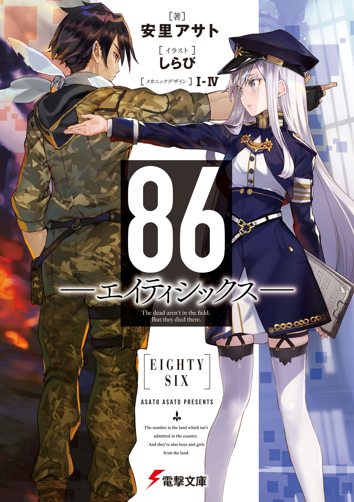
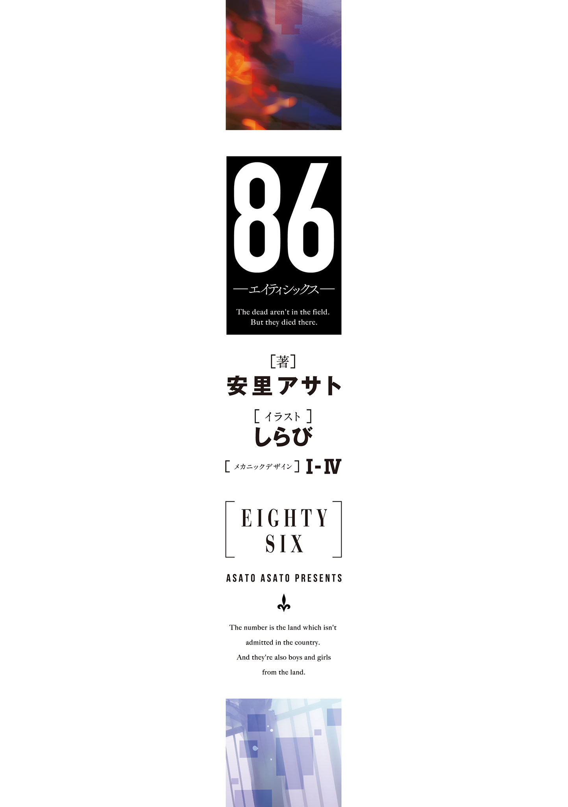
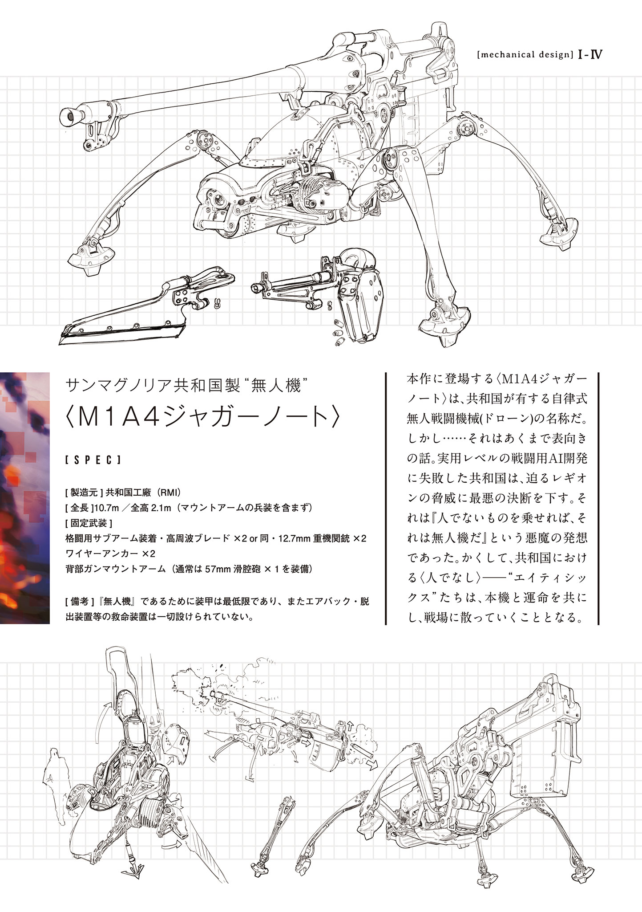
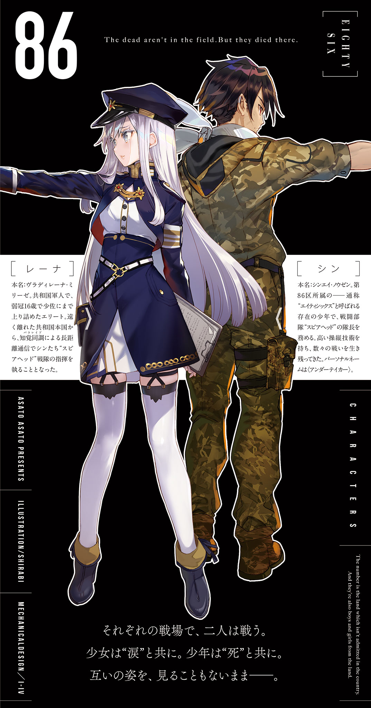
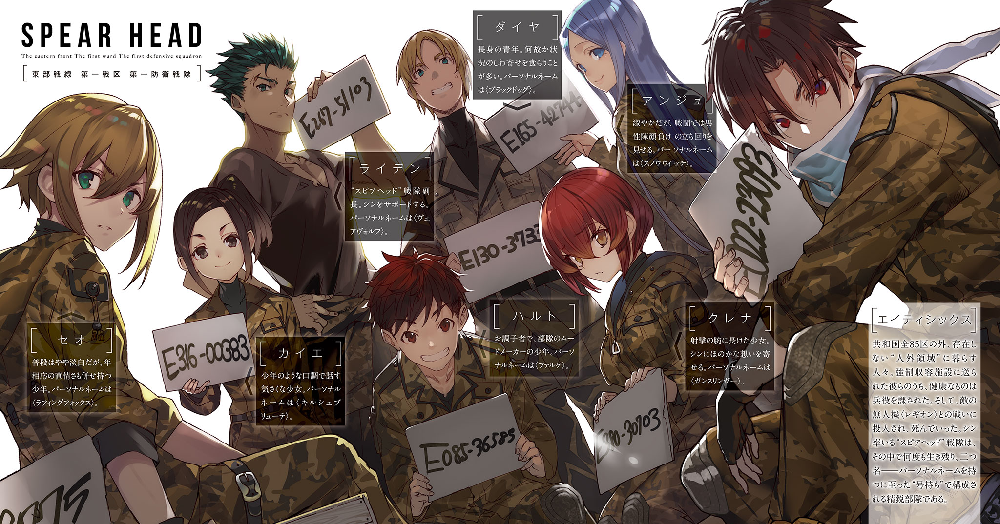
本書（電子版）に掲載されているコンテンツ（ソフトウェア／プログラム／データ／情報を含む）の著作権およびその他の権利は、すべて株式会社ＫＡＤＯＫＡＷＡおよび正当な権利を有する第三者に帰属しています。
法律の定めがある場合または権利者の明示的な承諾がある場合を除き、これらのコンテンツを複製・転載、改変・編集、翻案・翻訳、放送・出版、公衆送信（送信可能化を含む）・再配信、販売・頒布、貸与等に使用することはできません。
豚に人権を与えぬことを、非道と謗られた国家はない。
故に、
言葉の違う誰かを、色の違う誰かを、祖先の違う誰かを人の形の豚と定義したならば、
その者達への抑圧も迫害も虐殺も、人倫を損なう非道ではない。
──ヴラディレーナ・ミリーゼ 『回顧録』
序章 戦野に紅く雛罌粟の咲く
《システムスタート》
《ＲＭＩ Ｍ１Ａ４〈ジャガーノート〉 ＯＳ Ｖｅｒ８．１５》
がっ、と耳障りな雑音が、時代遅れの無線通信に混じる。
『──ハンドラー・ワンよりアンダーテイカー。敵迎撃部隊をレーダーに捕捉。大隊規模の対戦車砲兵、並びに同規模の近接猟兵部隊だ』
「アンダーテイカー了解。こちらでも感知しています」
『現時刻を以て指揮権を現場指揮官に委譲する。捨身護国を以て報恩となし、命に代えても共和国の敵を撃滅せよ』
「了解」
『......すまない、君達。本当にすまない』
「交信終了」
《コクピット閉鎖》
《パワーパック始動。アクチュエータ活性。関節機構ロック解除》
《スタビライザー正常。ＦＣＳ適合。ヴェトロニクスオフライン。索敵モードパッシヴ》
「アンダーテイカーより戦隊各位。ハンドラー・ワンは指揮権を委譲。これよりアンダーテイカーが指揮を執る」
『アルファ・リーダー了解。いつものとおりだな、〝死神〟。腰抜けタマなし飼い主殿は、最後に何だって？』
「すまない、と」
知覚同調の向こうで吹き出す声。
『はっ。相っ変わらずどうしようもねえな白ブタはよ。追い出して閉じこもって耳塞いで、なぁにがすまねぇだよくっだらねぇ。......小隊各位。聞いてのとおりだ。ま、どうせ死ぬなら、我らが死神のお導きなら悪かねぇよな』
「会敵まで六十秒。......砲撃が来るぞ。最大戦速で敵砲撃域を突破する」
『さぁ、いくぞお前らぁ！』
《コンバット・マニューバ・オープン》
《敵機検知：Ｂ１に設定》《Ｂ２に設定》《Ｂ３》《Ｂ４》《Ｂ５》《Ｂ６》《Ｂ７》《Ｂ８》《Ｂ９》《Ｂ10》《Ｂ11》《Ｂ12》《Ｂ13》《Ｂ14》《Ｂ15》《Ｂ16》《Ｂ17》《Ｂ18》《Ｂ19》《Ｂ20》《Ｂ21》《Ｂ22》《Ｂ23》《Ｂ24》──────......
《エンゲージ：Ｂ２１０》
『デルタ・リーダーよりデルタ小隊！ 回りこませるな、ここで撃滅しろ！』
『チャーリー・スリー！ 十時方向に敵機だ！ 回避を─────くそっ！』
『エコー・ワンより小隊各位。エコー・リーダーは戦死。これよりエコー・ワンが指揮を執る』
『ブラボー・ツーより各位。......悪い、みんな。これまでみたいだ』
『アルファ・リーダーよりアルファ・スリー！ あと一分持ちこたえろ！ 今救援に行く！ アルファ・ワンは指揮を引き継げ！』
『──了解。幸運を、アルファ・リーダー』
『頼むぜ。......なぁ、シン。アンダーテイカー』
「なに」
『約束は、忘れてねぇよな』
「......ああ」
《Ｃ１ シグナルロスト》
《友軍ユニット：０》
雑音混じりの上官の声が、外して放り出したヘッドセットから零れて無遠慮に夕暮れの凉風に混じっている。
『......より......位......ハンドラー・ワンより戦隊各位。聞こえるか。応答せよ第一戦隊......』
昆虫の蛹のような有機的なフォルムの機体胴部に背を預けたまま、キャノピを開け放したコクピット内に手を伸ばして無線機の送信ボタンを押した。
「アンダーテイカーよりハンドラー・ワン。敵迎撃部隊を撃滅、敵部隊の後退を確認しました。作戦終了。帰投します」
『......アンダーテイカー。その、貴官の他には何人が、』
「交信終了」
聞くまでもなければ聞けた義理でもない馬鹿げた問いの途中で無線を切り、彼はコクピットの外に目を戻す。
どこまでも紅く雛罌粟の咲く夕映えの野のそこここに、燻る火と機械仕掛けの内腑を覗かせてうずくまる鋼の獣と四つ足の蜘蛛の残骸が、ひっそりと長い影を落としている。敵と、友軍と、その全ての成れの果て。
生きているものなど、どこにもいない。どこまでも、遥か遠くまで、あるのは死体と、死んでいるくせに残ったままの亡霊ばかり。
酷く、静かだった。草原の彼方、黒い影のような山脈の向こうへ沈む陽の、朱く水平な光線。
朱く照らされ、あるいは黒く影に染まり、その全てが息絶えたかのような世界の中で、彼とその乗機だけが、動く力を残す唯一のものだ。
節足を模した長い脚部。白茶けた装甲は無数の傷に汚れ、鋏に似た高周波ブレードと背部主砲。全体的なシルエットは徘徊性の蜘蛛、四つ足の背に長い砲身を負う様は蠍のようであり、また人間で言う頭部のないその形状はどこか、無くした己の首を探して戦場を這いずりまわる白骨死体のようでもあった。
一つ、息をつき、薄暮の風に冷え始めた装甲に凭れて、身すくむような赫々に焼ける空を仰いだ。
遥か東国では覇王の寵姫の、自害の血から生まれた花。
あるいはかつて蛮夷の侵略に為す術もなく鏖殺された、騎士達の血河に咲いた花。
戦場に見渡す限りに咲き誇る雛罌粟の花の真紅は、天を焼き尽くす夕映えの下、狂気のように美しかった。
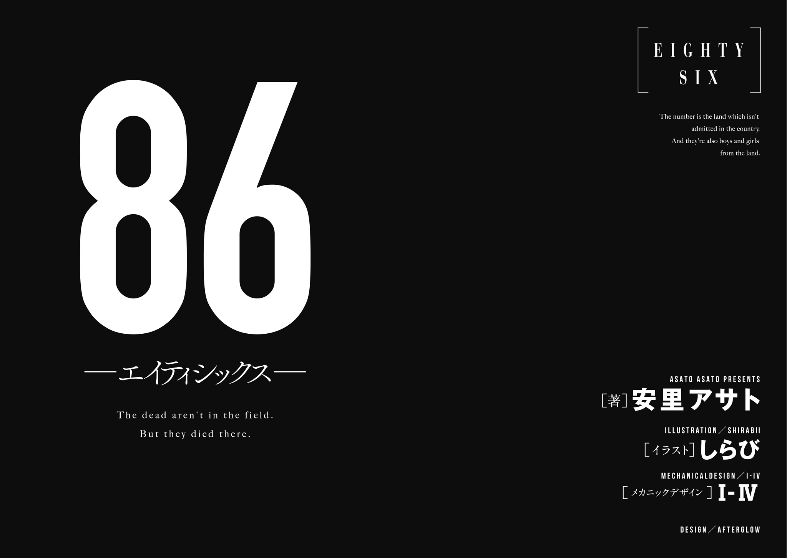
第一章 戦死者ゼロの戦場
その戦場に、死者はいない。
『──それでは、本日の戦況をお知らせします』
『第一七戦区に侵入した帝国軍無人機、〈レギオン〉機甲部隊は、我がサンマグノリア共和国の誇る自律無人戦闘機械〈ジャガーノート〉の迎撃により壊滅的損害を受け、撤退。我が方の損害は軽微、人的損害は本日も皆無であり──』
サンマグノリア共和国第一区、共和国首都リベルテ・エト・エガリテのメインストリートは、九年にも渡る戦時下とは思えぬ平和さで美しさだ。
彫刻に飾られた白亜のファサードが壮麗な、石造りの高層建築群。街路樹の緑とアンティークな鋳鉄の黒い街灯が春の陽光と青い空に絵画のようなコントラストを成し、街角のカフェには生来の銀髪を煌めかせて学生や恋人達が笑いさざめく。
市庁舎の青屋根で誇らしく翻るのは革命の聖女マグノリアの肖像旗と共和国国旗の五色旗で、それは自由と平等、博愛と正義と高潔を表す。綿密な都市計画に基づいて広々とまっすぐな、精緻な石畳のメインストリート。
月の銀色の瞳を輝かせた幼い男の子が、両親と手を繫いで楽しげな高い笑い声で行き過ぎる。
おめかしして、お出かけだろうか。微笑ましく親子連れの背を見送ったレーナは、白銀色の双眸から微笑を消すとホロスクリーンの街頭テレビに目を戻した。
紺青の詰襟の共和国軍女性士官軍服。十六歳の少女らしい白雪の美貌は硝子細工の繊細さで、良家の出を如実に語る優雅な身ごなし。緩く巻いた、繻子の輝きの白銀の髪と長い睫毛にけぶる同じ色の大きな瞳は、共和国の誕生以前よりこの地に住まう白系種の一つにしてかつての貴種、白銀種の血を純血で受け継ぐその証だ。
『有能なる指揮管制官の管制の下、高性能の無人機に戦闘を行わせることで、危険な最前線に人員を投入することなく国防を可能とした共和国の人道的かつ先進的な戦闘システムの有用性は、このように疑いようがありません。亡国の悪しき遺物を共和国の正義の機構が打ち破る日は、二年後の〈レギオン〉全停止を待たずして訪れることでしょう。サンマグノリア共和国万歳。五色旗に栄光あれ』
雪白の髪と目をした雪花種の女性キャスターの誇らしげな微笑に、レーナは顔を曇らせた。
楽観的というより非現実的な戦況報道は開戦直後から繰り返されたいつものことで、多くの市民はそれを疑うこともない。開戦からわずか半月で国土の半分以上を放棄するまでに押し込まれた戦線を、九年経った今でも共和国は押し返せていないというのに。
それに。
一見一幅の絵画のような、春の光の大通りを振り返った。
女性キャスター。カフェの学生や恋人たち。通りを行きかう沢山の人々。すれ違った親子連れや、もちろんレーナ自身さえ。
世界初の近代民主制国家であるサンマグノリア共和国は、その喧伝として他国からの移民を奨励し、積極的に受け入れてきた。共和国は古くから白系種の暮らす地で、他国には別の色をした民族が住む。夜を纏う黒系種、光の金色の金系種、紅い色彩の華やかな赤系種に青い瞳の涼やかな青系種。様々な色彩の有色種の、その全てを平等に迎え入れて。
けれど今、その首都のメインストリートを行き交う誰にも、それどころか首都全体、八五ある共和国行政区のどこにも、銀髪銀瞳の白系種以外の色を持つ者はいない。
そう。今、戦場には公式に人間と扱われる兵士も、戦死者と数えられる死者もいない。
けれど。
「......誰も死んでいないわけじゃないのに」
王政時代の宮廷であるブランネージュ宮殿の一角、絢爛華麗な後期王政様式の国軍本部がレーナの行き先で、この宮殿か、行政区全体を囲む大要塞壁群〈グラン・ミュール〉が、共和国軍人全員の配属先だ。
グラン・ミュールの外、要塞群から更に百キロ以上も離れた前線に配属される軍人はいない。前線で戦うのは無人機──〈ジャガーノート〉だけで、その指揮は国軍本部の管制室から。総勢十万余の〈ジャガーノート〉とその後方の対人・対戦車地雷原、自律式地対地迎撃砲で構成される防衛線は一度として破られたことはなく、当然グラン・ミュール配備の部隊も一度の戦闘も行ったことがない。その他の職務も兵站に輸送、分析に作戦立案の書類仕事の類だから、今の共和国軍人に真の意味での戦闘職は一人もいない。
すれ違った士官達の、露骨な酒臭さに眉を顰めた──また、司令室の大スクリーンでスポーツ観戦でもしていたのだろう。つい咎める目を向けて、見下ろす嗤笑の目にぶつかる。
「諸君、お人形好きのお姫様が睨んでるぜ」
「おー、こわ。......お部屋に籠って大事な無人機のお世話でもしてろっての」
思わず振り返った。
「貴方たち──」
「おはよ、レーナ」
横から声をかけられて、振り返ると同期のアネットだ。
研究部所属の技術大尉で、中等学校以来の付き合いで、飛び級を重ねた今は互いにたった一人の同い年の友人の。
「......おはよう、アネット。いつもは寝坊なのに、ずいぶん早いのね」
「帰るとこよ。昨日徹夜で。......さっきのバカ連中と一緒にしないでよ、あたしは仕事。この天才、アンリエッタ・ペンローズ技術大尉にしか解けない難問が持ち上がってね」
ふわあぁとアネットは猫のように欠伸をする。ショートカットにした白銀種の白銀の髪、同じ色で吊り気味の大きな双眸。
挨拶の間に遠ざかった酒臭い一団を一瞥して、アネットは肩をすくめた。馬鹿の躾け直しなんか時間の無駄。そう雄弁に語る白銀の瞳に、止めてくれたと察してレーナは顔を赤らめる。
「ああそれと、あんたの情報端末、侵入警報ついてたわよ。管制してやれば」
「いけない。......ごめんね。ありがとう、アネット」
「いーえ。でも、あんまり無人機なんかに入れ込むもんじゃないわよ」
む、と振り返りかけて、結局一つ頭を振ってレーナは自分に割り当てられた管制室に向かう。
管制室は無機質なコンソールで半ば埋まるような小さな部屋で、薄暗くひやりと冷たい。待機状態のホログラムのメインスクリーンの淡い光にぼんやりと照らされる、銀色の床と壁。
アームチェアにきちんと足を揃えて掛け、華奢なチョーカー状の銀環──レイドデバイスを長い銀髪をかきあげて首に嵌めて、レーナは凜と視線を上げる。
戦線は遠く、グラン・ミュールの遥か外に固定された今、このちっぽけな部屋が共和国八五区内に残された、唯一の戦場だ。
「認証開始。ヴラディレーナ・ミリーゼ少佐。東部方面軍第九戦区、第三防衛戦隊指揮管制官」
声紋と網膜パターンの認証を経て、管制システムがスタート。
ホログラムのスクリーンが次々に浮かび上がり、遥か前線に設置された各種観測機器の膨大なデータを表示、メインスクリーンがデジタルマップと彼我の機動兵器を示す輝点を映し出す。
友軍機を示す青のブリップは七〇。レーナ指揮下の第三戦隊が二四に、第二、第四戦隊がそれぞれ二三。敵性存在の赤のブリップは、最早数も知れぬほど。
「知覚同調、起動。同調対象、〈プレアデス〉中枢情報処理ユニット」
レイドデバイスのうなじ部分に嵌めこまれた青い結晶体が、じん、とわずかに熱を帯びる。物理的な熱ではない。知覚同調で活性化した神経系が感じる、幻の熱だ。
励起した擬似神経結晶が情報演算を開始。構築した仮想神経を通じて、脳の特定部位──人類が次の進化のために取り置いた、あるいは進化の過程の遥かな太古に忘れ去った、未使用領域の奥底の一機能を活性化させる。
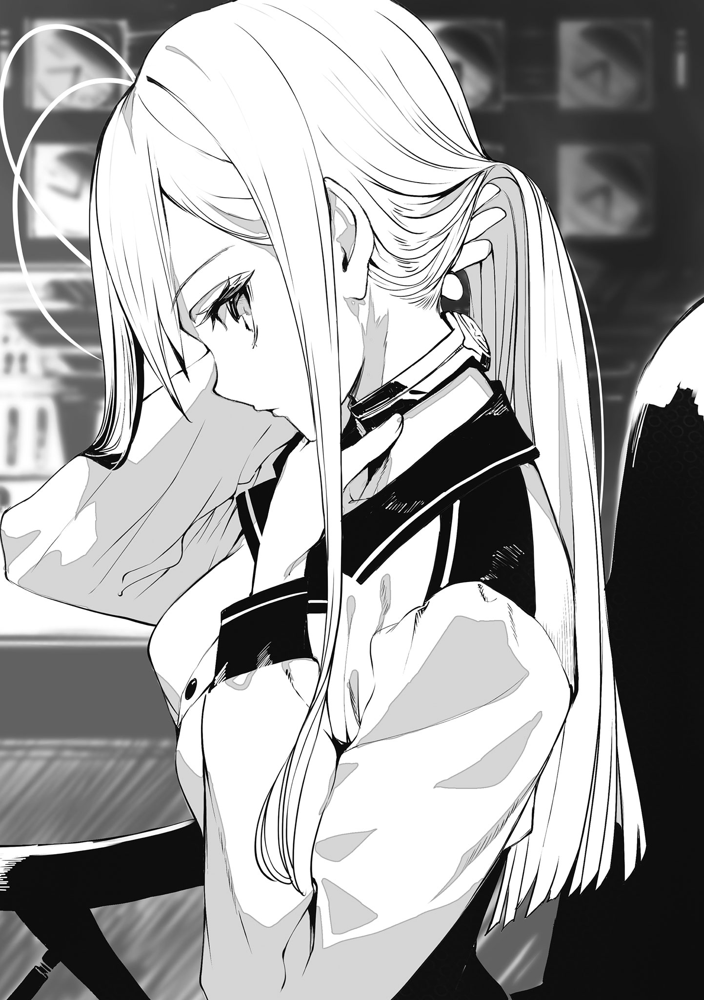
レーナ個人の顕在意識と潜在意識の、その更に奥。本来意識的にはアクセスできない、人間全てが共有する『人類種族の潜在意識』──集合無意識に『道』が通る。その『道』は集合無意識の海を経由し、第三戦隊隊長機、パーソナルネーム〈プレアデス〉のプロセッサーの意識に接続。
〈プレアデス〉の知覚とレーナのそれが、共有される。
「同調完了。──ハンドラー・ワンよりプレアデス。今日もよろしくお願いしますね」
穏やかに呼びかける。ややあって、一つ二つ年上と思われる青年の『声』が返った。
『プレアデスよりハンドラー・ワン。同調良好』
どこか皮肉な響きを帯びた『声』だ。管制室にはレーナ一人しかいないから、ここにいる別の誰かの声ではない。知覚同調で同調した聴覚を通じ聞こえたように感じている、〈プレアデス〉のプロセッサーの声だ。
声。
戦時急造の兵器である〈ジャガーノート〉に、音声会話機能などない。感情や意識と呼べるような高度な思考能力もない。
人間という種の集合無意識を経由した、知覚同調。
敵機甲兵器群に対して設営された防衛線の、対人地雷原。
無人機同士が殺し合う最前線、戦死者ゼロの激戦のそこにいるのは、本当は。
『人間もどきのエイティシックスに毎度のご丁寧なご挨拶、ご苦労なことですね、白系種』
エイティシックス。
それは〈レギオン〉に席巻された大陸で、共和国市民に残された最後の楽園である八五の行政区の外、人外領域に棲息する人型の豚。
共和国市民として生まれながらその共和国によって人間以下の劣等生物と定められた、グラン・ミュールの外の強制収容所と最前線で生きる有色種を指す蔑称である。
†
九年前、共和暦三五八年。星暦二一三九年。
共和国の東の隣国にして大陸北部の大国ギアーデ帝国は、周辺諸国全てに宣戦を布告。世界初となる完全自律無人戦闘機械〈レギオン〉部隊による侵攻を開始した。
軍事大国ギアーデの圧倒的武力の前に、共和国正規軍はわずか半月で壊滅。
残存兵力をかき集めた軍人達が絶望的な遅滞戦術で時間を稼ぐ間に、共和国政府は二つの決断を下す。
一つは八五行政区内への、全共和国市民の避難。
もう一つが、大統領令第六六〇九号。戦時特別治安維持法。
共和国内に居住する有色種を帝国に与する敵性市民と認定。市民権を剝奪し、監視対象者として八五区外の強制収容所に隔離する法律である。
無論、共和国の誇る憲法にも五色旗の精神にも明確に反する法だ。また帝国出身者でも白系種は対象外、かつ帝国出身ではない有色種も収容対象という、露骨な人種差別政策でもあった。
有色種の抵抗は勿論あった。だが政府は武力を以てこれを封じた。
反対する白系種もわずかながらいた。けれど、大半の白系種は容認した。全市民を受け入れるには八五区はあまりに狭く、全員に行き渡らせるには物資も土地も仕事も到底足りなかった。
有色種のスパイ行為が敗戦をもたらしたのだというデマは、自国の劣後という認めがたい現実を直視するより遥かに受け入れやすかった。
何より、敵軍に完全包囲され逼塞した状況下で、誰もが不満の捌け口を必要としていた。
正当化する優生思想が瞬く間に流布した。近代民主主義という先進的で人道的な、最高の政体を世界で初めて樹立した白系種こそが最も優良な人種であり、前時代的で非道な帝国主義の有色種はその全てが劣等種。野蛮で愚鈍な人間もどき、進化に失敗した人型の豚にすぎないのだと。
かくて全ての有色種は強制収容所に送られ、兵役とグラン・ミュール建造の労役を課された。それら費用には接収された彼らの資産が充当され、市民達は兵役と労役と戦時増税を回避してのけた人道的な政府を高く称賛した。
有色種を劣等生物と蔑視する白系種の差別意識は、二年後、生身の兵士──その全員がエイティシックスだった──の代わりに投入された無人機という形で具現化する。
共和国の全技術を結集してなお、共和国製無人機は実戦に耐えるレベルに達しなかった。
けれど劣等たる帝国に造り得た無人機を、優良種たる白系種が造れぬことなどあってはならなかった。
エイティシックスは人間ではないのだから、奴らを乗せればそれは有人機ではなく無人機だ。
共和国工廠自律式無人戦闘機械〈ジャガーノート〉。
人的損害を完全に零にする先進的かつ人道的な兵器として、市民の絶賛とともに投入された。
エイティシックスの操縦士を情報処理装置と定義して搭載した、有人搭乗式の無人機である。
共和暦三六七年。
戦死者のいない激戦場で、戦死者にカウントされない部品扱いの兵士達が、今日もひたすらに死に続けている。
†
〈レギオン〉の赤のブリップが東──彼らの支配域の方向へと撤退していくのを確認して、レーナは少し緊張を緩める。
一方第三戦隊の損耗数は七機で、苦いものが胸中にこみ上げる。七機の〈ジャガーノート〉全てが、その中のプロセッサーごと爆散した。生存者はいなかった。
〈ジャガーノート〉──インテリ気取りの開発者が、古い神話から取った異邦の神の異名。
救済を求めて集う数多の人々を、その戦車の車輪にかけて轢き殺すという。
「......ハンドラー・ワンよりプレアデス。敵部隊の撤退を確認しました」
一つ息をついて、〈プレアデス〉のプロセッサーに──自分と家族の市民権復活を見返りに五年の従軍に応じたエイティシックスの操縦士に、知覚同調を介して言った。
聴覚を同調して互いの声や聞いた音を伝え合う知覚同調は、距離や天候や地形の影響を受けやすく阻電攪乱型の電磁妨害にも阻害されやすい無線通信を過去のものとした、画期的な通信手段である。
理論上、五感のどれでも同調できるが、基本的には聴覚が利用され、それは視覚では情報量が膨大過ぎて使用者への負荷が大きいためだ。その点、聴覚なら最小限の情報量で状況が把握できる。体感的には無線や電話と大差ない分、混乱も少ない。
ただ、それだけではないのだろうとレーナは思う。
視覚を同調しなければ、見なくてすむ。眼前に迫りくる敵の威容を。すぐ隣の仲間が機体ごと吹き飛ばされる無惨を。引き裂かれた自分の体から零れる、自らの血と内腑の色を。
「警戒任務は第四戦隊に引き継ぎます。第三戦隊は帰投してください」
『プレアデス了解。......今日も遠眼鏡で豚の監視ご苦労様です、ハンドラー・ワン』
皮肉な響きは終始消えないプレアデスの応答に、目を伏せた。
嫌われるのは自分が白系種で──迫害者の一員である以上仕方ないとわかっているし、ハンドラーの役目の一つがエイティシックス達の監視であるのも、本当のことだけれど。
「お疲れ様です、プレアデス。隊の皆も、亡くなった七人も。......本当に、残念です」
『......』
沈黙の向こうに、ぴり、と刃のような冷ややかさが混じった。知覚同調は聴覚の共有だが、同調に際し互いの意識を経由している以上、顔を合わせて話している程度の感情は伝わる。
『......いつもいつもお優しいお言葉ありがとうございます、ハンドラー・ワン』
それはどこか冷たい嫌悪か侮蔑のようで、迫害者には向けて当然の怒りや憎悪ともまた異なるその冷淡に、レーナは戸惑う。
†
翌朝のニュースは、またしても敵の損害多数、共和国の損害軽微、人的被害ゼロ、共和国の人道的かつ先進的な云々で敵軍の打倒は近いことでしょう、で、実は同じ放送の録画なんじゃないかと時々疑ってしまう。国営放送の、剣と砕けた足枷のロゴ。支配の打倒と抑圧の打破を意味する、革命の聖女マグノリアの表徴。
『......なお、二年後の終戦に向け、政府は軍事予算の漸次縮小を決定しました。その先駆けとして、南部戦線第一八戦区を廃止、配備部隊の解散を──』
南部一八戦区は失陥したらしい、とレーナは小さくため息をついた。
取り繕っていい内容ではない。それに国土の一部を失っていながら、奪還もしないどころか軍備縮小とは。
接収したエイティシックスの資産はとうに使い切り、膨大な軍事予算が福祉や公共事業のそれを圧迫する中、軍備縮小を求める市民の声を政府は無視できないのだろうけれど。
向かいに座る時代がかったドレス姿の母親が、完璧に紅を引いた唇で柔らかに言う。
「......どうしたの、レーナ。難しい顔をしていないでお食べなさいな」
食堂のテーブルには朝食が並んで、そのほとんどが生産プラント製の合成培養品だ。
半分以下に減った国土に、エイティシックスを除いてなお総人口の八割に上る人数を押し込んで、更にその全員を養うだけの農地を作る余剰は八五区のどこにもない。諸外国は〈レギオン〉の軍勢と電磁妨害に隔てられ、貿易や国交はおろかまだ存在しているのかさえわからないまま。朧な記憶のそれとは風味の異なる紅茶を含んで、それらしい見た目と味を再現した小麦蛋白製の合成肉を切り分ける。
唯一紅茶に添えたコンポートだけが庭の木苺を使った本物だが、こんなものさえ庭どころか植木鉢一つの余裕もない今の共和国の平均的な住宅事情からすれば、とんでもない貴重品だ。
母親が微笑む。
「レーナ。そろそろ軍などやめて、相応しい家柄のご子息と結婚なさい」
レーナは内心ため息をついた。ニュースの戦況報道は毎日同じで、母親のこれも毎日だ。
家柄。格式。身分。血統。優良な血。
かつてミリーゼ家が貴族だった頃に建てられたこの瀟洒で贅沢な邸宅にはよく似合う、けれど一歩外に出れば時代遅れの、裾を引きずる絹のドレス。
幸福な時代のまま時の止まったような。
小さな狭い甘い夢に閉じこもって、外の世界など見ていないような。
「〈レギオン〉やエイティシックスの相手など、本来なら栄えあるミリーゼ家の令嬢がすることではありません。亡くなったお父様は確かに、軍人であらせられたけれど。今はもう、戦争などという時代ではないのですよ」
時代でないも何も、今はまさに〈レギオン〉との戦争の真っ最中なのだが。戦場は遥か遠く、前線に行く者も帰って来る者もいなくなり、市民にとってこの戦争は、映画の中の出来事のような、現実味も当事者意識も薄いものとなって久しい。
「祖国を守るのは共和国市民の義務であり誇りです、お母様。それから、エイティシックスではありません。彼らもわたし達と同じ、れっきとした共和国市民です」
母親は品の良い細面の鼻面に思い切り皺を寄せる。
「汚らしい色つきの、何が共和国市民ですか。まったく、餌がなければ働かないのが家畜とはいえ、政府もあんなけだものどもに再び共和国の地を踏むのを許すなんて」
従軍したエイティシックスとその家族には、共和国の市民権が再交付される。過激な差別主義者さえのさばる八五区の中、彼らの身の安全のためその居所は一切非公開だが、開戦からもう九年。かつての自宅に戻り、暮らしている者は決して少なくないはずだ。
それは彼らの文字通りの献身に対し与えられて然るべき当然の報酬であるのだが、生憎と奉仕を受ける側はそうは思わないという典型例が目の前で嘆かわしげに首を振っている。
「ああ穢らわしい穢らわしい。あんな人間もどきどもがつい十年前までリベルテ・エト・エガリテを我が物顔で跋扈していたなんて、そして再び舞い戻ってこようとしているなんて、ああ。共和国の自由と平等が、一体どれだけ穢されていることかしら」
「......自由と平等を穢しているのは、お母様の今のお言葉だと思いますけれど」
「どういうこと？」
きょとんとなる母親に、今度こそレーナはため息をついた。
わからないのだ。本当に。
母に限ったことではない。今でも共和国市民は自国の共和制を、五色旗の象徴する自由と平等、博愛と正義と高潔の精神を誇っている。かつての王政や独裁制の国家の所業を歴史に学んではその圧政を憎み、搾取に憤り、差別を蔑んで、虐殺を悪魔の所業と目を覆う。
けれど、同じことを今まさに共和国が行っているのだと、彼らは理解できない。指摘すれば憐れみの目さえ向けて問い返してくる。
君は人間と豚の区別もつかないのかね、と。
レーナは仄かな桜色に染まる唇を嚙む。
言葉は、便利だ。
容易く本質を塗り潰してしまえる。名札一つ張り替えただけで、人間を豚に変えてしまえる。
母親は困ったように眉を寄せて、やがて何かに思い至った様子でああ、と笑った。
「お父様はあんな家畜どもにも慈悲深い方だったから、同じように扱ってやろうというのね」
「......いえ、それは」
エイティシックスの強制収容に強く反対し、最後までその撤廃を求め続けた父のことは、確かに深く尊敬している。けれど、同じように振舞いたいというのは少し違う。
今でも覚えている。
焰に浮かび上がる、四つ足の蜘蛛のシルエット。
装甲に描かれた首のない骸骨の騎士の紋章。
助け出してくれた手。生まれながらに身にまとう、鮮やかな真紅と漆黒。
おれ達は。この国で生まれてこの国で育った、共和国市民だから。
追想を母親の無遠慮な声が破る。
「でもね、レーナ。家畜には家畜なりの扱いをするべきなの。野蛮で愚鈍なエイティシックスに、人間の理想や高尚さを理解させるなんてできないわ。檻に入れて、私達が管理してやるのが正しいの」
レーナは無言で朝食を食べきって、ナプキンで口を拭いて席を立った。
「行ってまいります、お母様」
「担当部隊の変更......ですか？」
鈍い金と臙脂の縞の壁紙が重厚な師団長のオフィス。アンティークのデスクについた師団長のカールシュタール准将から告げられた辞令に、レーナは白銀色の双眸を瞬かせた。
部隊の再編に伴うハンドラー変更は、実のところよくある話だ。激戦の続く前線では損害はしばしば部隊を維持できない域に達し、ほとんど日常的に部隊の統合や再編、廃止と新設が行われている。レーナは経験したことはないしするつもりもないが、担当する部隊の全滅さえ、よくある話だ。
それほど、〈レギオン〉は強い。
軍事大国であり技術大国であったギアーデ帝国の獰猛さと技術力を惜しみなくつぎ込んで開発されたそれらは破格の兵装と驚異的な運動性能、同時代の産物とはとても信じられぬ高度な自律判断能力を有し、また真実無人機であるが故に疲れず、厭わず、恐れない。壊しても壊しても、これも完全自動制御の生産・修復工場が〈レギオン〉支配域の奥深くに点在するらしく、黒雲の湧くように新たな大軍が攻め寄せてくる。
市民の認識とは裏腹に性能において劣る〈ジャガーノート〉では、とてもではないが損害軽微などありえない。実際には出撃の度に大量の損害を出して、その都度同じ数を補充して戦線を維持しているだけだ。
けれど、今レーナが担当している隊にそこまでの損害は出ていない。
カールシュタールは傷跡の残る頰を緩める。穏やかな威厳を滲ませる顎鬚。長身に広い肩。
「君の担当する部隊が再編・統合されるというのではないよ。実は、ある部隊のハンドラーが退役することになってね。急遽別の隊のハンドラーから代わりの者を選出した、というわけだ」
「重要拠点の防衛部隊なのですか？」
後任決定まで待機させておくことができない部隊、ということは。
「ああ。東部戦線第一戦区第一防衛戦隊、通称スピアヘッド戦隊。東部方面軍全体から古参兵を集めた、......まぁ、いわゆる精鋭部隊だよ」
レーナはいよいよ怪訝にその可憐な眉を寄せる。
第一戦区は重要も重要、〈レギオン〉の侵攻が最も激しい最重要の防衛拠点だ。そして第一戦隊はその戦区における作戦行動を一手に引き受ける主要部隊。夜間警戒任務と支援任務、第一戦隊が出動できない場合の代行出撃を担当する第二から第四戦隊とは課せられた責務の重さが全く異なる。
「新米少佐のわたしなどに、務められる大任とは思えませんが......」
カールシュタールは苦笑する。
「九一期生最年少にして最初に少佐昇進を果たした才媛がそれを言うのかね？ 謙遜も過ぎるといらぬ反感を買うぞ、レーナ」
「すみません、ジェローム小父様」
レーナ、とファーストネームで呼んだカールシュタールに、レーナも部下としてではなく頭を下げた。カールシュタールは亡くなったレーナの父の親友で、共に九年前に壊滅した共和国正規軍のごくわずかな生き残りだ。小さい頃は家に来た彼に遊んでもらったこともあるし、父の死後も葬儀の手配から今に至るまで、何くれとなく世話を焼いてくれている。
「実を言うと、......成り手がいないのだよ、スピアヘッド戦隊のハンドラーの」
「精鋭部隊、なのでしょう？ その指揮を任されるは共和国軍人として、またとない名誉なのではありませんか？」
ハンドラーとて真面目に職務を果たす者ばかりではなく、管制室でテレビを見たりビデオゲームをしたり、そもそも管制室にいなかったり、酷い者では指示も情報も与えずプロセッサー達が死んでいく様を刺激的な映画のように楽しんだり、自隊の全滅までの日数を同僚と競ったりしている者もいるのは知っているが。というか真面目に指揮など執っている方が少数派という有様なのだが、それはそれとして。
「うむ、部隊についてはまあそうなのだがね......」
カールシュタールはしばし、言い淀んだ。
「......スピアヘッド戦隊隊長機、パーソナルネーム〈アンダーテイカー〉には、ちょっとしたいわくがあってね」
葬儀屋。奇妙な名前だ。
「それを知るハンドラーからは〝死神〟と呼ばれて恐れられているのだが、......担当するハンドラーを、壊してしまうのだそうだ」
「え？」
思わずレーナは聞き返してしまった。逆ならともかく。
プロセッサーが、ハンドラーを壊す？
どうやって？
「怪談の類ではないのですか？」
「勤務中に部下を呼びつけて与太話をするほど暇ではないよ。......事実として、アンダーテイカーの所属部隊のハンドラーには担当部隊変更や退役の申請をする者が異常に多い。最初の出撃の直後に部隊変更を申請した者もいるし、因果関係は不明だが退役後自殺した者までいる」
「......自殺、ですか？」
「信じがたい話だがね。......『死霊の声』とやらに、退役してなお付きまとわれたのだそうだ」
「......」
それはやはり、まるきり怪談の類に聞こえるのだけれど。
沈黙するレーナを何と思ったか、カールシュタールは気遣わしげに首を傾げる。
「君も嫌ならそう言って構わんよ、レーナ。今の部隊に残りたければそれでいいし、スピアヘッド戦隊は先刻も言ったが古参兵の集まりだ。話を聞く分では出撃時に同調するのがいけないらしいから、最低限の監視だけ行って、指揮は現場に任せても何の問題も......」
きっとレーナは唇を引き結ぶ。
「やります。スピアヘッド戦隊の管理も、指揮管制も、全霊を以て」
祖国を守るは共和国市民の義務であり誇り。その最先鋒の部隊を任されるならこれ以上のことはないし、投げ出すなんてもっての外だ。
カールシュタールは目を細める。まったく。本当に、この子は。
「最低限、でいいのだよ。必要以上のことはしなくていいんだ。......指揮下のプロセッサー達と交流など持とうとするのも、もう控えなさい」
「部下について知るのは、指揮官の務めです。拒まれない限り交流を持つのは当然のことです」
「まったく......」
柔らかな苦笑で嘆息した。デスクの引き出しから書類束を取り出して、おどけた様子でひらひらと振る。
「お小言ついでにもう一つ言うがね。いい加減、報告書に戦死者数を記載するのはやめたまえ。公的に前線に人間はいないことになっている以上、存在しない項目を記載した書類など受理できないし、......こんな抗議をしても、気にする者はもういないのだよ」
「だからと言って。黙認はできません。......そもそも有色種の強制収容には、もう根拠も無いというのに」
〈レギオン〉という強大な軍事力を以て瞬く間に大陸を席巻したギアーデ帝国は、しかし、どうやら四年ほど前に滅んでしまったらしいのだ。
阻電攪乱型の強烈な電磁妨害の合間にわずかに傍受できていた帝国の管制無線がその頃にぷっつり途絶えて、それきり二度と捕捉できない。〈レギオン〉の暴走かその他の理由か、とにかく、滅びたことだけは確実だろう。
『敵国の系譜』であることを建前としたエイティシックスの強制収容は、だから、その敵国が無くなった以上続ける根拠も正当性ももう存在しない。
それなのに、一度手にした差別という娯楽を市民達は手放そうとしない。踏みつけている間は己の優越を錯覚できて、虐げている間は自らを勝者と思いこめる。帝国とその兵器に閉じ込められ続けている現状と敗北感を打破するのではなく欺瞞するための、その手軽な快楽を。
「誤ちを黙認するのは、それに加担することです。こんなことは本来、赦されることでは......」
「レーナ」
穏やかに呼ばれてレーナは口を噤む。
「君は少し、理想を求めすぎる。他人にも、自分にも。理想というのはね、手が届かないほど高いから理想というのだよ」
「......ですが」
カールシュタールの白銀の双眸が懐かしくそしてほろ苦く緩む。
「君は本当にヴァーツラフに似たな。......では、ヴラディレーナ・ミリーゼ少佐を、本日付で第一戦区第一防衛戦隊付指揮管制官に任命する。頑張りたまえ」
「ありがとうございます」
「......で、受けちゃったの？ レーナってばどんだけ物好きなのよ」
さて、担当部隊が変更になるということはそれに伴って色々なものが変更になるということで、知覚同調の接続対象の設定もその一つだ。
知覚同調開発チームの主任はアネットで、だからレーナの設定変更や調整の依頼は全て彼女がやってくれる。ついでに検査もしてきなよと勧められて、受けて軍服に着替える、その合間。
検査用の不織布のガウンを丁寧にハンガーにかけ、ブラウスのボタンを留めて、レーナは検査室とは強化硝子の壁で仕切られた観察室のアネットに応じる。
王政時代は離宮であった研究棟は、外観は瀟洒な中期王政様式だが内部は少々趣味走った未来的な作りで、金属と硝子を多用した無機質さがいかにもらしい。一面の硝子壁に展開しては流れていく、熱帯魚や珊瑚礁の映像ウィンドウ。
「だって、どうせ作り話でしょう、アネット。仕事をしない口実の」
両のストッキングを靴下留めで留めながら、レーナは唇を綻ばせる。知覚同調使用に関する定期検査はきちんと受けているのに、心配性なんだから。
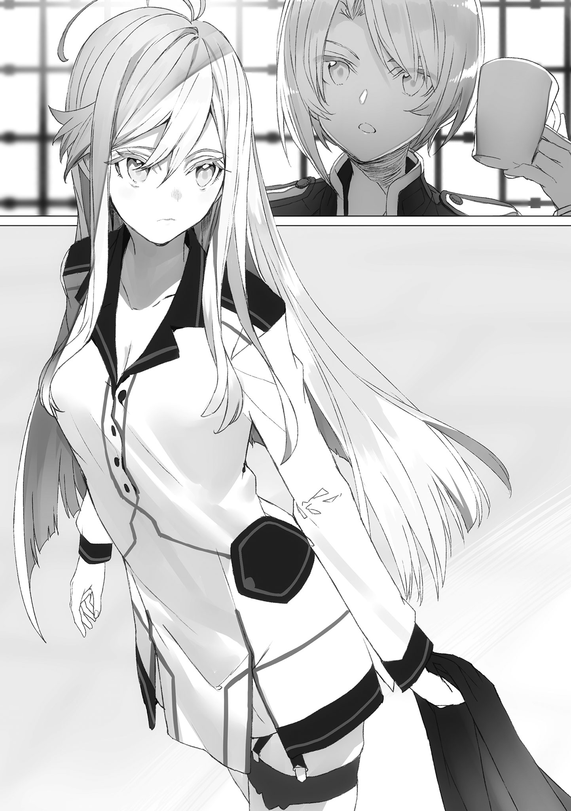
「自殺した奴がいるってとこはほんと」
硝子壁とホロスクリーンの向こうで、変更後の設定値をレイドデバイスに入力していたアネットはマグカップのコーヒー......というか濃すぎて泥水的な何か......を啜ってから言う。
「死霊がどうとかは暇なおっさんの与太だと思うけど。散弾銃で自分の頭吹っ飛ばしたって」
スカートを着け、上着を羽織り、襟元を留めて振り返る。身をかがめた時に肩から滑り落ちた銀髪を片手で背に払った。
「......本当に？」
「知覚同調の不具合じゃないかって、調査依頼がうちにも来たから。辞めてく分にはともかく、流石に自殺ってなると世間的にもね」
「どうだったの？」
アネットは飄然と肩をすくめた。
「さあ」
「さあ、って......」
「本人死んでんだから詳細なんか調査しようがないわよ。レイドデバイスには異常なし、それで終了。どうしてもってんなら、〈アンダーテイカー〉だっけ？ そのプロセッサー連れてきてって言ったんだけど、輸送部のバカどもが『当フライトには豚の席はありませんー』って」
憤然と腕を組んで背もたれに凭れて鼻から息を吐く。折角ボーイッシュな美人なのに、そういう態度をしょっちゅう取るものだからあんまり女性らしくない。
「連れてきさえすれば頭でも何でもバラして調べてやったのに。まったく」
露悪的に過ぎる言い草に、レーナは眉を寄せた。もちろん本気でないのは分かっているが、流石に聞き苦しい。
「......その、プロセッサーの方の話は、」
「あたしじゃなくて憲兵部の奴が、ね。報告書はもらったけど、本当に形式程度よ。心当たりはありませんとか言われておしまい。ほんとはどうだかわかりゃしないけど」
言って、アネットは皮肉気に口の端を吊り上げた。
「ハンドラーが死んだって伝えたら、たった一言、そうですか、って。だからどうしたって口振りだったって。ま、エイティシックスだもん。仮にも上官が死んだっていうのに、その程度なのよね」
「......」
沈黙するレーナに、ふと、アネットは笑みを消した。
「......ねえ。レーナもやっぱり、研究部に来なよ」
「？」
きょとんと瞬いたレーナに、猫のように吊った双眸が向く。思いの外に真摯な、白銀の瞳。
「今の軍なんて、完璧ただの失業対策じゃない。研究部はまだしも、他の部署なんて仕事にあぶれた高番号区のバカばっかりで」
共和国の現行政区は第一区を中央に、中心つき四角数の形で付番される。番号が高くなるごとに居住環境と治安、教育水準は悪くなり、失業率も高い。
「二年後に〈レギオン〉がいなくなって、その後どうすんのよ。平時に『元軍人』の肩書きなんて、潰し利かないよ」
レーナは微苦笑する。
〈レギオン〉は全機が二年後に停止する。
鹵獲した何機もの〈レギオン〉を調査して判明した事実だ。彼らの中枢処理系には変更不可の寿命が設定されていて、バージョンごとに五万時間、およそ六年弱。万一の暴走時の保険だったのだろう。
帝国が四年前に滅びたと推定される以上、二年後には全〈レギオン〉は中枢処理系が崩壊して稼働を停止する。実際前線で観測される〈レギオン〉の数は、ここ数年減り続けている。最後の更新を受けられなかった機体が壊れ始めているものらしい。
「ありがとう。でも、今は戦時だもの」
「だからって別に、あんたがやらなくたっていいじゃない」
アネットも譲らない。入力を終えたホロスクリーンを手を振って消して、身を乗り出す。
どこか忌々しげに吐き捨てた。
「真偽はどうでも、そういうまともじゃないプロセッサーが相手よ。何があるかわかったもんじゃないわよ。......知覚同調にしたって、本当に安全かどうかなんてわかりゃしないんだから」
レーナはちょっと、目を瞠った。
「......知覚同調は、安全性が完璧に証明されていると、」
口が滑ったらしい。アネットはしまったという顔をして、声を潜めて続けた。
「だって、レーナ。この国よ？ 表向きはそうでも、そんなのとりあえずの、ってだけで」
優良種を自称する共和国は、自国の技術にいかなる瑕疵も許さない。実際にはあっても、認めない。知覚同調しかり、......〈ジャガーノート〉しかり。
「実際はそういう、超能力？ がある人達を観察して、脳のこの部分が活性化すると知覚同調が使える、ってことがわかってるだけなの。......これもそう」
片手でレイドデバイスをつついた。青い結晶体と、華奢な銀の本体。結晶体には今は情報端末から伸びるコードが幾本も接続されて、内部の情報を書き換えている。
「その元々の『能力者』が親兄弟間で同調できたから、ハンドラー側とプロセッサー側のデバイス両方に二親等相当の擬似遺伝子情報組み込んでるってだけで。何でそれで同調対象になるのかは、よくわからないのよ」
「でも......元はお父様の研究なのでしょう？」
「共同研究だもん。基礎理論っていうか仮説は全部研究相手の構築で、父さんは環境の準備と、募集した被験者で現象再現するのが担当だったから」
「なら、研究相手の方に確認すれば」
アネットはその時、ひどく冷えた目をした。
「無理。......エイティシックスだったから」
人間ではないエイティシックスは名前が記録されず、ただ収容時に割り振られた番号でのみ管理される。どの強制収容所に隔離されたのかも、今となってはもう知る術はない。
「今のレイドデバイスは安全装置があるからそんなことは起きないけど、例えば視覚を複数対象と同調したら脳が過負荷で焼き切れちゃうし、同調率最大で長時間同調してると自我崩壊しちゃう。活性しすぎても『帰って』これなくなるし......知ってるでしょ、父さんの事故は」
「......」
アネットの父親であるヨーゼフ・フォン・ペンローズ博士は、知覚同調理論とレイドデバイスの完成直後、実験中の事故で狂死した。
レイドデバイスの神経活性率が、誤って理論上の最大値に設定されていたのだという。集合無意識の更に下の『何処か』、人類を『個』とした場合の『全体』──世界そのものの集合無意識にまで、潜ってしまったのではないかとも。
「長期使用でどういう影響が出るかもわからないんだから。......エイティシックスはすぐ死ぬから別にいいけど、あんたは何かあったら、困るでしょ」
む、とレーナは反射的に顔をしかめた。アネットは純粋に、心配してくれているだけとわかっているけれど。
「それは、でも、......卑怯なことだわ」
果たしてアネットは聞き飽きたと言いたげにぞんざいに片手を振った。
「はいはい。あんたもほんと、物好きよね」
一瞬気まずい沈黙が硝子壁の両側に満ちる。
かき消すように、不意にアネットはにやりと笑った。
「物好きついでに、レーナ。シフォンケーキ食べてかない？ 新作。卵本物」
「えっ」
途端にぴょこんと見えない猫耳を立てたレーナに、アネットは笑いを嚙み殺した顔になった。
レーナだって女の子だ。甘いものには無条件で心惹かれるし、大量の卵白を使用するシフォンケーキは、養鶏場を作る余裕もろくに無い今の共和国では大変な贅沢品だ。やはりかつての貴族階級で、大邸宅の広い庭で鶏を飼えるペンローズ家のご令嬢だからできる趣味である。
ただし。
「ええと......それは入っていないチーズの味がするとか、黒い煙を吐きそうとか、見た目がその......カエルに似てるとか......そういうことはないわよね......？」
ちなみに以前アネットがシュークリームを作った時の試食者の感想である。
最後のは正確には、『ぶくぶくに肥ったヒキガエルの轢死体』と言っていた。形状はともかく何故か色までそっくりだったのだとか。
「今あるのは大丈夫よ。昨日見合い相手が来やがってそいつで実験済みだから」
試作五号あたりで泡吹いて撃沈したが。
「ならいいけど......いくら気に入らなくても、その方にもまともな新作も分けてあげてね」
「もちろん。わざわざ可愛くラッピングまでしてあげたわよ。ピンクの包み紙でリボンで、キスマーク付きのメッセージカードに『愛しのテオバルトへ』って書いて、愛人と同棲してるアパルトマンのポストに」
「......」
気の毒に、と思うべきなのかどうか、レーナは迷った。
ケーキと紅茶とアネットとのおしゃべりを楽しむ間にデータ書き換えの完了したレイドデバイスを、帰宅した屋敷の自室でレーナは首に嵌める。
白系種好みの繊細な装飾紋様の施された、見た目には瀟洒なチョーカーのような優美な銀の環。演算用の擬似神経結晶を飾りの小粒の結晶体が取りまいて煌めく様は、ヘッドセットや咽頭マイクと同じ軍用の通信機器とは思えない。
ふと、昼間の話を思い出した。
死神。自殺者さえ出している。人の死をどうとも思わない、──エイティシックスの。
どんな、人だろうか。
わたし達を、──やはり、嫌っているのだろうか。
一つ首を振り、ふ、と短く息をついた。
よし。
「──アクティベート」
知覚同調を起動。距離や天候や地形の影響を受けない、起動の場所も時間も選ばない画期的な相互通信手段。
接続完了。問題なし。さわさわと、この部屋の音ではないごく微かな雑音。
「ハンドラー・ワンより、スピアヘッド戦隊各位。──初めまして。本日より、貴方がたの指揮管制を担当いたします」
戸惑うような、間が空いた。
それをレーナは哀しく感じる。
担当した戦隊の誰もが、着任に際しこうして挨拶すると、一様に戸惑う。
本来なら同じ人間同士、当たり前のことのはずなのに。
困惑の気配は一瞬、同調した聴覚の向こうで、静かな、ごく年若い声が応じた。
『初めまして、ハンドラー・ワン。こちらはスピアヘッド戦隊戦隊長、パーソナルネーム〈アンダーテイカー〉です』
不吉な異名や噂とは裏腹、耳に心地よい正確な発音と発声の、深い森の湖水のように静穏な声だった。元は中流以上の家の出ではないかと思わせる、おそらくは同年代の少年の声。
『ハンドラー交代の通達は承っています。本日よりよろしくお願いいたします』
寡黙な性情を容易に想像させる淡々とした声音に、レーナは微笑んだ。
そう、こうして直接会話をすればすぐにわかる。誤魔化すことなど絶対にできない。
彼らは、人間だ。
エイティシックスなどという、人間以下の何かではない。
「こちらこそ。よろしくお願いしますね、アンダーテイカー」
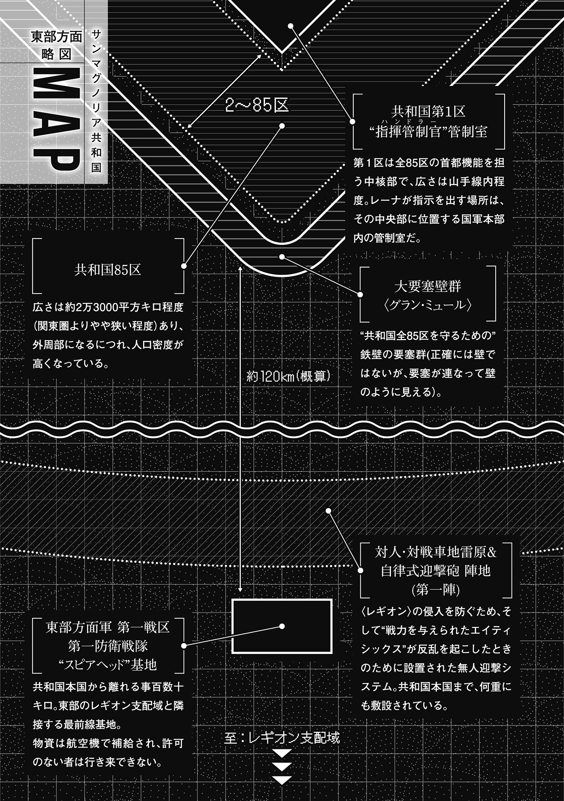
第二章 白骨戦線異状なし
『退役まで残り一二九日!! スピアヘッド戦隊にクソ栄光あれ!!』
風雨に色褪せたバラックの格納庫の奥の壁、誰が拾ってきたのかも知らない古い黒板で、五色のチョークのカウントダウンがでかでかと踊っていた。
クリップボードから目を上げて、シンはその底抜けに陽気な一文を見上げる。正確には残り一一九日。この戦隊に配属された日にクジョーが書いたもので、毎朝クジョーが更新していた。
十日前に死んだ。
止まったままのカウントダウンをしばし見上げ、シンはクリップボードの整備記録に目を戻した。待機状態の〈ジャガーノート〉が並ぶ格納庫を、整備済みの自機の元へ向かう。
焰紅種の血赤の瞳。夜黒種の漆黒の髪。赤系種と黒系種双方の貴種の血を半分ずつ継いだその色彩は、エイティシックスと総称される有色種の一人と一目でわかる特徴だ。
端整な顔立ちは年に見合わぬ静謐な表情のためにどこか冷たく、細身の体軀と白皙の容貌は旧帝国の貴族階級特有のそれ。森林と草原、湿地帯から成る東部戦線の地勢にもかかわらず砂色と灰茶の砂漠迷彩の野戦服を着て、これは共和国軍の死蔵在庫が回されているためだ。咎める上官もいないからくつろげた襟元に、首を覆う空色のスカーフが覗いていた。
整備作業中の格納庫は、機械の作動音と整備クルーのやり取りの怒鳴り声でやかましい。格納庫前の広場で二対二の変則バスケットボールに興じる仲間達の歓声と、何処かでかき鳴らされるギターの古いアニメソング。キャノピを開け放した自機のコクピットでポルノ誌を眺めていた隊員のキノが、こちらに気付いて片手を挙げる。
最前線とはいえ戦闘の無い日は、この基地の要員は割と暇だ。
今もハンドラーへの報告上は競合区域付近の哨戒を行っている時間で、本来なら毎日欠かせない哨戒を、この隊は必要がないから行っていない。出歩きたい気分だった数名が近くの都市の廃墟に物資調達に行き、他の者も当番の仕事（炊事とか洗濯とか掃除とか裏の畑と鶏の世話とか）をしたり好きに過ごしたりしている。
荒々しい軍靴の足音が近づいて、戦車砲も真っ青の馬鹿でかい胴間声が格納庫に轟き渡った。
「シン！ シンエイ・ノウゼン！ またやりやがったなてめぇこの野郎！」
キノがゴキブリじみた速度でコクピットから物陰に退避し、シンは平然と声の主を待った。
「なにか」
「なにかじゃねえよアンダーテイカー！ ったくおめぇは──！」
地獄の番犬のような形相で詰め寄ってきたのは、白髪交じりの消炭色の髪にサングラス、機械油の染みついた作業着を着た五十がらみの整備クルーだった。
スピアヘッド戦隊整備班、レフ・アルドレヒト班長。今年十六になるシンもプロセッサーの中では年長の部類だが、アルドレヒトは年長どころか長老クラス、なんと九年前の第一期徴募兵の生き残りだ。
「なんっでてめぇは出撃の度に機体ぶっ壊してくるんだよ!? またアクチュエーターとダンパーがたがたにしやがって、足回り弱えんだから無茶すんなって毎度毎度言ってんだろうが！」
「すみません」
「お前それさえ言っときゃ済むと思ってんな!? 謝れっつってんじゃねえよ改善しろっつってんだよ。いつか死ぬぞあんな無茶な戦い方しやがって！ 代えの部品が底ついたってのに、次の補充まで修理できねぇぞ！」
「二号機が」
「ああ有るなぁどっかの戦隊長が毎っ回毎っ回機体ぶっ壊すせいで置いてある予備が二機もな！ 他のプロセッサーの三倍も整備の手間かけさせやがって、てめぇ何様だ王子様か!?」
「共和国の身分制度は三百年前の革命で廃止されて」
「ぶっとばすぞクソガキ。......お前の損傷率と壊し方じゃ三機ねぇと修理がおっつかねえんだ、補充までの日数と出撃ペース考えたら保たねぇんだよ！ どうすんだよ壊れないようにってお祈りでもするか？ 次は百年後に来てくださいって屑鉄どもにお願いしてみるのか、ああ!?」
「クジョーの機体を、ファイドが回収していたはずですが」
淡々と言うと、アルドレヒトはいっとき沈黙した。
「まあ、確かにクジョーの奴の機体からその部品はとれるけどよ......共喰い整備なんざやりたかねえが。つか、おめえはいいのかよ？ 死人出した機体の部品なんざてめぇの機に使われて」
シンはわずかに首を傾げると、自分の〈ジャガーノート〉──〈アンダーテイカー〉の装甲を手の甲で軽く叩いた。キャノピの下に小さく描かれた、シャベルを担いだ首のない骸骨のパーソナルマーク。
アルドレヒトが苦笑する。
「今更か。......そうだったな、アンダーテイカー」
嚙みしめるように頷いて、老整備兵は開け放したシャッターの向こう、どこまでも続く春の野を見やった。
雲一つない、他の何ものをも吞みこむ虚無の色彩を湛えた、あまりにも深く高い紺碧の蒼穹。その下に広がる、矢車菊の花の瑠璃と若葉の翠緑が精美なモザイクを描く草原が、この戦場で散った幾百万のエイティシックスの白骨が眠る巨大な墓標だ。
エイティシックスに、入る墓はない。存在しない戦死者の墓を作ることは許されていないし、遺体の回収も禁じられている。
人型の豚には死んだ後に安らう権利も、死んだ仲間を悼む自由も存在しない。それが九年前に彼らの祖国が作り上げ、かくあるべきと九年維持されている世界の形だ。
「クジョーの奴は、ばらばらに吹っ飛んだんだったか」
「ええ」
自走地雷──爆薬の詰まった胴体に棒状の手足と顔のない頭部のついた、遠目には人に見えなくもない出来の悪い対人兵器を負傷兵と見誤って組みつかれた。夜戦の、他部隊の救援任務中だった。
「そりゃあよかった。逝けたのか、あいつは」
「おそらくは」
シン自身は天国も地獄も信じてはいないけれど、ここではない何処か、還るべきところには。
アルドレヒトは深く笑う。
「最期におめぇと同じ部隊にいて、クジョーは運が良かったな。......こいつらも、」
破れたゴールネットをボールが揺らして、歓声が上がる。ギターとアニメソングの不謹慎な替え歌の大合唱が裏の畑で楽しげに響いている。
それが他のどの部隊にもありえない光景であることを、アルドレヒトは知っている。
出撃につぐ出撃。〈レギオン〉の襲撃を警戒する日ごとの哨戒。緊張と恐怖に神経をすり減らし、戦闘の度仲間は死んでいく。その日生きのびるのが精一杯という極限状況で、娯楽や人間らしい生き方など考えている余裕はない。
けれどこの隊では、襲撃そのものは避けられなくとも、急襲を受ける心配だけはない。
「......こいつらがこうやってられんのはおめぇの功績だな、シン」
「他のプロセッサーの三倍も整備の手間をかけさせてるのもおれですが」
ぐっとアルドレヒトは喉を鳴らした。サングラスの奥から苦々しげに見下ろしてくる双眸を、見返してシンは肩をすくめる。
「ったくおめぇは......たまに冗談言ったと思ったらそれかよ」
「これでも申し訳ないと思ってはいるんです。行動で示せてはいませんが」
「馬鹿野郎。お前らガキどもを生きて帰らせんのが整備班の仕事だ。そのために必要だってんなら機体なんざどうなろうが構やしねぇし、どんな手間だってかけてやるよ」
一息に言いきってからそっぽを向いた。照れたらしい。
「......そういや、また担当のハンドラーが交代したそうじゃねえか。どんな調子だ、今度のは」
間が空いた。
「......ああ、」
「ああ......、ってお前よぉ......」
「そういえばそうでした」
あまりにもしばしば交代するせいで個別認識していなかった。それに元々、プロセッサーはハンドラーの存在を意識しないものだ。
それだけハンドラーが職務放棄しているというのもあるし、一定数以上の阻電攪乱型の展開下ではレーダーもデータ伝送も機能しないから、遠い国軍本部からの指揮など実のところほとんどできるものではない。だからプロセッサーはハンドラーなどあてにしないし、いてもいなくても気にしない。
結局、ハンドラーの職務とはプロセッサーの監視、ただそれだけに尽きるのだ。どんな時でもどこにいても、望む時に言動の一切を監視できる知覚同調という首輪を以てエイティシックスの反抗心を掣肘する、抑止力の役割が彼らに期待される全てだ。
この一週間の多くはないやり取りを思い出して、シンは口を開く。とりあえず。
「書類仕事が増えました。これからは哨戒報告書を都度捏造する必要があるようです」
「......読まれてねえからって、五年前にでっちあげた適当ぶっこいた報告書を毎回そのまま使い回すいい根性した野郎はおめぇくらいのもんだからな、シン」
ちなみに日付も地名も何一つ変えていないし、その頃から哨戒などしてないから内容もでたらめだ。そんなものがこれまで一度もばれずにきたのだから、シンの方がむしろ呆れてしまう。
『誤って古いファイルを伝送していませんか』──と、穏やかに指摘してきた銀鈴の声を思い出して、シンは小さく嘆息した。意外と不注意なところもあるんですね、と屈託なく笑った、純粋な善意と親しみに満ちた声音も。
「着任当日に挨拶のために同調してきて、以降も交流を持ちたいからと毎日定時に連絡をしてきます。共和国軍人には珍しいタイプですね」
「まっとうな人間、てやつか。......そいつぁ、さぞ生きづらいだろうな。気の毒に」
まったく同感だったからシンもあえて返答はしなかった。
正義も理想も、振りかざしたところでこの世界では何の力も持たないのだから──。
「......ん、」
ふと、シンは何かに呼ばれたように春の草原の遥か向こうに目を向けた。
「ジャーン！ これがホントの『グラン・ミュールの外に棲息する豚野郎』です！」
「悪趣味だよハルト」
隊舎の厨房。趣味のスケッチの片手間に、大鍋一杯にくつくつ煮立つベリーのジャムの火の番を買って出ていたセオは、同じ隊員の少年のボケに呆れた声音でつっこむ。翠緑種の金の髪に翡翠の瞳。今年十六にしては小柄で華奢な体軀。
でっかい猪を裏庭に通じる通用口の前に横たえて、おどけて両手を広げた緋鋼種のハルトは頭を搔く。今日は当番もなかったので、近場の森まで狩りに行っていたのだが。
「うーん、受けが今一だなあ。笑うとこだろここ」
「どっちかっていうと凍えるとこだよ。......でもまあ、」
スケッチブックを置いて、セオはしげしげと獲物を見やる。〈ジャガーノート〉で牽引してきたのだろうが、それにしても一人ではさぞ苦労したろう、化物じみて巨大な猪だ。
「すごいね。大物だ」
ハルトは得たりとばかりににかりと笑う。
「だろ!? 今夜はバーベキューだからな！ ライデンどこ行ったかな、あとアンジュ。夕食の当番交代してもらわないと」
「ああ、今日よりにもよってシンだもんね。ライデンは物資調達に『街』に行ってる。アンジュは今日洗濯当番。他の女子も全員行ったけど」
ふっとハルトはセオを見た。
「それ、いつの話？」
「たしか......朝食後すぐだったかな」
「今、昼前だけど」
「そうだね」
「「......」」
いくら基地の全員分の洗濯物とはいえ、六人がかりで午前中いっぱいかかるほどではない。
そして洗濯場は川縁で、今日は快晴で春で暑い。
そわ、とハルトは露骨に浮足立つ。
「......つまり水浴び。ただいま川原はこの世の天国!?」
「そのまま本物の天国に直行する前に言っとくけど、全員銃持ってったからね」
ぴたっとハルトが硬直する。セオは思い切りため息をついて、木杓子を鍋につっこんでかき混ぜた。もういいかなと、煮詰まり具合を見て火を止める。
蓋を閉めたところで、知覚同調が起動した。
入隊時に首の後ろにインプラントされた擬似神経結晶素子と、同調対象設定等の可変情報登録用のイヤーカフ状のデータタグ。その二つが起動を示して幻の熱を帯び、イヤーカフを指先で弾いて受信状態に切り替える。
「アクティベート。......って、」
同調対象の相手に、セオはふっと翡翠の双眸を冷えさせた。同じくイヤーカフを片手で押さえて笑みを消したハルトと、視線を交わして同調相手に問う。
「シン。......どうしたの」
大きさの割に結構な水量の川のほとりに洗濯場はあって、その川原と水の流れの中で、六名いるスピアヘッド戦隊の女子隊員達は水遊びの真っ最中だ。
「カイエー、何してるの。突っ立ってないでこっち来なよ」
何やら端の方でもじもじしている仲間に、クレナは追いかけっこの足を止めて声をかける。ショートボブにした落栗色の瑪瑙種の髪と、猫みたいな金色の金晶種の瞳。
野戦服の上ははだけて袖を腰に巻いて結んで、オリーブドラブのタンクトップとその下の豊かな曲線を陽光に晒しているが仲間達も同じ恰好だし別に恥ずかしくない。
「いや、その、だってよく考えたらこれはこれで恥ずかしい恰好のような......」
黒髪黒目、小柄な体軀に象牙の膚の極東黒種のカイエは、何故か男口調だがもちろん女子だ。濡れてぺったり張りつくタンクトップが気になるのか目元を赤らめ、騎士の兜飾りのような長いポニーテールが首筋から薄い胸の谷間に絡んで、まあ、確かに結構、艶めかしい。
「というか、いいのかな......私たちだけ水遊びなんかしていて......わぷっ！」
青みがかった銀髪を長く背に流したアンジュが、両手で水を掬ってばしゃっとひっかける。野戦服の上を脱いではいないがジッパーを臍の下まで下げて、お淑やかな彼女なりに解放的な格好だ。髪色のとおり月白種の血の濃い彼女だが、瞳は曾祖母の祖母譲りの天青種の浅い青で、極端な純血主義の共和国ではたったそれだけの混血でもエイティシックスの扱いになる。
「真面目ねえ、カイエちゃんは。いいのよ、洗濯はちゃんとやったんだから」
他の女子隊員達も口々に言う。
「ていうか、シンもわかってて許可くれたんでしょ別に」
「あっうん。今日は暑くなりそうだからなって、珍しくちょっと笑ってたわよ」
「そういうとこは悪い奴じゃないのよねーあの鉄面隊長も」
そうして、不意にクレナを見やってにやーっと笑った。
「ごめんねぇ気が回らなくて。あんたもシンも当番ないんだから、口実作って二人にしてあげればよかったわよね」
不意打ちにクレナは真っ赤になった。
「ちっ、違うもん！ あたし別に、そんなんじゃないもん！」
「どこがいいのあんな何考えてるかわかんない奴」
「だから違うってば！」
「ちなみにカイエちゃんはどう？」
「シンか？ ふむ。悪くないと思うぞ。寡黙なところとか、ストイックでいいな」
「ちちちちちちょっとカイエ!?」
途端に慌てるクレナに、カイエは笑いを嚙み殺す。何ともまあ、わかりやすい。
「そうかそうか。別に誰も想いを寄せてないのなら、私が狙っても構わないわけだな。なら早速今晩にでも、東方伝統の『夜這い』に......」
「かっ、カイエ!? あのその、別にあたしシンのこと何とも思ってないけど、その、そういうのってよくないと思う！ ほら、ヤマトナデシコのタシナミとかって、だからその、」
わたわたするクレナを見やって、女子どもはにやーっと笑った。
「「「「「クレナ、かーわいい」」」」」
引っ掛けられたことに一拍おいて気づいてクレナは叫ぶ。
「もー！」
「おーいたいた」
がさりと藪が鳴って隊員のダイヤが顔を出した。ひょろりと高い背。青玉種の明るい金髪と碧眼。
ちなみに男だ。
「「「「「キャ───────────────────────────────」」」」」
「ぎゃ────────────！」
およそ女性という種族の全てが生まれながらに持つ超音波兵器の集中砲火と手近の投擲可能な物体の爆撃を浴びて、ダイヤは慌てて藪の向こうに退避した。
「っておい！ 誰だ拳銃投げた奴！ 初弾入ってんぞ危ねえだろ、」
「「「「「ギャ───────────────────────────────」」」」」
「キャ────────────っ！」
二度目の絨毯爆撃をまともに喰らい、ダイヤは完全に沈黙した。
あたふたと服を着込む他の女子達を後目に、アンジュが近寄って覗き込む。
「それで、どうしたのダイヤ君」
「そこはかわいーく、大丈夫？ って聞いてくれていいとこだぜアンジュ」
「マアダイジョウブカシラダイヤクン」
「あっ悪ぃごめんなさい無表情棒読みはやめてください涙が出ちゃう......」
野戦服を襟のベルクロまできっちり留めて着込んだカイエが、周りを見回して他の少女達の状況を確認してから言う。
「ふう。もう出てきてもいいぞダイヤ。......どうしたんだ？」
「あーうん。実はワタクシ、本日から伝令のアルバイトを始めまして」
誰かから伝言を預かったらしい。今更野戦服の上から豊かな肢体を抱きしめて隠しながら、クレナは唇を尖らせる。
「そんなの知覚同調使えばいいじゃない。なんでわざわざ、」
ダイヤはばりばり頭を搔いた。
「つって、女子ばっかでキャッキャウフフなとこに同調繫いて、うっかり恋バナ中とかだったらお互い気まずいだろーよ。『クレナ、シンが好きなのー』とか言ったりしてたらさ」
「なっ......！」
およそ自分では絶対出さないかわいこぶった声音で物真似をされてクレナは耳まで赤くなり、その周りでカイエ以下他の女子隊員どもは好き勝手に言い合う。
「ふむ。結果として覗いたのはいただけないが、それについてはまあ正しい判断だな」
「私達には面白いけど、流石にクレナちゃんは気まずいわよね」
「ていうかまさにソレ言ってたとこだったし」
「それよ。今度シンが繫いできそうなとこでそれ言わせるのよ。どんな反応するか見物だわ」
「クレナがね。シンは駄目よ、あの鉄面死神ったらきっと顔色も変えないわよ可愛くない」
「あああああたしそんなこと言ってないもん！ ちょっとやめてよ！」
「「「「「「クレナったら、かーわいい」」」」」」
「うわぁぁぁぁんみんなのバカぁああああああああ！」
その場の全員（ダイヤ含む）に声を揃えられ、クレナは頭を抱えて絶叫した。
くっくっと肩を揺らして笑いながらカイエが問う。
「それで、結局なんだったんだ？ 伝言とは」
問われて、ダイヤはふと、表情を消した。
「ああ。......そのシンからなんだけど」
その言葉に、少女達の表情が一斉に緊迫した。
人はパンのみにて生くるにあらず。
何千年も前のいけ好かない救世主気取りの言葉だが、至言だと思う。人生には菓子とかコーヒーとか、もっと言えば音楽とかゲームとか、そういう、潤いというものが必要だ。この地獄に彼らを叩きこんでくれやがった共和国の白ブタどもは、最低限の餌以外を家畜にくれてやる必要を欠片たりとも感じていないようだが。
また裏を返せば、人間にはまず第一に、日々の食事が重要だということでもある。
「さてファイド。ここで問題だ」
長期保存の食料や勝手に生い茂っている家庭菜園の野菜、逃げ出して野生化した家畜類や放棄された娯楽の品を調達に、定期的に探索している都市の廃墟。
瓦礫に埋もれた広場で、戦隊副長のライデンは基地付属の生産プラントの合成食料と、市庁舎の災害用備蓄倉庫から持ち出した缶詰のパンをコンクリートに並べる。精悍な長身に着崩した野戦服。黒鉄種純血の鉄色の髪は短く刈られ、野性味の強い鋭利な顔立ち。
向かいには馴染の〈スカベンジャー〉......戦闘中の〈ジャガーノート〉に随伴して弾薬やエナジーパックの補給を行う、角張った本体に短い四本の足を生やした不恰好な無人機がうずくまっていて、レンズ状の光学センサで眼前の物体をしげしげと眺めている。
「どっちがゴミだ？」
「ぴ」
果たしてファイドは即座にクレーンアームを伸ばして、合成食をぽいっと投げ捨てた。
飛んでいく白い塊を見送りつつ、ライデンは残ったパンを齧る。無人機にもわかるゴミ具合。それを平然と食料と言い切る白ブタどもの味覚は一体どうなっていやがるのか。
必要な物品は全て現場で生産できるよう、各強制収容所と基地には生産プラントと自動工場が付属している。
生産調整と動力供給も地下ケーブルを介して壁の向こうからの、無駄に高度な自動給餌システムだが、何しろこちらを豚と言って憚らない白ブタどもが用意した代物だ。生産される物品は本当に必要最低限、食料の名目で毎日合成される物体は何故か全てプラスチック爆薬に似ていて、当然というべきかアホみたいに不味い。
よって、少しでもマシなものが喰いたければ、こうして九年前に放棄されたきりの廃墟に調達に来ることになる。幸い哨戒の必要が無いこの隊では、その分の時間もエナジーパックも余るから、探索に時間も割けるし〈ジャガーノート〉を足代わりに持ち出せる。
「つーわけで、ファイド。今日の調達目標はこっちのゴミじゃない方だ。他の食料品も含めて、積めるだけ持ち出すぞ」
「ぴっ」
ヤンキー座りから立ち上がるライデンに、がしゃがしゃとやかましい足音をたててファイドも倣う。機体の残骸から砲弾片まであらゆる再利用可能な無機物を拾い集め、コンテナに満載して持ち帰るのも、彼ら〈スカベンジャー〉に設定された任務の一つだ。ライデンの命令はちょっと変則だが。
ちなみに〈スカベンジャー〉は徒名で、何しろ戦闘中に自身のストックが不足すれば撃破された〈ジャガーノート〉や同じ〈スカベンジャー〉の残骸からそれらを剝ぎ取り、戦闘が無い時も拾える破片を探して戦場跡を這い回るその行状が行状だ。なのでプロセッサーの誰もが制式名ではなく、身も蓋もなく〈死肉漁り〉と呼んでいる。弾薬切れやエネルギー切れの懸念を払拭してくれる頼もしい戦友にして、同類の死骸を貪欲に貪る機械仕掛けの死肉漁り。
ファイドはもう五年近くも、シンにつき従っている〈スカベンジャー〉だ。
なんでもシンが昔所属していた部隊が彼を除いて全滅した際、唯一全損は免れたが動けなくなっていたファイドを牽引して連れ帰ってやってからの縁だという。
最低限の学習機能はあるとはいえ、恩義を感じるなどという高等思考がゴミ拾い機ごときにあるとも思えないが、それ以来シンを最優先の補給対象と認識しているらしく、何度部隊が変わってもついてくるし出撃時には必ずすぐ傍に控えている。全く融通のきかない他の〈スカベンジャー〉からはちょっと考えられない忠義っぷりだ。型番からして戦争序盤に投入された初期型の生き残りで、ご長寿な分、学習量も多かったのだろうが。
そしてそこまで健気に尽くされていながら、シンがくれてやった名前がファイド。犬につける名前だ。ポチとかシロとかそんな感じの。......やっぱりあの馬鹿は頭がおかしい。
「ぴ、」
「ん？」
従うファイドが不意に脚を止めるのに、ライデンは振り返った。
光学センサが向けられている先を見やると、瓦礫の陰の花壇の大樹の根元に、すっかり変色して崩れた白骨死体がうずくまっていた。
「......ああ」
呼んだのはそれでか、とライデンは白骨に歩み寄る。ぼろぼろの野戦服。崩れ去った手がそれでも赤錆びたアサルトライフルを抱え、首の骨に認識票のチェーンがかかっているからエイティシックスではない。おそらくは九年前、楯となって果てた共和国正規軍将兵の一人か。
一歩遅れて従うファイドが、ぴ、とまた電子音を鳴らす。何か持ち帰るか、と聞いているのだ。シンがつけた癖のせいで、ファイドは戦闘以外の時間は戦死者の遺品を──死体そのものは白ブタがわざわざ禁則事項に設定していて拾えない──優先して拾う傾向がある。
しばし考えて、ライデンは首を振った。
「いらねえよ。......こいつの弔いはこのままでいい」
この樹は知っている。桜。大陸極東部原産の、春の始めに溢れるように花をつける樹だ。今年の花の時分にカイエの提案でここの目抜き通りの桜並木を基地の全員で見に来たが、夜闇に滲むように浮かび上がる薄紅の花の群は、満月の光の中ほとんど彼岸のものの美しさだった。
あの花を見上げて花の褥に眠る兵士を、今更暗い土の中に閉じこめることもないだろう。
あるいはこの白骨は白系種かもしれないけれど、戦い抜いた果てに死んだ者の遺骸だ。ブタ扱いは相応しくない。
短く黙禱を捧げ、顔を上げたところで、イヤーカフが幻の熱を帯びた。
『──散歩組各位。聞こえる？』
「セオか。どうした？」
すぐ隣にいるかのような明瞭な声。同調先は廃墟にいる全員で、代表してライデンは応じる。
『予報が変わった。一雨来るよ』
ライデンは険しく目を眇めた。見れば東の空、〈レギオン〉支配域上空に、目の良い彼が凝視しなければわからない程度の濃淡で、微細な銀の煌めきの群が広がり始めている。
電波及び可視光を吸収し屈折し攪乱する、蝶の姿と大きさの飛行型〈レギオン〉、阻電攪乱型。襲撃に際し先兵として展開しレーダーを欺瞞、ほぼ完璧に本隊を隠しきる〈レギオン〉どもの急襲の要だ。
「いつだ」
『二時間後くらいだろうってさ。直近の群に後方から別の群が合流してるって。多分補給。終わり次第来るよ』
直近とはいえ到底視認など不可能、レーダーもすでに欺瞞されている彼方の状況を、目の当たりにしているかのようにセオは......その伝える言葉の主は語る。
「了解、すぐ戻る。──チセ、クロト。聞いてたな。ルート一二入口に集合」
『了解』
『今回も〈羊飼い〉はいないらしいから、単純な力押しで来るだろうね。相手の進路にもよるだろうけど、ポイント三○四付近で待ち伏せ、一網打尽、ってとこかな』
探索組に指示を飛ばし、自身も少し離れたところに停めた自機に向かうライデンに、笑みを含んだ声でセオは言う。ライデンも獰猛に口の端を吊り上げた。
「〈羊〉だけか。──カモ撃ちだな」
決して口にしたほど楽な戦いではないが、単純な戦術しかとらない〈羊〉との交戦は〈羊飼い〉が率いるそれより何倍もましだ。厄介な敵がいないと予めわかっている分、気が楽でもある。
まったく、本当に死神様々──そこまで考えて、ふと、ライデンは顔をしかめた。
当の本人にとってはどうなのだろう。
あの、無くした首を探して戦野を彷徨う、赤い瞳の死神には。
ライデン達が基地に戻ると他の一八機はすでに出撃準備を終えていて、格納庫の入口に最も近い位置にある自機の前でセオが根性悪の猫みたいににやーっ、と笑う。
「おっそいよ、ライデン。地雷でも踏んだんじゃないかって心配してた」
「遅くねぇよ。それから、まだ冗談に地雷はやめろ」
「あ。ごめん」
自走地雷で吹っ飛んだクジョー。この戦隊を編成して二月、クジョーは三人目の戦死者だ。
プロセッサーの損耗率は非常に高い。毎年十万人以上が入隊して、一年後まで生き残るのはそのうちの千人に満たない。それでも生身で肉薄攻撃をかける以外に手がなかった彼らの両親達に比べれば随分ましだ。旧式のロケットランチャーか爆薬を抱いて〈レギオン〉に突っ込むのが唯一の戦術だった当時の損耗率は、日に五割を超えることさえあったという。
それらに比べればこの隊の損耗率の低さは驚異的だが、所詮、ここも最前線で激戦地だ。
損害のない戦いなどない。
死だけはいつも、誰にでも平等で、唐突だ。
「揃ったな。傾注」
静かなくせによく通る声がかけられて、全員が姿勢を正す。
第一戦区の地図の上から透明なカバーを一枚かけて必要な情報を書き込んだ作戦図の前に、密やかに降る月光の気配のように、いつの間にかシンが立っている。
白皙の容貌に、けれどすっかり馴染みきった砂漠迷彩の野戦服、戦隊長を示す大尉の階級章。こんな時でも外さない空色のスカーフが、その不吉な二つ名の由来の一つだ。
ああして隠しているだけで、あの死神は首なんかとっくに無くしているんじゃないか。
「状況を説明する」
〝死神〟の異名を持つ戦隊長の、冷えて冷徹な紅い双眸が隊員達を映す。
敵総数から進路、対応する作戦まで、簡潔だが異常に明確なブリーフィングを終え、プロセッサー達は各自の〈ジャガーノート〉に搭乗する。いずれも十代半ばから後半の、まだ顔立ちや体型に幼さの残る少年兵ばかり。
足りない最後のパーツをキャノピの奥に組み込んで、二一機の機甲兵器が束の間のまどろみから目を覚ます。
有人搭乗式自律無人多脚機甲兵器、Ｍ１Ａ４〈ジャガーノート〉。
節足状の細く長い四本の脚部。蛹じみた有機的なフォルムの小さな胴部。古びた骨の色をした白茶の装甲で身を鎧い、格闘用サブアームの重機関銃二挺とワイヤーアンカー一対、背部ガンマウントアームの五七ミリ滑腔砲。
全体のシルエットは徘徊性の蜘蛛、一対の格闘アームと振りかざした主砲砲身は蠍の鋏と尾のような、彼らエイティシックスの相棒にして最期の寝床だ。
伏撃の埋伏地点として選んだ廃都市の崩れ果てた教会の陰、潜ませた〈ジャガーノート〉の狭苦しいコクピットで、シンは瞑目していた紅い双眸を開ける。
メインストリートにキルゾーンを設定し、その周囲に戦隊の各小隊を射線が重ならないようずらして配した、包囲網の一角。前衛担当の第一・第三小隊と火力拘束役の第二・第四小隊がそれぞれ前衛・火力拘束で組んでメインストリートの左右に、榴弾装備の第五小隊と狙撃班の第六小隊がストリートの終端に、各自の〈ジャガーノート〉を伏せさせている。
お粗末な解像度の光学スクリーンに見るともなしに目を留めたまま、感知した敵機の数と隊形に目を細めた。
〈ジャガーノート〉のコクピットは戦闘機のそれと相似し、多数のスイッチ類の配された左右の操縦桿と各種液晶表示式計器。唯一の違いは防弾硝子の風防ではなく装甲板のキャノピに鎖されるために機体外を全く視認できないことで、三面の光学スクリーンと情報表示用のホロウィンドウがその代わりを務めるものの、暗闇と閉塞感を緩和するには至らない。棺桶、とはよく言ったものだ。
敵部隊の隊形は教則通り、そして想定通りの菱形隊形──直衛を従えた偵察隊の後方に、四個部隊がそれぞれ菱形の頂点を成して進軍する機甲部隊の典型的な進撃隊形だ。兵数・性能においてこちらを遥かに凌駕する〈レギオン〉は奇策の類を用いることはなく、その戦術は比較的読みやすい。
予測されたからどうということもないから、相手を上回る大戦力の投入が、古より変わらぬ戦術の定石であるわけなのだが。
倍、などという生易しい比率では利かぬ、〈軍団〉の名そのままの大群は、けれどそれもいつものこと──まともな軍隊なら無謀、絶望的と作戦立案段階で回避策が模索される、寡兵による圧倒的多数との死闘が〈ジャガーノート〉の、彼らエイティシックスの戦闘だ。
ふと、昔誰かが読んでくれた聖典の一節が、記憶の奥底から浮かび上がった。
誰か。
もう顔も声も上手く思い出せない。
最後に見た姿と最期の声に、塗り潰されてわからない。
言葉だけを覚えている。
──主、悪しき霊に問うて曰く。
知覚同調の向こうで、ごく微かな雑音にすら紛れるようにシンが何ごとか呟くのが聞こえて、ライデンは両足を投げ出した姿勢から身を起こす。瓦礫に潜む今はメインスクリーンはコンクリートの灰色に埋まり、受動探査に設定したままのレーダースクリーン。
母国語である共和国語ではないから、何と言ったのかはわからなかった。ディキト・エイ・レギオ・ノーメン・ミヒ──それ以上は聞き取れなかった。うんざりとセオが言う。
『シン、今読んでるのってひょっとして聖書？ 趣味悪いなあ。しかもそこ引用って最悪だよ趣味悪い！』
「なんつったんだ？」
『悪魔だか亡霊だかが救世主サマに名前聞かれて、数が多いから〝軍団〟ですって』
ライデンは黙った。なるほど、悪趣味だ。
新たな同調対象が知覚同調に加わる。
『ハンドラー・ワンより戦隊各位。──すみません、遅くなりました』
銀鈴を振るような可憐な声が、同調した聴覚を通じて耳に届く。〝死神〟に怯えて辞めた前任者の代わりに配属された新しいハンドラーだ。声からして、おそらくは同年代の少女の。
『敵部隊が接近中です。ポイント二○八にて迎撃を、』
『アンダーテイカーよりハンドラー・ワン。認識しています。ポイント三○四に展開済みです』
淡々とシンが応じ、同調の向こうで息を吞む気配がする。
『早い。......流石ですね、アンダーテイカー』
本気で感嘆しているらしいハンドラーに、当たり前だ、とライデンは胸中に呟く。シンやこの隊のプロセッサー達の持つパーソナルネームとは、歴戦を示す一種の称号だ。
大多数のプロセッサーは、小隊名と数字を組み合わせた識別符号を作戦中使用する。それに当てはまらない名を使うのは、年間生存率○・一パーセント未満の戦場でその絶死の一年を生き延びた古参兵だけだ。死んでいった大多数にはなかった才能と素質、何よりそれを磨き上げる悪運に恵まれた、悪魔か死神に気に入られた化物達。
そういう連中は、今度はそれからもなかなか死なない。あっけないほど簡単に死んでいく幾千の仲間を後目に、数えきれない死線をかいくぐって生還する。そんな古参兵に一般のプロセッサーが奉った敬意と畏怖の称号がパーソナルネームだ。自分達では達し得ない高みに達した彼らの英雄に、そして敵と仲間の死を積み上げて闘い続ける戦鬼に対する、せめてもの。
スピアヘッド戦隊のプロセッサーは全員がこの〝号持ち〟、それも戦歴四年から五年に及ぶ最古参ばかりだ。城の奥のお姫様の指揮など、無くても別に困らない。
同時に少し、感心した。
ポイント二○八は、現時点で〈レギオン〉の襲撃を検知した場合の最良の迎撃地点だ。着任からわずか一週間、ただ善良なだけのお嬢さんではないらしい。
警告音。
脚先の振動センサに感。ホロウィンドウがポップアップし、ズームオン。
前方、ビルの残骸を左右に侍らせるメインストリートの緩やかな勾配の、陽光を負う頂点にぽつりと黒影、次の瞬間稜線全体が鉄色に染まる。
来た。
レーダースクリーンが、瞬く間に敵性ユニットのブリップで埋まる。
機械仕掛けの魔物の軍勢が、侵蝕する影のように廃墟の灰色を塗り潰して歩み来る。
互いに五〇から一〇〇メートルほどの間隔を置いた、整然たる隊伍。最軽量の斥候型でさえ一〇トンを超えるとはとても思えぬ、骨の擦れるようなささやかな駆動音とほぼ無音の足音が、数えきれないほど折り重なって葉擦れのようにざあっ......と広がった。
その、異様と威容。
三対の脚をせわしく動かし、胴体下部の複合センサユニットと肩上の七・六二ミリ対人機銃を細かく左右に振りながら先頭を進む、人喰魚のように鋭角的なフォルムの斥候型。
七六ミリ多連装対戦車ロケットランチャーを背負い、一対目の脚先に高周波ブレードの鋭利な鈍色を煌めかせる、六足の鮫じみた獰猛な姿の近接猟兵型。
五〇トン級の戦車の車体に一抱えもある八脚の節足を生やし、威圧的な一二〇ミリ滑腔砲で傲然と進行方向を見据える戦車型。
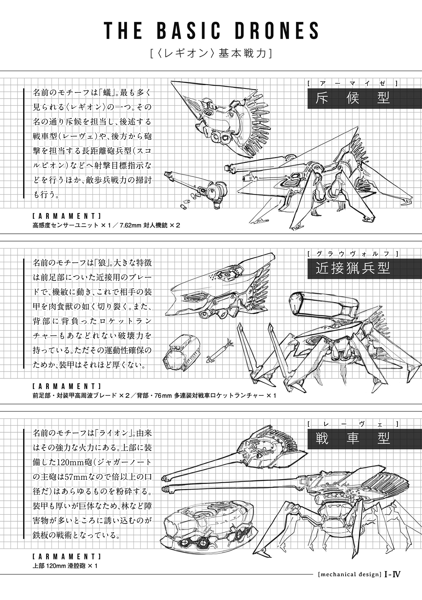
上空に展開する阻電攪乱型の大群が陽光を遮って曇りの暗さが辺りを包み、〈レギオン〉の血であり神経網である流体マイクロマシンの代謝された残骸が銀の鱗粉か粉雪のように降る。
斥候型の偵察隊がキルゾーンの内に踏み込む。埋伏した第一小隊の前にさしかかり、気づかずに過ぎる。本隊を先導しながら各隊の前も行き過ぎ、最後尾の戦車型が今、包囲の中に──
達した。檻に入った。
『撃て』
シンの号令と同時、あらかじめ担当の箇所に照準を定めていた全機がトリガを引いた。
初撃は先頭集団に第四小隊が一斉射、ついで最後尾に第一小隊が背後から砲撃。脆弱な斥候型と装甲の薄い後部を撃ち抜かれた戦車型が頽れ、即座に戦闘態勢を取った〈レギオン〉の隊列に、残りの全機が放った砲弾が突き刺さる。
炸裂。轟音。引きちぎられた金属片とマイクロマシンの銀色の血が黒炎を背景に飛散する。
同時に二一機の〈ジャガーノート〉が射撃位置を離脱。
あるものは遮蔽から出て更に砲撃、あるものは遮蔽物を辿って移動、先に射撃した僚機を狙う〈レギオン〉に側面や後方から砲撃を浴びせかける。その頃には最初の〈ジャガーノート〉は掩蔽に飛び込み、別の敵機の側面に回り込むべく移動を開始している。
〈ジャガーノート〉は、どうしようもない駄作機だ。
重機関銃弾にもぶちぬかれる薄っぺらなアルミ合金装甲に、履帯式戦車よりはマシという程度の機動性能、戦車型とやりあうにはあまりに火力不足な貧弱な主砲。
華奢な四本足は歩行制御プログラム開発の時間か技術が足りなかったか（多脚の歩行制御は脚の数に比例して複雑性が増す）、ともあれそのせいで機体重量の割に接地圧が高く、東部戦線に多い湿地帯のような軟弱地盤では足を取られる。シネマやアニメの戦闘ロボットのように、跳んだり跳ねたり目の回るような高速で駆けまわったり、あまつさえ飛んだりなど夢のまた夢。思わず笑い出したくなるほどの走る棺桶具合なのである。
そういう脆弱な〈ジャガーノート〉は、小火器装備の斥候型はともかく近接猟兵型や戦車型とは正面からやり合っても勝てない。複数機で連携し、低い機動力を地形や遮蔽でカバーしながら、装甲の薄い側面や後方に回り込んで狙うのが常道だ。この地で散ったエイティシックスの先達が夥しい犠牲を払いながら編み出し、受け継ぎ、磨き上げてまた後進たちに引き継いで、そうやって七年に渡り伝えられてきた戦術だ。
それを元に数年を戦い抜いたスピアヘッド戦隊のプロセッサー達は、だから誰よりもこの戦い方に慣れている。基本的には連携を組む小隊内で指示も連絡も不要、互いが互いの意志を齟齬一つなく汲みとった協調を以て作戦行動を行える。
それに。
ふ、と知らず、獰猛な笑みが口の端を掠めた。
こっちには、〝死神〟の加護がある。
崩落した建築物と瓦礫の陰の薄闇を、首のない骸骨のパーソナルマークを負う〈ジャガーノート〉──〈アンダーテイカー〉が駆ける。
敵機の射線には寸毫も身を晒さず、けれど己の照準からは決して逃がすことはない。斥候型を、近接猟兵型を、時には戦車型さえ巧みに死角に回り込んで仕留め、僚機の砲撃域に釣り出して殲滅させる。
敵部隊の連携を搔き乱すため、あえて単機で突出し敵陣深く斬り込むのが、先頭で敵と渡り合う前衛の中でも近距離戦闘に特化したシンの役目であり、同時に最も得意とする戦い方だ。
一時も消えることのない接近警報の赤色光が映り込む血赤の双眸は、敵性ユニットのブリップで埋め尽くされたレーダースクリーンなど最早見てもいない。異名そのまま、戦死者の順を定める死神の冷徹で屠るべき敵機を選定する冷えた眼差しが、ふと、微かな慨嘆に揺らぐ。
また、自分からは出てこない、か。
無意味な思考は束の間、自らが引いたトリガのもたらす爆炎に吞まれて消える。次の敵機に視線と意識は移り、射撃の合間に市中に散らばった僚機に最も効率の良い殺戮の指示を飛ばす。
「──第三小隊。交戦中の小隊を誘引して南西に後退。第五小隊は現在地で待機。射撃ゾーンに敵小隊が進入したら斉射で仕留めろ」
『ダイヤ了解。......アンジュ、今のうちにリロードしとけよ』
『セオも同じく。こっちを撃たないでよブラックドッグ！』
「ハルト。方位二七〇、距離四〇〇。ビルを超えてくるぞ、顔を出したところを叩け」
『りょーかい。キノ、手伝って』
遠く、連続する砲声が廃墟の瓦礫を震わせる。
ビルの壁面を垂直に駆け登る驚異的な機動で上方からの奇襲をかけるはずだった近接猟兵型の群が、飛び降りた瞬間に機関砲の掃射を喰らって空中でずたずたに引き裂かれる。
次の標的を定めようと視線を巡らせかけ、それの動きに気づいてシンはちらと視線を向ける。
「全機攻撃中止。散開」
突然の指示に、しかし全機が即応した。どうした、などという間抜けなことは誰も問わない。前線が苦戦していれば〈レギオン〉が投入してくる、敵兵種はあと一つ──。
ぃぃぃいいいいん、と、接近する甲高い轟音。
戦場のそこかしこに遥か彼方から飛来した砲弾が突き刺さり、炸裂。灼けた黒土が泡が膨らむように吹き上がる。
後方に展開された一五五ミリ自走砲型〈レギオン〉、長距離砲兵型の砲支援だ。
支援コンピュータが弾道を逆算、発射位置を東北東三〇キロ付近と特定するが、そんな遠距離を攻撃できる兵装がこちらにない以上無駄な情報。長距離砲撃には不可欠な、弾着確認の前進観測機の潜伏位置を、地形と敵機の展開状況から推定し──。
『ハンドラー・ワンより戦隊各位。前進観測機の推定位置を送信します。候補は三か所、確認と制圧を』
ちらっとシンは目を上げた。デジタルマップ上に三つの光点が灯るのを一瞥し、把握している敵機の位置と照らし合わせて、後方のビル群に潜む狙撃手のクレナに標的を指示する。
「クレナ。方位〇三〇、距離一二〇〇のビル屋上に四機」
『了解。任せて』
「ハンドラー・ワン。指向レーザーによるデータ伝送は、こちらの位置が特定される恐れがあります。作戦中の指示は口頭のみにしてください」
『っ......すみません』
「次の観測機が出てきます。引き続き位置の特定をお願いします」
ぱっ、と嬉しそうな笑みの気配が知覚同調の向こうで湧いた。
『はい！』
声を弾ませるハンドラーの少女にかすかに眉を顰め、──点灯した接近警報と響き渡る叫喚に、シンは意識を戦場に戻す。
自軍の損害もお構いなしに──真実無人機同士だからできる戦術だ──撃ち込まれる砲弾の嵐が耳を聾する戦場を、ライデンは次の獲物を探して駆け回る。
飛び交う火線は、まだ敵機のそれの方が遥かに多い。ばら撒かれる重機関銃弾の一発が致命傷、戦車砲など喰らえばひとたまりもなく木端微塵だ。
遮蔽物を伝って移動した廃墟の陰に、先客がいた。〈アンダーテイカー〉。弾薬を撃ちきったらしく、〈スカベンジャー〉──やはりというか、ファイドだった──から補充を受けている。
「ちっと多いな」
『カモ撃ちなんだろ。楽しめばいい』
セオとのやりとりを聞いていたらしい。皮肉を言ってきやがる。
『......確かに思ったより戦車型が多い。補給ついでに合流したかな』
小雨が降ってきたから傘をさそうか、程度の声音だった。というか、シンが動揺したところなどライデンは見たこともない。多分死ぬ時も、死んでさえもこいつはこのままなのだろう。
『遮蔽が限られる分厄介だ。そのうちこちらの移動パターンも解析される。その前に削っておいた方がいいだろうな』
ファイドのクレーンアームが弾倉コンテナ全てを交換し、補充完了。〈アンダーテイカー〉が立ち上がる。
『戦車型は受け持つ。その他の相手と、援護の指揮は任せた』
「了解だ、アンダーテイカー。......またアルドレヒトのジジイにどやされるな」
微かに笑う気配。〈アンダーテイカー〉が廃墟から飛び出す。
〈ジャガーノート〉の最大速度で遮蔽間を巧みに伝い、戦車型の四機小隊に接近。無謀などという言葉では到底足りない、傍目には自殺行為そのものの特攻に、ハンドラーの少女が悲鳴のような声をあげる。
『アンダーテイカー！ 一体何を......!?』
戦車型の一輌が砲塔の向きを変え、砲撃。寸前で〈アンダーテイカー〉は機体を軽く横に振って回避に成功する。更に砲撃。また外す。
砲撃。砲撃。砲撃。砲撃──人間も兵器も等しく灰燼に変える一二〇ミリ砲弾の連撃を、〈アンダーテイカー〉はことごとく回避して前進する。砲身の向きを見て間に合う機動ではない。経験で培った勘だけが頼りの、首のない白骨が這いずる様によく似た悪夢のようなマニューバ。
業を煮やしたように、戦車型が機体ごと向きなおる。爆発じみた速度で跳びだし、それ自体凶器のような八脚で地面を蹴りつけて猛進、接近する敵機を真っ向から迎え撃つ。
鋼の総身の仮借ない重量を驀進させながら足音は皆無、静止状態から一瞬で最高速度に達し、瞬く間に〈アンダーテイカー〉の眼前に迫る。強力なショックアブソーバーと高性能のリニアアクチュエータがもたらす、理不尽なまでの運動性能。
八脚を溜め、跳躍した。踏みつぶす気だ。今──
瞬間、〈アンダーテイカー〉が跳んだ。
戦車型の突撃を横っ跳びに回避し、空中で向きを変えると着地と同時に再跳躍。戦車型に取り付くや脚部関節を足場に瞬く間に砲塔上面に駆け登り、前脚を広げた極端な前傾姿勢でガンマウントアームの主砲を鋼色の装甲に突き付ける。
見えている中では最も装甲の薄い、砲塔後部上面に。
撃発。
信管の最低起爆距離設定を消去した高速徹甲榴弾が装甲を貫通、秒速八〇〇〇メートルにも及ぶ高性能爆薬の破壊的な爆轟を機体内部に撒き散らす。
黒煙を噴いて頽れる戦車型から飛び降りた時には、〈アンダーテイカー〉は二機目の戦車型に狙いを定めている。弾幕を小刻みに左右に跳躍することでかいくぐって近接し、脚部に斬撃──格闘アームの選択兵装だがシン以外に装備している奴を見たことのない、強力だが非常に間合の狭い高周波ブレードの一閃。
傾いた二機目の上面に砲撃を喰らわせ、沈黙したそいつを盾に三機目の砲撃を防ぐ。爆炎が戦車型の貧弱なセンサを塗り潰した隙に手近の高架にワイヤーアンカーを撃ちこんで高速上昇、敵機を見失って砲口を彷徨わせる三機目の砲塔に飛び降りて零距離射撃を叩きこむ。
『っ......』
ハンドラーが絶句しているのが、同調の向こうに感じ取れた。
このアルミの棺桶の開発者が見れば腰を抜かすか泡吹いて失神するだろう、神業そのものの機動にライデンは目を細める。
〈ジャガーノート〉は本来、こんな戦闘を行う想定で作られていない。火力も装甲も機動力も足りないまま突貫作業で作られた、撃てればいいだけの自殺兵器だ。たった一機で戦車型を、それも続けざまに何機も撃破していくなどありえない。
無論、代償も大きい。
ただでさえ脆弱な〈ジャガーノート〉の足回りは限界以上の負荷を強いられて戦闘が終わるころにはがたがたに壊れてしまうし、主力である戦車型を護ろうとする他の〈レギオン〉の集中攻撃の的にもなる。その分ライデン達が戦車型以外を撃破するのも楽になるから結果的に早く戦闘も終わるとはいえ、正直、何だってシンがまだ戦死してないのかは不思議で仕方ない。死なないどころかもう五年も、こんなやり方で生き残っている化物なわけなのだが。
もったいねぇ、といつも思う。
三年、共に戦った。三年間ライデンはシンの副長で、つまりは三年ずっと二番手だった。同じ〝号持ち〟のライデンにも同じ真似はできない。比肩できたことなど一度だってない──あの首のない死神こそは、掛け値なしの戦闘の天才だ。ただ生き残る悪運に恵まれただけではない、しかるべき時間と装備を費やせばあるいはこの戦場から全ての〈レギオン〉を駆逐する要となったかもしれない、そういう、不世出の英雄の器量だ。
ただ、シンは生まれるべき戦の時代をとことん間違えた。遥か昔の騎士の時代なら後世に語り継がれる武勲詩の主人公ともなったろうし、最後に人間同士が殺し合った大戦の頃なら、英雄として輝かしい名を永遠に戦史に刻んだろう。
この馬鹿げた戦場では、そんなものは望むべくもない。
人の尊厳も権利もなく、死んで入る墓もなければ刻む名前も名誉もない、使い捨ての兵器として死ぬまで使い潰された果てに、戦場の片隅で人知れず散るのが彼らのさだめ。この戦場に果てた幾百万の同胞と同様に、朽ちて還る己の白骨の他に遺すものなど何もなく。
阻電攪乱型の霧が晴れて陽光が戻る。生き残った〈レギオン〉が、長距離砲兵型の支援を受けつつ撤退を始めた。冷徹な自動兵器達は仲間がどれだけ壊されようと復讐には逸らない。損害数が一定に達し、目標を達し得ないと判断すればあっさりと矛を収めて退くだけだ。
傾いた太陽の光線が、戦車型の残骸の中に立つ〈アンダーテイカー〉の輪郭に散っている。
振りかざした古刀の切先に閃く月光のような、それはうつくしさだった。
夜襲や夜間出撃任務が無ければ、夕食の後片づけから就寝までの数時間は自由時間だ。
後片付けの終わった厨房で全員分のコーヒーを淹れてアンジュが戻ると、基地の全員が集まったままの格納庫前の広場は射的大会で大いに盛り上がっていた。
「ほい、クマ王様に一発ウサギ騎士二発。ハルト君の合計点数は七点であります！」
「あちゃー、二発外したか。やっぱりハンドガンっていまいち苦手なんだよなー」
「おーっと、ファイドから突然の挑戦です！ 横に置く！ 対するキノ選手の実力や如何に！」
「マジかよ......だー！ 全っ然駄目じゃねえか！ 次！ 次の奴早く！」
「私か。えーと、......カイエ・タニヤ、推して参る！」
「ハイ二てーん」
「うおっ、五発全部命中。流石だなライデン」
「へっ、わけねえよこんなん」
「きゃー生意気言いやがって。クレナ行け！ 本物の神業ってやつを見せてやれ！」
「おっけー見ててよ！ ファイド、それ並べないで投げて！」
「「「うおぉぉおすげぇえええええ！」」」
「......って、なんか今日はファイドがサドいぞ。タワー型とかまた難易度上げてきた」
「シンー、お前の番」
「ん」
「......うわぁぁああ一発クリアかよ相変わらずかっわいくねえ......」
今日の調理で出た大量の空缶を的にして、それぞれ携行の拳銃を用いて。点数代わりの可愛い動物のイラストをマジックでセオがさらさら書きつけ、各人の射撃の合間に撃ち落とされた缶を拾ってはファイドがタワーやらピラミッドやらに並べ直している。
騒々しいその様子に、アンジュはくすりと微笑む。
豪勢な夕食だった。捌いて豪快に炙り焼いた猪肉に森で馬鹿みたいに採れるスグリのソース、裏の畑の野菜サラダと缶詰のミルクとキノコのクリームスープ。食堂で食べる料理じゃないよなとテーブルを外に持ち出して、当番だけでは手が足りずに結局基地要員総がかりで調理して。
楽しかった。それは皆も一緒だったと、こうして目の当たりにしてそれがとても嬉しい。
自分が撃ち倒した空缶ががらがら崩れるのは見もせず、喧騒から少し離れて一人書物のページを繰っているシンの前に、コーヒーのマグカップを置いた。
「お疲れさま」
ちらりと視線が返るのが返事の代わりだ。気づいて寄ってきたダイヤにコーヒー満載のトレイを預けて、アンジュは向かいの椅子を引いて座る。
黙々と読み進めている分厚い書物に、目を留めて問うた。隊舎で飼っている白靴下の黒い仔猫が、ページにじゃれようと奮闘しているのが妙に微笑ましい。
「面白い？」
「別に」
言ってから、自分でもあんまりな答えだと思ったのだろう。少し考える間をおいて続けた。
「他のことを考えてる間は、意識しないでいられるから」
「......そう、」
淡く苦笑して、もう一度アンジュは言った。それだけは彼女達でも、代わってやることも分かち合うこともできないから。
「お疲れさま。いつも」
じん、とレイドデバイスが熱を帯びた。
『戦隊各位。今、よろしいですか？』
ハンドラーの少女の声が響く。着任から一週間、初日から欠かさず繰り返されている夕食後のひとときの交流の時間だ。
「問題ありません、ハンドラー・ワン。今日はお疲れさまでした」
代表してシンが応じる。器用なことに目線は本に落としたまま、ページを繰ろうとするのをぺちっと仔猫に邪魔されて本を持ち上げていなす。
盛り上がっていた隊員達が、そそくさと拳銃から初弾を抜いてホルスターに戻した。反乱防止のため、エイティシックスが小火器を持つのは禁じられているのだ。別に検査もされないので、どの戦隊も放棄された近在の軍施設から持ち出して使っているが。
『ええ、貴方達もお疲れさまです、アンダーテイカー。......何か、ゲームでもしていましたか？ 邪魔をしてしまったならすみません、続けてください』
「ただの時間潰しです。お気になさる必要はありません」
話したくなければ、同調は切ってもらって構わない。初日にそう言われているのをいいことに早速同調を切った仲間達が図太く投げナイフ大会を始めるのを見ながらシンは言う。ライデンやセオ、カイエといった何人かは丁度来たコーヒーを楽しむ気になったのか、それぞれマグカップを手に手近の椅子やテーブルに腰を下ろした。
『そうですか？ 何だかとても、楽しそうですよ。......ところで』
ふと、ハンドラーは居ずまいを正したようだった。まっすぐに向けられる、生真面目そうな眼差しの気配。
『アンダーテイカー。今日は少し、お小言があります』
上官の叱責というより優等生の学級委員長の注意といった口調の言葉に、シンは気にせずコーヒーに口をつけた。壁の向こうのハンドラーの言うことなど、一々真に受けても仕方ない。
「なんでしょうか」
『哨戒と戦闘の報告書。伝送ミスじゃなかったんですね。......読もうとしたら全部同じでした』
シンはわずかに目を上げた。
「まさか、全て目を通したのですか？」
『あなたがスピアヘッド戦隊に配属されてからのものは』
「......お前、まだあれやってたのか」
呆れを隠しもせずにライデンが言うのはとりあえず無視する。
「前線の様子など、そちらが知ってどうするのですか。無駄なことをしますね」
『〈レギオン〉の戦術や編成傾向の分析は、わたしたちハンドラーの職務の一つです』
つんと言ってから、ハンドラーは少し語調を和らげた。
『読まれないから送らなかったのだということはわかりますし、それはこちらが悪いのですから怒りませんが、これからはきちんと作成してください。わたしは読みますから』
面倒な。
思ってシンは口を開く。
「読み書きは苦手なんです」
「お前さんほんといい根性してんのな」
ダイヤがぼそっと呟いたのはやっぱり無視して、分厚い哲学書のページをめくる。
もちろんハンドラーはこの場にいないからそんなことは分からない。幼少期に強制収容所に入れられた今のプロセッサーは、まともに初等教育も受けていないことに思い至ったのか、気まずげに口ごもる。
『あ......ごめんなさい。でも、それなら尚更、訓練だと思って書いてみてください。いつか必ず、役に立ちますから』
「どうだか」
『......』
ハンドラーはあからさまにしょげかえった。別に字くらい読めるけどね、とばかりに鼻を鳴らしたセオがナイフを的に投げて、可愛らしい子ブタのお姫様が台の下に転げ落ちる。
マグカップを両手で包んで持って、カイエが小首を傾げる。
「いや、役には立ってるだろう、アンダーテイカー。何しろ趣味は読書なわけだし......今だって、それは哲学書か？ 随分小難しそうじゃないか」
同調の向こうで、何やらものすさまじい沈黙が降りた。
ハンドラーが言う。これまでどおり柔らかな響きの、おそらく微笑さえ浮かべているだろうに、何故か異様な迫力を帯びた声で。
『アンダーテイカー？』
「........................わかりました」
『これまでのものも送ってくださいね？ 戦闘報告書も。全部』
「......ミッションレコーダーのデータファイルでいいですか」
『駄目です。書いてください』
ついシンは舌打ちし、おずおずと様子を窺っていたカイエがびくっとポニーテールを揺らした。ぱちんと両手を合わせて勢いよく頭を下げるのに、お前にじゃないと片手を振る。
まったく......、とため息をついて、ふとハンドラーはそもそもの未送信の原因を思い出したらしい。腹立ちを収めた、ひたすらに真摯な声音で続ける。
『分析ができれば、対策が取れます。精鋭の貴方がたの戦闘記録なら尚更に。全戦線の損耗率が下げられますし、それは貴方がたにもそうなのですから、どうか協力してください』
「......」
シンは応えず、ハンドラーの少女はもの哀しげに沈黙する。プロセッサーがハンドラーを信用しない原因が、全てハンドラー側にあることを自覚しているのだろう。
それから気詰まりな雰囲気を打開しようと思ったか、務めて明るい声を出した。
『そういえば、文書の日付が随分前のものでしたが、どなたかから引き継いだのですか？ それとも、もしかしてその頃から？』
「あァ。こいつのこれは最初っからだぜ、ハンドラー・ワン。俺が会う前からずっとやってる」
からかう口調に、ライデンが乗ってやった。ハンドラーがきょとんと瞬く気配。
『ヴェアヴォルフは、アンダーテイカーとは以前からのお知り合いなのですか？』
カイエが肩をすくめる。
「というか大半がそうかな。例えばダイヤとアンジュは入隊以来同じ隊だし、私はハルトと一年一緒だ。セオとクレナは一昨年からシンとライデンの隊にいて、......たしか二人も、会ってからは二年くらいになるんだったか？」
「三年だ」
ライデンが答え、ハンドラーがひととき沈黙した。
『......従軍してもう、どれくらいになるのですか......？』
「みんな四年目、というところかな。ああ、アンダーテイカーは一番長くて、今年五年目だ」
ハンドラーの声が弾む。
『では、アンダーテイカーは任期満了まであと少しですね。......退役したら、何かやりたいことはありますか？ 行きたいところや、見たいものとか』
全員の視線がシンに集まった。やはり本から目も上げないまま、身も蓋もなくシンは答える。
「さあ。考えたこともありませんね」
『そう、ですか......。......でも、今から考えておいてもいいかと思いますよ。何か思いつくかもしれませんし、きっと、楽しいと思います』
ふっとシンは微かに笑った。うとうとしていた仔猫が、ぴょこんと両耳を立てて振り仰いだ。
「そうかもしれませんね」
第三章 夜闇の冥府のほとりにおけるご立派な君の
レーナがスピアヘッド戦隊のハンドラーに着任して、半月が経った。
その日の出撃も戦死者はいなくて、レーナはくつろいだ気分ですっかり日課となったプロセッサー達との知覚同調を起動する。夕食の後の、夜の自室。
この半月、出撃回数は他隊よりずっと多いにも関わらず、スピアヘッド戦隊のプロセッサーに戦死者は出ていない。ベテラン揃いの精鋭部隊、というのは本当なのだろう。
「戦隊各位。今日もお疲れさまでした」
まず聞こえるごく微かな、遠い雑踏のような雑音。プロセッサー達が応じてくれれば、その声にもかき消されてしまう程度の、おそらくは格納庫の騒音か他の戦区の夜戦の音。
『お疲れさまです、ハンドラー・ワン』
最初に応じてくれるのはいつもアンダーテイカーだ。結局〝死神〟などという異名の片鱗さえも感じられたことのない、常に沈着で静穏な声。
他にも何人かの気配が同調先にあって、そのうちの数名が続けて挨拶をくれる。
言葉遣いはよくないけれど隊の良き兄貴分といった、戦隊副長ヴェアヴォルフ。
他愛ない話にも一番応じてくれる、律儀で実直なキルシュブリューテ。
剽軽なムードメーカーのブラックドッグ。
やわらかな声音をした、たおやかなスノウウィッチ。
少女じみた優しい声の割に言うことは結構辛辣なラフィングフォックス。
アンダーテイカーは最初の印象通り寡黙な性質のようで事務連絡以外ではあまり話さないが、どうやら毎晩同調に応じてくれる全員が彼の周りにいるらしい。同調していない隊員も同じ場所に何人かいるようで、慕われているのだろう。
「アンダーテイカー。まずは先日、要求の出ていた補充物資の納入日についてなのですが......」
ハンドラーとシンの事務的なやりとりを聞きながら、ライデンは拾ってきたクロスワードパズル誌に暇な夜の時間を潰す。
ぼろいバラックの隊舎の、シンの部屋。周りでは同じくこの部屋をたまり場にしている数人がそれぞれ好き勝手に過ごしている。セオがスケッチに没頭し、ハルトとカイエとクレナはカードゲームに興じていて、無闇に凝った模様のレースを編むアンジュと壊れたラジオの修理に勤しむダイヤ。食堂と別の部屋でもそこをたまり場にしている連中がいて、馬鹿騒ぎの声が遠くする。
戦隊長であるシンは報告書作成を含め幾らかの書類仕事があって、執務室を兼ねて隊舎の中では一番広い個室を使っている。そこにライデンが隊のあれこれの相談にいき、二人にちょっかいをかけに仲間達が顔をのぞかせて、そのうちたまり場の一つにされてしまった形だ。
部屋の主であるシン本人は読書のスペースが確保できれば他のことはどうでもいいらしく、猫を構っていようがチェスの果てにぎゃーぎゃー口喧嘩が勃発しようが目の前で腹踊りをしていようが（以前本当にクジョーとダイヤがやってみた）全く無頓着だ。今もハンドラーとの会話は片手間に、定位置である部屋の隅の古びたパイプベッドで枕をクッション代わりに寄りかかって、どこぞの図書館から持ち出した古い小説を黙々と読み進めている。胸元にはこれも毎晩の定位置の、ちんまり寝そべる白靴下の黒い仔猫。
まったく平和なもんだ、と、マグカップのコーヒーに口をつけた。代々レシピが受け継がれてきた、スピアヘッド戦隊伝統の代用コーヒー。材料は隊舎裏で育てた蒲公英だが、プラント合成の謎の風味の黒い粉で淹れた謎の液体などより遥かに旨い。
......ババアに飲ませてやったら、何て言うかな。
厳格で堅物で贅沢なんか一切しなくて、ただ唯一コーヒーには目がなかったあの老婆。
八五区内の生産プラントでも、嗜好品類の再現性は収容所や基地の合成食料と大差ない。
まるで泥水ねと毎朝嘆いていたあの老婆は今もまだ、不味い合成品を嘆いているのだろうか。
俺達のことをまだ、哀しんでくれているのだろうか。
鈴を振るようなハンドラーの声をまるで遮るように、仔猫が甲高い声でみゃー、と鳴く。
会話の合間にみゃー、と高い声が聞こえて、レーナは瞬く。
「猫......ですか？」
『あ、隊舎で飼ってんすよ』
応じたのはブラックドッグだ。
『ちなみに拾ったのは俺っす。ここに配属されたばっかの頃に、戦車砲喰らって吹っ飛んだ家の前でみーみー鳴いてて。親とか兄弟はぺっちゃんこだったんすけどこいつだけ無事で』
『で、何故かアンダーテイカーに一番懐いちゃったんだよね』
『全然じゃらしてもあげないし媚び媚びすりすりされてもおざなりに撫でてるだけなのにねえ』
『懐いてるっつうか、いいベッドだと思ってんじゃねえのか。今だってそうだろありゃ』
『ああ。読書中は動かないからな。ではブラックドッグには絶対馴れないな、うるさいから』
『ひでえ！ てか理不尽だ！ 改善を要求するぞー！ ブーブー！』
じゃれあうプロセッサー達に、レーナはくすりと笑う。こうしていると、本当にごく普通の同年代の少年少女達だ。この場にいないのが不思議なくらいに。
「名前はなんというのですか？」
微笑ましく問うと、同調している全員が答えた。ほとんど同時に。
『クロ』
『シロ』
『ニケ』
『チビ』
『キティ』
『レマルク』
『......だからその今読んでるのの著者名で呼ぶのいくらなんでも適当すぎるからやめてよっていうか、何読んでるんだよほんっと趣味悪いなあ......』
最後のラフィングフォックスだけ名前じゃなかった。
ともあれレーナは混乱する。
「ええと......。たくさんいるんですか......？」
『話聞いてたの。一匹だよ』
いよいよ混乱する。見かねたブラックドッグが助け船を出してくれた。
『足の先っちょだけ白い黒猫なんすよ。だから呼び名も黒で白で二毛。そんで特に決まった名前とか付けてなくて、みんなそん時の気分で好きなよーにてきとーに呼ぶもんだから、最近そっち見て声かけりゃとりあえず寄ってくるようになってて』
なるほど。
「......でも、どうしてそんなことを？」
『......あー。......そりゃあ、』
少し言い淀んで、答えようとして。
不意にブラックドッグが同調を切った。
突然クレナが椅子を蹴飛ばすように立ち上がって出て行って、近くにいたからダイヤが追った。椅子が倒れるけたたましい音がした。
『......？ あの、どうかしましたか？』
ダイヤの同調は切れていて、クレナは元々同調していない。とりあえずシンは適当に繕う。
「ああ。ネズミが出ただけです」
『ねずみっ!?』
「......適当すぎでしょ」
ぼそっと呟いたセオの声はハンドラーには届かなかったらしい。
ネズミが出るのですか......と、よっぽど苦手なのかこわごわと聞いてくる声に生返事を返しながら、シンはクレナの出て行った立てつけの悪い扉を見やって目を眇める。
廊下の端でダイヤが追いついて、クレナは己の内圧を下げるように短く強く息を吐く。
なんでみんな、あんなのと。
声を聞くだけで吐き気がする。むかむかして、居ても立ってもいられない。これまではこの夜のひとときはみんなと一緒に過ごせる折角の、居心地のいい大切な時間だったのに。
「クレナ、」
「なんでみんな、あんな女と」
「今だけだって。そのうちお姫さんの方から、繫いでなんかこなくなるさ」
常の剽軽さが噓のような醒めた目で、ダイヤは肩をすくめる。これまでと同じだ。ハンドラーは誰も彼も、一度だってあの〝死神〟に耐えられない。
シンの異名の本当の由来を、あの少女はまだ知らない。たまたまそういう敵が傍にいなかっただけで、そんな幸運は長くは続かない。
普通の白い羊に紛れる、厄介な異端の黒い羊。
そのつもりで名付けたはずのそれは、今では〈白羊〉より遥かに多い。
更に厄介な〈羊飼い〉さえも、また。
きりっとクレナは歯を軋らせる。わかってる。わかっているけれど。
「シン、あんなのとっとと壊しちゃえばいいのに」
ささくれ立った気分のまま、刺々しい声が出た。
「白ブタなんかに気つかってやることないのに。同調率だって最低に設定してやって」
「それが普通だからだろ。シンだって別に、好きで壊してるわけじゃねえだろし」
喧騒に支配される戦場で正しく意志疎通を図るために、知覚同調の同調率はごく至近距離、発言者の声を拾う程度の低い数値に設定するのが一般的だ。
静かにダイヤが問う。非難ではなく、ただ気遣わしげに。
「ていうかね。おまえそれシンに言える？ 気に喰わないからおまえのそれで壊してくれって、あいつに言える？」
「......」
クレナは唇を嚙んだ。ダイヤは正しい。失言だった。
シンは、隊のみんなは仲間で、家族だ。家族にそんな酷いことは絶対に言えない。
シンにはあれが日常だ。
それなのに。
「ごめん。......でも、やっぱり許せない。あいつらはパパとママを殺した。ゴミみたいに射的の的にした」
強制収容のための護送の夜だった。どこに当たるか、どこまでやれば死ぬかを賭けの対象にして、白系種の兵士どもは笑いながら両親を嬲り殺しにした。
七つ年上だった姉は収容後すぐに戦場に連れていかれて、今では十五のクレナより一つ下だ。
あの時クズどもを追い払って、血まみれになりながら両親の手当てをして、結局救えずにクレナと姉に詫びたのも、白系種の、白銀種の軍人だったけれど。
「白ブタはみんなクズよ。......絶対に許さない」
しばらくして二人は戻ってきて、その時にはネズミの話から前線特有の景色やエピソードの話に二転三転し、最終的に昔カイエが見た流星雨の話題になっていた。
視線を向けたライデンにダイヤは肩を一つすくめてラジオの修理に戻り、クレナはシンの傍らで床に座って仔猫を取り上げて構い始めた。本当は多分、仔猫を構いたいわけではなくて。
果たして、クレナ、と座り直してスペースを開けたシンが呼んでやると、案の定仔猫を抱えて従った。自分では気のないつもりの顔をして、随分距離をあけてベッドの端にちょこんと。
『──本当に？ キルシュブリューテ。本当にそんなにたくさんの星が？』
「数えきれないくらいだったよ。二年くらい前だったかな、見ている端から幾つもの星がぼろぼろ空を墜ちていくんだ。空一面、光が流れて──それは見物だったよ」
キルシュブリューテ──カイエは、クレナが抜けた場にカードを配りながら頷く。
その流星雨ならライデンも見た。ただし敵も味方も壊滅した戦場のど真ん中、隣にいたのはシン一人で、おまけに揃って〈ジャガーノート〉がエナジー切れで、はぐれてしまっていたファイドが探し出してくれるまで身動きが取れなかったという色気もなければ笑えない状況でだ。
光を持ち込む人間がいないから、戦場の夜は暗い。深黒の闇、とはああいうのを言うのだろう。地上は一面闇に染まる中、天球を青白い焰の色の光があとからあとから流れて埋め尽くし、押しつぶされそうなほど荘厳なくせに一切の音もないその光景は、世界が砕けた破片が燃え尽きながら零れるような、この世の終わりの夜のような、そんな凄絶な美しさだった。
最後に見るのがこれなら悪くねぇかもな、とか、しかもシン相手に口走ったのは一生の汚点だ。鼻で笑いやがってあの馬鹿。
「あんなものはもう、二度と見られないだろうな......。流星群自体は毎年見られるものらしいけど、流星雨となると何十年かおきで、しかもあそこまでの数となると百年に一度もないらしい。......ああ、これは前にいたクジョーに聞いたんだけど」
『それは、残念ですね......。私も見てみたかったのですけれど』
「壁の中では見られなかったのか？」
『一晩中、街の明かりが消えないので。こちらでは星なんていつも見えないんです』
「ああ」
カイエは微かに笑う。懐かしく。
「そういえば、そうだったかもしれないな......。こちらは夜は本当に真っ暗なんだ。人が少ないし場所も離れているし、寝る頃には灯火管制がかかる。だから、こちらは普段も星がきれいだ。満天の星とはこういうことだろうな。それは間違いなく、ここでの暮らしの良いところだ」
『......』
言い切ったカイエに、ハンドラーは沈黙した。予想だにしない答えだったのだろう。この世の地獄にいるはずのプロセッサーの口から、良かった、とは。
神妙な声音が問うてきた。
意を決して聞いてみた、という声だった。罵倒も糾弾も、受け止める責任が自分にはあるというような。
『キルシュブリューテ。......わたし達を、恨んでいますか？』
カイエはしばし言い淀んだ。
「......それは、もちろん差別されるのは辛いし、悔しい。収容所での暮らしは辛かったし、戦うのはいつまでも怖いよ。だからそれを私達に押しつけて、エイティシックスは人間じゃなくて家畜だから構わないとか言うような奴らのことは、やっぱり好きにはなれないな」
何か言いかけた──おそらく謝罪か自責を──ハンドラーを遮るようにしてカイエは続ける。言わせるつもりは流石になかった。
「けど、白系種の全員が全員、悪人じゃないというのもわかっているんだ。......エイティシックスの全員が、必ずしも善人ばかりじゃなかったのと同じように」
『え......』
カイエはふと、ほろ苦く口の端を歪めた。
「私は極東黒種だから。まあ、収容所でも以前の隊でも色々あったよ」
自分だけではない。アンジュもそうだし、......何も語らないけれどおそらくシンもだ。迫害者の血を引く白系種との混血や、強制収容の口実となった帝国系の、それも貴種の血統はエイティシックス達の憤懣の捌け口となりやすかったし、共和国では極端な少数派である東方・南方系の民族も特に理由もなく同様だった。
エイティシックスとて無垢な被害者ばかりというわけではない。
世界はいつも、より数が少なくて、弱い者に冷たい。
「ともかく、同じように白系種にも良い人がいるのは、まあ私は見たことがないけど、仲間の何人かは知っているからわかっているんだ。だから、白系種というだけで恨んだりしない」
『そうだったのですか......では、その方々にわたしは感謝しないといけませんね』
カイエは少し、身を乗り出した。同調下でも、向き合って話しているような仕草はつい出る。
「私からも聞きたいな。どうしてそんなに、私達のことを気にするんだ？」
ふと、焰のイメージが脳裏に忍び込んでシンは目を上げた。
火事にも火あぶりにも覚えはないから、これはハンドラーの記憶か。
『昔、貴方がたと同じプロセッサーの方に、助けていただいたことがありまして......』
レーナは思い出す。
『おれ達はこの国で生まれてこの国で育った、共和国市民だ』
『今は誰もそれを認めようとしないけれど、だからこそ、そのことをおれ達は証明しないといけない。国を護って戦うのは市民の義務で誇りだ。だからおれ達は戦うんだ』
助けてくれた、あの人の。その言葉に応えたいと思って、わたしは。
『自分は共和国の市民だと、証明するために戦うのだと仰っていました。その言葉に、わたし達は応えねばならないと考えます。戦えと求めておきながら見届けようとせず、あなた達を知ろうともしないのは、それに反する振舞です。......赦されることではありません』
それは酷く綺麗な言葉で、ライデンはわずかに目を眇める。
カイエは小首を傾げて聞いていて、聞き終えてからも考えながら、口を開いた。
「ハンドラー・ワン。貴女は処女だな」
──ぶっ!?
ハンドラーがお茶か何かを噴くのが聞こえた。同調している全員が吹きだした。
同調していないクレナとハルトがきょとんとするのにアンジュが説明して、二人も笑い出す。
ハンドラーの少女はけほこほ咳き込んでいる。
カイエはそれらの反応に目をしばたたかせてから青くなる。
「......あっ！ すまない間違えた！ 処女みたいだな、だ！」
普通そこは間違わない。あとどっちでも大差ない。
ダイヤとハルトは笑い死にしそうな勢いで机や壁をばんばん叩き（うるせえ！ と向こうの方からキノの怒鳴り声がした）、珍しいことにシンまでくつくつと肩を震わせて笑っている。
カイエはひたすら慌てている。
「ええっと、つまりだな。世界はお花畑だと思っている女の子みたいというか、傷のついてない完璧な理想を抱いているというか、その、ともかく私が言いたかったのは」
ハンドラーは明らかに真っ赤になって硬直している。
「......貴女は、悪い人じゃない。だから、忠告するのだけれど」
なんとか気を落ち着けてカイエは言う。
「貴女はその役目に向いていない。まして私達になど関わってはいけない。私達はそんな殊勝な理由で戦ってなどいないし、だから貴女が私達に関わる必要もない。......誰かと代わった方がいい。後悔する前に」
悪い人じゃない、とカイエは言った。
良い人だ、とは言わなかった。
それが何故なのか、この時のレーナには、思い至ることができなかった。
†
「ハンドラー・ワンより戦隊各位。レーダーに敵影を捕捉」
その日もスピアヘッド戦隊は全機が出撃で、管制室のスクリーンを見据えてレーナは言う。
「敵主力は近接猟兵型、戦車型の混成部隊、並びに対戦車砲兵型の随伴が──」
『把握しています、ハンドラー・ワン。ポイント四七八にて迎撃準備』
「あ......了解です、アンダーテイカー」
敵の配置と対処する作戦を伝えようとして、中途で遮られてまごつきつつ追認する。
ベテラン揃いのスピアヘッド戦隊はレーナの指揮などあまり必要としなくて、このところのレーナの主な仕事は彼らが十全にその戦闘能力を発揮できるよう支援することだ。敵情を分析したり必要な補給を優先的に受けられるよう調整したり、資料庫に日参して担当戦域の詳細情報を漁ったり。
最近は戦区後方の迎撃砲の使用許可を求めて陳情を繰り返す日々だ。射程の長い迎撃砲を使えれば、長距離砲兵型の砲支援を多少なりとも抑えられる。随分戦闘が楽になるはずなのだが、使い捨ての迎撃砲は一度撃つと再設置の必要がある。エイティシックスなどのためにそんな手間をかけるのは嫌だと輸送部がごねているせいで許可は出ないままだ。それってもう錆びてんじゃないの、とは、ついそのことを愚痴ってしまった時のラフィングフォックスの弁。
『アンダーテイカー。ガンスリンガー、配置についたよ』
『ラフィングフォックスよりアンダーテイカー。第三小隊も同じく』
着々と各小隊の配置が完了していく。〈レギオン〉の進路が見えているかのような、完璧なまでの伏撃の布陣。
スピアヘッド戦隊のプロセッサー達は、〈レギオン〉の襲撃や進行方向をほとんど予知しているかのように動く。何か、彼らしか知らない予兆や判断基準があるのかもしれない。
これが終わったら聞いてみよう、とレーナは思う。もし他の戦隊でも応用できれば、急襲で死ぬプロセッサーが減らせるかもしれない。貴重な情報が個々の現場での利用で完結して、集約されて蓄積も周知もされないのもこの歪な戦闘システムの大きな欠点だ。
それはともかく、昨晩ようやく見つけたばかりの第一戦区の戦域地図を見ながら言う。
「アンダーテイカー。ガンスリンガーの配置を、ガンスリンガーから三時方向距離五〇〇の位置に移してください。そこからだと隠れますが、高台があります。稜線射撃になりますし、射界がより広くとれるはずです」
一瞬間が空いて、アンダーテイカーが応じる。
『確認します。......ガンスリンガー、その位置からは見えるか？』
『待って、十秒ちょうだい。......うん、確かにある。移動するよ』
「主攻である第一小隊とはほぼ逆方向の位置取りになります。アンダーテイカーの基本戦術である攪乱からの各個撃破に際し、戦闘序盤の本隊位置の欺瞞にも繫がるかと」
ヴェアヴォルフが嗤う。
『要するに囮ってわけか。お姫様みたいな声して、大したもんだ』
「......戦車型、対戦車砲兵型は仰角がとれません。高台にいるガンスリンガーを直接砲撃はできませんし、砲撃位置変更時にも周辺の地形が遮蔽になりますから......」
『勘違いすんな。......悪くねえ案だ、そうだろ、ガンスリンガー』
『みんなの援けになるなら何だってするよ』
はきと答えた少女の声が、うって変わってそっけなくレーナに向けられる。
『新しい地図でも見つけたの？ 便利だね』
レーナは苦笑した。このガンスリンガーという少女からは好かれていないようで、日常の同調はしてくれないし、たまに会話をするとあからさまにつっけんどんな態度を取られる。
レーナの手元にある地図はかつて国軍が年月と労力をかけて作成した詳細極まるものだが、戦時下の現在、肝心の防衛拠点である前線基地には置かれていないのだという。代わりに使っているのは以前のスピアヘッド戦隊員が廃墟の何処かから引っぺがしてきた地図で、それに代々書き足しをして運用しているのだとか。そのため迎撃しやすい地点や選ばれやすい進撃ルートはある程度詳しいが、それ以外の地勢については現場の彼らも知らないことが多い。
「後で転送しましょうか？」
戦闘中に送るにはデータ容量が大きすぎるが、終わって落ち着いた時間ならいいだろう。
揶揄の口調でヴェアヴォルフが言う。
『いいのかよ。敵性市民に軍事機密の地図なんざ渡して』
「かまいません。活用しないで、何のための情報ですか」
言い切ると、ヴェアヴォルフは虚を突かれたように黙った。へえ、と軽い感嘆を帯びた吐息。
そもそもレーナが段ボール箱の山から発掘するまで所在も不明という未管理の資料なのだ。コピーはもちろん紛失や盗難にあっても把握できないこんな有様で、機密も何もない。
九年前の戦争序盤で正規軍将兵は後方要員に至るまで戦闘に駆り出されて壊滅してしまったため、資料も業務も正しく引き継ぎされておらず、そのまま所在不明となっている資料は多い。
それを問題と捉えて然るべき、まっとうな職業軍人の誇りも、また。
「それから、あなた達はエイティシックスなどではありません。少なくともわたしはそんな風に呼んだ覚えは、」
『へいへい。......っと。来るぞ』
一気に緊迫が同調の向こうに満ちる。幾人かがどこか愉しそうですらあるのは古参兵の戦慣れか、戦闘に際し大量に放出されているだろうアドレナリンの影響か。
腹底に轟く砲声が、同調を通じて耳に響く。
戦闘はめまぐるしく、〈レギオン〉の赤いブリップを着々と削りながら推移する。
スピアヘッド戦隊は戦域内の原生林を経由して第一小隊を迂回させ、火力は高いが機動力・防御力ともに低い対戦車砲兵型を先に殲滅。ついで近接猟兵型と戦車型の混成部隊を原生林内に引きずり込み、分断して各個撃破を重ねていく。障害物の多い森の中では小回りの利かない戦車型は機動力を活かせず、射界も大きく制限される。空間がないから〈レギオン〉は小規模の部隊で分散せざるをえず、圧倒的なまでの数の利も活かせない。
傍目にはまるで手慣れた作業であるかのような、けれど実際にはそんなはずもない戦闘。今も撃たれた砲弾をきわどいタイミングで避けて〈ジャガーノート〉の一機──〈キルシュブリューテ〉が木々の向こうに飛び込み、そのまま戦車型の左側面を狙うべく疾走する。
レーナはぞっとなる。戦車型の位置取りがおかしい。他の敵機の位置からして、そいつはそこにいるはずがない。本来常に念頭に置いて然るべき、互いの援護がそこではできない。
慌てて確認した、進行方向。戦域地図上は明記された、けれどおそらくキルシュブリューテは知らない、見た目には何かで埋もれてしまっているそれ──。
「そっちは駄目です、キルシュブリューテ！」
『え？』
制止は、遅きに失し。
〈キルシュブリューテ〉を示すブリップが、レーダースクリーン上で不自然に止まった。
「っ......。なんだ、湿原......!?」
突然がくりとつんのめっって止まった自機の中、くらつく頭を振ってカイエは呻く。スクリーンの映像では自機の両前脚が半ばまで地面に埋まってしまっていて、それは暗い原生林の中、小さな草地に見えていた湿原だ。接地圧の高い〈ジャガーノート〉が苦手とする軟弱地盤。
後ずされば抜ける。判断し、両の操縦桿を握り直して──
『キルシュブリューテ、そこから離れろ！』
シンの警告に顔を上げた。視線に追従して〈キルシュブリューテ〉の光学センサが上を向き。
目の前に、戦車型がいた。
「......あ」
戦車砲弾の最低起爆距離内。だから戦車型は最前脚を振りかぶった。冷徹に。挟まれた者がどれほど泣き叫ぼうとも気にも留めずに磨り潰して回る歯車の無慈悲さで。
「いやだ」
泣き出す寸前の子供のような、力ない声だった。
「死にたくない」
唸りを上げて振るわれた、五〇トンもの重量を高速駆動させる巨大な脚が横殴りに〈キルシュブリューテ〉を払い飛ばす。
接合部が弱くて、一定以上の衝撃を受けるとそのまま中身ごと吹き飛んでしまう、プロセッサー達がギロチンと呼んで嫌うクラムシェル型のキャノピが、異名そのままに吹き飛んだ。
刎ね飛ばされたまるい何かが、てん、と落ち、緑陰の向こうに転げて消えた。
絶句したのは一瞬、怒号と悲憤が通信網を錯綜する。
『キルシュブリューテ!? ─────くそっ！』
『アンダーテイカー、回収に行くわ、一分ちょうだい！ あのまま放ってなんかおけない！』
応じるシンの声はひたすらに静かだった。氷に鎖される冬の夜の深い湖水。そのように。
「駄目だ、スノウウィッチ。......友釣りだ。待ち伏せがいる」
カイエを屠った戦車型がまだ近くに潜んでいる。負傷した戦友や死体を餌に、取り戻そうと近づく敵兵を撃ち殺す、元は狙撃兵の常套戦術。
息をつめたアンジュが、激情に任せ計器盤を叩く鈍い音。せめてもと〈スノウウィッチ〉が撃ち込んだ五七ミリ榴弾が〈キルシュブリューテ〉とその周辺を爆炎に包み込む。
「キルシュブリューテは戦死。キノ、第四小隊の援護に回れ。......敵残存兵数もそう多くない。キルシュブリューテの抜けた穴を突かれる前に片づける」
『了解』
応答は悲憤を帯びつつもそれに支配されない冷静さで、仲間が目の前で吹き飛ばされる光景も突然シグナルロストに変わる友軍機のブリップも、〝号持ち〟の彼らはうんざりするほど見慣れている。悲しむのは戦闘が終わってから、それができなければ同じ死体になるだけと嫌というほど心得た理性が、感情は切り捨てて必要な冷徹を保たせている。戦場という狂気に適応しきった、人間というより戦闘機械に近いモノと成り果ててしまった意識がなせるそれ。
わずかに一息、ほんの刹那だけ足を止めていた四つ足の蜘蛛の群が、がしゃがしゃと不気味な足音で再び緑陰の暗闇を這いずり始める。
冥府の手前の薄闇の中、死んだ仲間の道連れに誰彼かまわず縊り殺して引きずり込もうと蠢く、彷徨う亡者の白骨のように。
それから程なく〈レギオン〉部隊は全滅した。撤退したのではなく文字通り全滅させられた。
それは残ったプロセッサー達の意志のように感じられて、レーナは胸が痛む。
一昨日、つい一昨日の流星雨の話と誇り高い言葉が蘇って、どっと後悔が押し寄せた。
もし、もっと早くこの地図を見つけていたら。
もし、警告が間に合っていたら。
「状況終了。──戦隊各位、お疲れ様でした」
『......』
応じる声はない。みな、それぞれに悲しんでいるのだろう。
「キルシュブリューテのことは......残念でした。わたしがもっと、しっかりしていれば......」
瞬間。
そら恐ろしい沈黙が、同調の向こうに満ちた気がした。
『......残念？』
ラフィングフォックスが問い返す。爆発寸前の何かを無理矢理押さえ込んで、静かなくせにどこか軋むような声だった。
『何が残念？ あんたにしてみればエイティシックスの一匹二匹、どう死のうが家に帰ったらすっかり忘れて夕食楽しめる程度の話だろ？ しおらしい声作って、空々しいんだよ』
何を言われたのか、一瞬本当にわからなかった。
咄嗟に言葉の出ないレーナを何と思ったか、あのさあ、とため息交じりにラフィングフォックスは続ける。今度は敵意を隠しもしない、あからさまな険の混じる声音で。
『そりゃあこっちだって暇だったからさ、あんたが自分だけは差別とかしません豚扱いしません高潔で善良で正義なんですって勘違いの聖女気分楽しみたいのに、そういうどうでもいい時ならつきあってもやるよ。けどさ、空気読んでよ。こっちはたった今仲間が死んだんだ。そういう時まであんたの偽善につきあってなんかいられないって、それくらいわかれよ』
「ぎ──」
偽善？
『それとも何？ 仲間が死んでも、何とも思ってないとか思ってる？ ──ああそうかもね、あんたにとって所詮エイティシックスはエイティシックス、あんたみたいな高尚な人間さまとは違う人間以下の豚だものね！』
「ち......」
思いもよらない言葉を浴びせられて、頭の中が真っ白になった。
「違います！ わたしはそんな......！」
『違う？ 何が違うんだよ。僕達を戦場に放り出して兵器扱いして戦わせて、自分だけ壁の中でぬくぬく高みの見物決め込んで、それを平気な顔で享受してる今のあんたのその状態が、エイティシックス扱いじゃなくてじゃあ一体何だっていうんだよ!?』
「っ......」
同調を介して伝わる、プロセッサー達の感情は。
何人かは無関心で、その他の者はラフィングフォックスを含め、程度の差はあれど冷たい目を向けてきているようなそれだった。敵意や、軽蔑、あるいは諦念。そういう、冷たい。
『エイティシックスって呼んだことはない？ 呼んだことがないだけだろ！ 何が国を守るのは市民の誇りで、何がそれに応えなきゃならないだよ。僕達が望んで戦ってるとでも思ってるのか？ あんた達が、閉じ込めて！ 戦えって強制して！ この九年何百万人も死なせてるんだろ!? それを止めもしないで、ただ毎日優しく話しかけてやればそれで人間扱いしてやれてるだなんてよく思えるな！ そもそもあんた、』
そうして、ラフィングフォックスは一片の容赦もなくそれを抉りだして突きつけた。
人間として、接していると思っていた。それだけはしているつもりだった、レーナの決定的な家畜扱いのその証拠を。
『僕達の名前さえ、一回だって訊いたことがないじゃないか！』
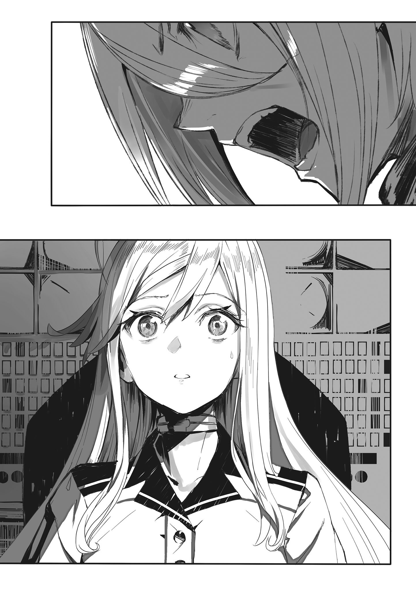
息が、詰まった。
「あ............」
思い返し、茫然となった。その通りだった。知らない。聞かなかった。誰の名前も、必ず最初に応えてくれるアンダーテイカーも、一番話に応じてくれたキルシュブリューテの名前さえ。勿論自分の名だって名乗っていない。ハンドラー・ワン。彼らの管理者で監視者という役職名だけで、平然と通して。
合意の上ならともかく、そうでないなら同じ人間を相手に、許されることではない非礼だ。
そんなことを、平気で。自覚一つなく行っていた。
家畜は家畜なりの扱いをするべきなの。
そう、平然と言い放った母親と、これまでの自分の振舞に。言葉に出していなかったという以外に、一体何の違いが──。
がくがくと、総身が震えた。ぼろぼろ涙が零れて、言葉なんか何も出ないくせにみっともない嗚咽が漏れそうになるのを両手で口元を押さえて堪えた。自覚していないだけだった、誰かを踏みつけて見下して、それを当然として恥じいりもしない自分自身の醜さが恐ろしかった。
ヴェアヴォルフが、──違う、今までそう呼んでいた、名前も顔さえも知らない有色種の少年が──低く口を挟んだ。
『セオ』
『ライデン！ こんな白ブタ、庇ってやること──！』
『セーオ』
『っ......わかったよ』
舌打ちが一つ。ぶつん、とラフィングフォックスの気配自体が同調から消える。
内心の感情をそれで吐き出してしまおうとするような嘆息を長く吐いて、ヴェアヴォルフがこちらに意識を向ける。
『ハンドラー・ワン。同調切ってくれ』
「......ヴェアヴォルフ、あの、」
『戦闘は終わった。もう管制してる義務もねえだろ。......ラフィングフォックスは言いすぎだが、だからって俺達もあんたと仲良くおしゃべりしたい気分でもねえんだ』
声音は冷たいが糾弾の響きのないその口調は、レーナにはむしろ、より酷薄に感じられた。
非礼を咎めない。責めもしないのは、諦めているから。何を言ってやってもどうせ聞き入れない、言葉を話すふりをしているだけで誰の言葉も聞かなければ受け入れもしない、自分の発した言葉の意味さえ本当は理解できていない人の形をした豚だと、諦められているからだ。
「......ごめんなさい」
震える声で辛うじて応え、一拍おいてから同調を切った。返る言葉は、誰からもなかった。
ハンドラーとの同調は仲間達とのそれごと切って、セオはひどく気分が悪い。
ややあって、アンジュが繫いできた。
『セオ君』
「......わかってるよ」
ぶすくれた声が出た。
酷く子供じみたその響きが嫌で、セオは苛々と唇を突きだす。
『気持ちはわかるけど、言いすぎよ。いくら本当のことでも、ああいう言い方はよくないわ』
「わかってる。......ごめん」
わかっていたのだ。そうあってはいけないとみんなで決めて、それはそうやって言葉にされる前から自然と理解できていたことだったから、ずっとこれまで守ってきたのに。
言いたいことはそのまま全て、思いつく一番きつい言葉で叩きつけてやって、でも、気持ちは収まるどころか余計腹立たしくてささくれ立って嫌な気分だ。怒りを向ける謂れはない、かけがえのない仲間達にも咄嗟に嚙みついてしまうほどに。
破ってしまった。大切な約束だったのに、あんな、白ブタなんかのために。
それでも我慢できなかったのは、きっと。
『......隊長さんのこと？』
「......ああ」
思い出す、大きな背。
十二歳で入隊して、最初に配属された部隊の隊長だった。
陽気で快活で、部隊中から嫌われていた。セオもその時は大嫌いだった。
笑う狐のパーソナルマークは彼から継いだ。隊長の〈ジャガーノート〉のキャノピの下で陽気に笑っていた狐は、あの頃絵なんて描いたこともなかったセオの腕では、何度描き直しても口角をねじ上げるように嗤う底意地の悪い狐のデフォルメにしかならなくて。
その、彼とまるで同じであるかのような顔をして、聖女気取りの白ブタが善良ぶってカイエの死を嘆いてみせたのが、セオは許せなかった。
許せなくて、でも、それでやってしまったのは結局は。
「......ごめん、カイエ」
燃え尽きた〈キルシュブリューテ〉の残骸を見やって目を伏せた。墓を作ってやることも、連れて帰ってやることすらできない、とうに見慣れてしまった仲間の遺体。
「ブタと同じ真似をして、君の死を穢した」
色々なことがあったろうに。最期まで恨み言の一言も口にしなかった、誇り高い君を。
誰かが死んだ日の夜は隊員達は一人、あるいは誰かと共にそれぞれのやり方でその死を悼んで、だからこの夜、シンの部屋を訪れる者はいない。
月と星の明りで必要がないから電灯は消した自室の、冷たく青い光の差し込むデスクに掛けて緩く瞑目していたシンは、控えめに響いた窓硝子を叩く音にその血赤の目を開いた。
隊舎の外の窓の下、佇むファイドが二階のここまでクレーンアームを伸ばして、先端のマニピュレーターに摘まんだ数センチほどの薄い金属片を差し出す。
「ありがとう」
「ぴ」
受け取ると、ファイドは一度光学センサを瞬かせてからがしゃがしゃと踵を返した。コンテナに満載した残骸を自動工場の再生炉に運ぶ、〈スカベンジャー〉の本来の役目。
あらかじめ広げておいた布の上に金属片を置いたところで、知覚同調が起動した。
簡単な工具類を入れた布包みを解こうとした手を一瞬だけ止め、シンは眉を顰める。同調の対象はシン一人で、相手はこの基地にいる人員の誰でもない。
『............』
向こうから繫いできたというのにそのまま相手が何も言わないので、一つ嘆息してシンは口を開いた。同調の向こうの、悄然とした気配。
「何かご用でしょうか。ハンドラー・ワン」
びくっと肩を震わせるように気配が揺れて、それきりまた、何も言わない。逡巡しているらしい沈黙に、シンは何の関心もなく相手が言葉を発するのを待った。
中断していた作業を再開して随分経ってから、ようやくハンドラーの少女はおずおずと口を開いた。手ひどく撥ねつけられるのを予期しながらおそるおそるかけてくるようなか細い声で、シンは今度は手を止めなかった。
『......あの、』
拒絶されたら、大人しく切ろうと思っていた。
その覚悟でいたから、これまでと同じ静かな声を向けられて、レーナはむしろ怖気づく。
何度も息を整えて次は言おうと心を決めて、何度目かでようやく声が出る。
「......あの、アンダーテイカー。今、よろしいでしょうか......？」
『ええ。どうぞ』
静かで穏やかで、感情の響きのまるで無い声が淡々と応じた。
それはやはり今までと何も変わらない声音と口調で、それらは沈着な性情ゆえではなく、こちらに何の関心もないからなのだと初めて気づいた。
また臆病に縮こまりそうになる心を叱咤して、深々と頭を下げた。
多分これも、ほんとうは卑怯だ。
本当は最初から、全員に言うべきだ。けれどきっとまだ繫いでくれないだろうラフィングフォックスやヴェアヴォルフに、そうとわかって同調を試みる勇気はなくて。
「ごめんなさい。昼間のことも、これまでのことも。本当にすみませんでした。......あの、」
きゅ、と膝に置いた両手をきつく握りしめた。
「わたしは、レーナ。ヴラディレーナ・ミリーゼと、言います。こんな、今更ですけれども、......あなたたちの名前を、教えていただけませんか......？」
しばらく、間が空いた。
レーナには怖ろしいような沈黙だった。遠い、ささやかな雑音と、それを際立たせる無言。
『......ラフィングフォックスの言ったことを気にされているのでしたら、』
無関心な声だった。そっけなく、突き放した、ただ事実を言っているだけというような。
『それは不要です。別にあれが我々の総意というわけではありません。この現状を貴女が作りだしたのでもなければ、貴女一人の力で撤回できるものでもないということはわかっています。貴女には不可能なことを、しなかったと責められたからといって気に病む必要はありません』
「でも、......名前も知ろうとしなかったのは私の非礼です」
『それも必要がないからでしょう。何故〈レギオン〉には傍受できない知覚同調下で識別符号の使用が義務付けられ、プロセッサーの人事ファイルも開示されないのだと思いますか？』
レーナは唇を引き結んだ。およそ愉快ならざるその答えは容易に想像がついた。
「ハンドラーが、プロセッサーを人間と考えずにすむように、ですね」
『ええ。大概のプロセッサーは一年も経たないうちに死ぬ。その大量の死をハンドラー一人が負うのは負担が過ぎると、そう考えたのでしょう』
「それは卑怯です！ わたしは、」
気づいて声がしぼんだ。
「わたしも、卑怯でした。......卑怯なままでいたくない。わたしに名乗るのが嫌だというのでなければ、......どうか、教えていただけませんか」
存外に頑ななハンドラーの少女に、シンは再び嘆息する。
「......今日戦死したキルシュブリューテは、カイエ・タニヤという名です」
『！』
ぱっと同調の向こうで嬉しそうな感情が湧き、ついでそれが今日死んだばかりの少女の名だと思い至ってかすぐに自制された。対照的に淡々と、シンは仲間達の名を告げていく。
「副長のヴェアヴォルフが、ライデン・シュガ。ラフィングフォックス、セオト・リッカ。スノウウィッチ、アンジュ・エマ。ガンスリンガー、クレナ・ククミラ。ブラックドッグ、ダイヤ・イルマ──」
二〇名全員の名を伝え終えて、最後にハンドラーが締めくくった。
『わたしはヴラディレーナ・ミリーゼです。どうぞ、レーナと』
「先程承っています。......階級は」
『あ......そうでしたね。少佐です。まだ、なりたてですけれど、』
「では、以後ミリーゼ少佐とお呼びいたします。よろしいでしょうか」
『......もう』
あくまで上官として接しようとするシンに、レーナは苦笑したようだった。
それからふと、訊いてきた。
『今日は、誰もいないようですが。......何をしているのですか？』
いっとき、シンは沈黙した。
「──名前を、」
『え？』
「カイエの名前を、遺しています。......おれたちエイティシックスには、墓がありませんので」
小さな金属片を、青く透ける月光にかざした。薄い長方形のアルミ合金に、工具で刻んだカイエのフルネームと、塗料の薄紅色と黒々と走る文字の一部。五弁の桜の上から彼女の民族の文字で『桜花』と書いたそれは、カイエの〈ジャガーノート〉のパーソナルマークだ。
「最初の部隊で、他の奴らと約束をしたんです。死んだ奴の名前をそいつの機体の破片に刻んで、生き残った奴が持っていよう。そうやって最後まで生き残った奴が、そいつの行きつく場所まで全員を連れて行こう、と」
実際にはその頃は、戦死者の機体片さえ回収できないことの方が多かった。ありあわせの金属片や木片に釘で搔いて名前を刻んで、それだけがそいつの存在した証だった。
ほぼ確実に機体片を入手できるようになったのは、ファイドがそれを覚えてからだ。可能な限りキャノピのすぐ下、パーソナルマークの描かれた装甲表面の一部を切り取ってくるのも。
それらは全て、まとめて〈アンダーテイカー〉のコクピットの備品入れにおいてある。最初の部隊の隊員達と、それからの全員。その彼らと交わした約束を果たすため。
「その時はおれが最後で、今までずっとそうでした。だから、おれは連れて行かないといけないんです。おれと共に戦って死んだ全員を、おれが行き着くところまで」
レーナはその静謐な声に胸を衝かれる。
先程までのそれとは違って、何も感じていないからではないと何故かわかった。
急に恥ずかしくなった。
周りの死を、沢山の死を、ただ黙して受け止めて、引き受けて。一言の嘆きも表に出さないまま、当然のことのようにその全てを負って。
一人の死として真実向き合おうともしないまま、嘆くだけはあけすけに嘆いてみせた昼間の自分は、だから、仲間の死を静かに背負おうとしていた彼らに対して、あの時、本当にひどいことをしてしまったのだろう。
「今まで、もう、どれくらいの人数になるのですか......？」
『五六一名です。カイエを含めて』
即答に、いよいよ唇を嚙んだ。自分は、自分の指揮下で死んだ者の数も覚えていない。もっとずっと少ないのに、正確に何人かといわれたら思い出して数えなければわからない。
「......だから、あなたは〈葬儀屋〉なのですね」
『それもあります』
沢山の仲間を、静かに葬って。作れない墓の代わりに小さなアルミの墓標と記憶を抱えて。
慕われるのも当然だ。優しいのだろう、この、アンダーテイカーという少年は──。
と、そこまで考えて。
あ、とレーナは目を見開く。
『アンダーテイカー。あの、』
そう呼ばれてもまだそのことに気がつかない、という点に、シンがその根本に抱える、物事に対する関心や執着の希薄さが表れていた。レーナに対しても、それからシン自身に対しても。
『貴方の名前を、聞いていないと思うのですが......？』
シンは瞬いた。名乗りたくないのですか、とか聞いてくるが、そういうわけではない。単純に忘れていたのだ。
「失礼しました。シンエイ・ノウゼンです」
シンにしてみれば名前もパーソナルネームも識別のための記号、どちらで呼ばれようと構わないから短く告げるのに──けれど、レーナが大きく息を吞むのに流石に目を上げた。
『ノウゼン......!?』
愕然と繰り返したレーナを訝しむ間もなく。
がたん！ と同調の向こうで椅子か何かがひっくり返る音がした。勢いよく立ち上がる気配。
『もしかして、ショーレイ・ノウゼンという方をご存じではありませんか!? デュラハンというパーソナルネームの、首のない骸骨の騎士のパーソナルマークをつけた......！』
シンはわずかに、目を見開く。
†
「戦場を見に行こう、レーナ。そこで何が起きているのか、その全てを」
その日、共和国陸軍大佐ヴァーツラフ・ミリーゼは、十歳になる一人娘のレーナを連れて偵察機を前線に向かわせた。
「......戦争を、しているのでしょう？ お父さま」
「ああ、そうだよ。そして、それと一緒にもっと酷いことを私達がしているんだ」
ヴァーツラフは共和国正規軍の数少ない生き残りで、彼と部下達が家族と同胞を守ろうと必死に戦っているその間に、愛する故国はその彼らの矜持を踏みにじる悪法を制定していた。
守るべき市民の一部を人間以下と規定し、追い出して閉じ込めて戦わせる。
ある小さな町で起きた事件は、今でも忘れられない。
全滅した正規軍の代わりに急遽かき集められた新兵はその多くが自らの粗暴や怠惰で元の職を失った者ばかりで、教育も足りず、何より最初の任務が同じ市民を銃を以て追い立てるという代物だ。元より高くないモラルは瞬く間に地に落ち、どの隊でも略奪や暴行が横行していた。
覚えている。二人の子供の目の前で、その両親を笑いながら嬲り殺していたけだものども。
姉らしい少女の悲痛な慟哭と、妹らしい女の子の泣くこともできず凍りついた瞳を、今でもヴァーツラフは忘れられない。
あの子たちは一生、白系種も共和国も、許すことはないだろう。
「......やめさせなければ......。こんなことは、早く......」
幼い娘に壁の外の全てを見せるため、偵察機はゆっくりと飛ぶ。
第一区の住民は、その外に出ることはほとんどない。最外周区の生産プラントの丘陵と太陽光・地熱・風力発電プラントの平原と林を超え、山脈の如きグラン・ミュールの威容を見下ろす間は初めて見る光景に目を輝かせていたレーナも、粗末なバラックを鉄条網と地雷原が取り囲む強制収容所が、夕暮れの草原に点在する荒涼の風景が広がる頃には、顔を曇らせて押し黙ってしまっていた。
神妙な顔で窓の外を見つめている娘に、ヴァーツラフは微笑む。賢い子だ。言葉を尽くして教えずともこうして見て学んで、考えてくれることだろう。
仮にも軍用機を私用に持ち出し、許可のない民間人を乗せるのは明確な軍規違反だが、知ったことではなかった。どうせ今の共和国軍には勤務時間中は賭け事とゲーム、終われば酒と女にしか興味のない軍人など名ばかりのクズしかいないのだから。
「前線基地を少し超えるくらいまで、回ってもらえるか。戦場も見せたいんだ」
操縦桿を握るパイロットに告げた。普段八五区外に飛ばす機会など全くない、偵察機での長距離飛行を許可されて楽しげな顔なじみのパイロットは気軽く頷く。
「了解です、大佐。......ですが、その辺りは規則では輸送の連中の飛行禁止区域ですよ？」
「何、問題ないだろう。競合区域まで入るわけでなし、それにこの速度なら着くのは夜だ。〈レギオン〉どもは動かんよ」
〈レギオン〉は基本的に昼行性で、それは彼らが電気で駆動しているためだ。常時は支配域奥の発電プラント型からエナジーパックの供給を受けているが、それを使い切った緊急時には個々の〈レギオン〉が収納式のパネルを広げて太陽光発電を行う。夜には当然発電できないから、身動きできないまま撃破されるのを避けるため、夜戦の類は避ける傾向があるらしい。
本音を言えば〈レギオン〉との戦闘の苛烈も、レーナに見せておきたかったのだけれど......。
それも娘の身の安全には代えられないかと、小さな背を見やってヴァーツラフは苦笑し。
ただ、ヴァーツラフは失念していた。
あるいは彼自身、戦場で死ぬのはエイティシックスばかりと、他人事として捉えていたか。
〈レギオン〉包囲下で他国との交流が全く途絶え、航空機による地上攻撃もされない理由。
シュタッヘルシュバイン。
開戦と同時に共和国のほぼ全域にばら撒かれ、航空戦力を壊滅させた。電磁妨害の蝶の群に身を隠し、今なお針の山を成す対空自走砲型〈レギオン〉。
人の暮らす灯りの乏しい戦野の黒い夜空に、耳を劈く轟音で朱く爆炎が散る。
左翼側のローターに被弾。偵察機は炎の尾を噴いて傾き、みるみる地表に近づいて──。
その光景を、夜間の哨戒任務に出ていた、ある戦隊の戦隊長が見ていた。
「......なあ。今、偵察機が」
「あ？ ああ。いいよ、ほっとこうぜデュラハン。どうせまた遊覧飛行の馬鹿ブタだろ。白ブタが何匹死のうが、俺たちエイティシックスにゃ万々歳じゃねえか」
戦隊長は構わずキャノピを閉めて愛機を立ち上がらせる。血赤の髪。眼鏡の奥の漆黒の瞳。
「おいデュラハン......」
「救助に行く。......おまえ達は哨戒を続けてくれ」
目が覚めると、火の海だった。
両手をついて上体を起こして座り込み、レーナはきょろりと周りを見回す。
何もかもが燃えている。お父さまも、火に炙られて動かない。胸から上が無くなっていた。
外から何か、喚き声と大きな音が聞こえてハッチから這い出す。
焰の色を鈍く照り返す銀色の、大きな、見上げるばかりにおおきな怪物がいた。
硝子の煌めきの赤い目。肩の上の汎用機関銃の禍々しい鈍色。昆虫じみた、せわしい脚の動きに胴体部が全く連動しない、何かの上を滑ってくるような気味の悪い歩容。
向かう先にはパイロットがいて、何事か喚きながら腰だめにしたアサルトライフルを乱射している。多くは外れ、たまさか当たるものも装甲に弾かれてただ火花を散らすばかり、斥候型は意にも介さない。悠然と近づき、無造作に前脚で薙ぎ払った。冗談みたいに上半身を刎ね飛ばされたパイロットの下半分が、血の柱を噴き上げて倒れた。
斥候型の複合センサユニットが、今度はきろりとレーナに向けられる。
なす術もなく身をすくませた、その時。
『──生き残りがいるなら耳を塞いで伏せろ！』
割れて雑音混じりのスピーカーの大音声。揺らめく炎の紗幕を突き破って、四つ足の蜘蛛が黒い夜空と朱い焰を背景に躍り出た。
側面に描かれた首のない骸骨の騎士の紋章が、レーナの目に焼きつく。
両の格闘アームの重機関銃を向け、撃発。耳を劈く轟音で重機関銃が咆哮する。
歩兵用アサルトライフルなどこれに比べれば豆鉄砲同然、コンクリートの防壁も装甲車も容易くぼろくずに変える重機関銃弾の猛烈な嵐が、振り返ろうとした斥候型に襲いかかる。
装甲の薄い斥候型はたちまちずたずたに引き裂かれ、何とも知れぬ鉄屑となって頽れた。
重機関銃の凄まじい銃声にぼうっとなった頭をおそるおそる上げたレーナの前に、蜘蛛ががしゃがしゃと重い足音で歩み寄る。
『大丈夫か？』
人の声と言葉が問うてくるが、怖い。声もなく縮こまっていると、蜘蛛の胴体がぱくりと割れて後ろに跳ね上がり、中から人影が立ち上がった。
血の色をした赤い髪の。黒縁の眼鏡をかけて理知的な細身の、二十歳そこそこの青年だった。
助けてくれたお兄さんは、ショーレイ・ノウゼンと名乗った。
お兄さんの『きち』だという場所の、沢山の機械の蜘蛛が並ぶ建物の入口近く。第一区で見るのとはまるで違う、空を埋め尽くす星の煌めきがしんと降り注いでいる。
『きち』には他にも何人も人がいたけれど、近くに行っちゃ駄目だよとお兄さんは言って、その人達も近づいてこなかった。遠巻きにだが睨まれているのがわかって、少し怖かった。
ともあれ名乗られた名前に、レーナは瞬く。知らない、ひどく馴染みのない響きの名だ。
「......ふしぎなお名前」
「ああ。帝国でも父の一族しか使ってない珍しい姓らしいから。名前も」
苦笑して、お兄さんは肩をすくめる。
「レイでいいよ、言いにくいだろ。一族じゃ伝統的な名前らしいんだけど、共和国人にはどうもなじみが薄くって」
「共和国の人じゃないの？」
「両親が帝国の出で、おれと弟は共和国の生まれ。......そう、弟がいるんだ。丁度君と同い年くらいかな。......大きくなってるだろうなぁ......」
その言った時、レイは笑っているのにひどく寂しそうだった。懐かしく苦く、何処か遠くを見るまなざし。
「会ってないの？」
「......うん。まだ帰れないから」
従軍しているエイティシックスは、任期が終わるまでたった一日の休暇も許されないのだということを、レーナはまだ知らなかった。
お腹すいてない？ と聞かれて、夕食は食べてないのに空腹とは感じなかった。首を振るとレイは痛いような顔をして、甘いものなら飲めるかなとチョコレートをお湯で溶いたものを持ってきてくれた。
それがここでは破格のもてなしだということは、幼いレーナにも察せられた。
「......お父さまが」
「ん？」
「わたしたちは、有色種の人にひどいことをしているって、教えてくれたの。お兄さんは有色種なのに、どうしてわたしを守ってくれたの？」
まっすぐ疑問をぶつけると、レイは困ったような顔をした。何か、レーナにはまだ難しいことを訊いた時に、ごまかさないで答えようとしてくれる大人のひとたちがする顔。
「......そうだな。確かに、おれ達は今酷いことをされてる。自由を奪われて、尊厳を蹂躙されてる。それは誰にも許されないし、許してはいけないことだ。そういうことをおれ達はされて、市民でも人間でもない、野蛮で愚鈍な卑しい豚だって決めつけられてる」
黒い瞳に刹那、深く冷たい怒りが閃く。吞みこむように自分のマグカップに口をつけた。
「それでも、おれ達はこの国で生まれてこの国で育った、共和国市民だ」
その言葉は、静かなのに決然と強く、レーナの耳に響いた。
「今は誰もそれを認めようとしないけれど、だからこそ、そのことをおれ達は証明しないといけない。国を護って戦うのは市民の義務で誇りだ。だからおれ達は戦うんだ。戦って、守る。守りきってみせる。......口先だけのクズどもと同じに成り下がってたまるものか」
レーナはぱちぱちと瞬いた。戦う。守るために。証明するために。でも、あんな大きな、怪物みたいなものと。
「怖くないの......？」
「怖いよ。でも、戦わないと生き残れないから」
肩をすくめて笑って、レイはふと、満天の星を見上げた。
じゃらじゃらと音がしそうな、けれど何の音もしないのがいっそ恐ろしいほどの、漆黒の夜空を埋め尽くして煌めく星屑の瞬き。その狭間に広く深く、厳然と広がる無窮の虚無の闇色。
それまで浮かべていた笑みが消える。誓いのように真摯に、言葉は紡がれた。
「おれは死ねない。死ぬわけにはいかない。必ず生きて、帰らないといけないんだ。弟の所に」
†
その時のレイの真摯な横顔と言葉を、十六歳になった今でもレーナははっきりと覚えていて。
だから彼と同じファミリーネームを思いがけず耳にして、レーナは興奮のあまりその場に立ち上がる。椅子を蹴倒したことにも、ティーカップが落ちて割れたことにも気が付かない。
レイの言ったとおり帝国でも珍しい、本当に珍しいファミリーネームのようで、これまでレイ以外に『ノウゼン』の名を持つ人にレーナは会ったことがない。その名前。同じ一族か、あるいはレーナと丁度同じ年頃の、この少年はもしかして──
果たして、シンは答えた。
一瞬の自失から醒めたばかりのような、初めて聞く、どこか呆然とした響きの残る声だった。
『......兄です』
「お兄様。......じゃあ、」
会えないと言って、会いたがっていた。必ず帰ると誓うように口にした──。
彼が、その弟か。
「会いたいと、帰らないといけないと仰っていましたよ......。......お兄様は今は、どうなさっていますか？」
懐かしさと万感で声を弾ませたレーナに、早くも常の冷徹を取り戻した声音でシンは告げた。
『死にました。五年前、東部戦線で』
あ。
「......すみません」
『いえ』
短く返された。本当にどうでもよさそうな声だった。
弟について語っていた時のレイの様子からはあまりの温度差に、レーナは戸惑う。誰かの死には慣れてしまっている、というのとも違う気がする、冷ややかな沈黙。
何を言ったものか、声をかけあぐねていると、やがてシンが静かに口を開いた。
『除隊したら、したいことはあるかと前に聞きましたね』
「え......ええ、」
『今も、除隊したとしても、したいことは特にありません。ただ、しなくてはならないことはあります。......おれは兄を探しています。この五年、ずっと』
レーナは首を傾げる。すでに亡くなっているレイを、それと知ってということは。
「遺体を......ですか？」
微かにわらう気配がした。
笑う、ではなかった。どちらかといえば嗤う、に似た。けれどもっとしんと冷えた。
凄絶なまでの鋭利さゆえに目を奪われる、鋭くも危うい氷刃のような。狂気のような。
『──いいえ』
†
翌日。
シンからことのあらましを聞かされ、ほどなく全員と同調を繫いできたハンドラーは真摯な謝罪の言葉を重ねた上で一人一人の名前を尋ねてきて、セオは非常にばつが悪い。
「......シン。余計なことしないでよ」
「後悔してたろ。内容はともかく言い方を」
見ていないようで意外と見ている。見透かされたようでちょっとむかつく。
ダイヤはにやにやと、アンジュは何故かほのぼのと見守っているし、あっくそ、何であたし関係ないみたいな顔してそっぽ向いてるんだよクレナ。あの時自分だって同じくらい頭に来てて、僕が怒鳴ってなかったらそっちが怒鳴ってたくせに。
「ていうかあんたもさ、ミリーゼ少佐だっけ。シンから僕らの名前聞いてるんだろ」
『伺っています。ですが、皆さん本人から教えていただいたわけではありません』
当人から許しを得てないから、知っていても呼べない、ということか。面倒な。
シンは何も言わず、レーナは自分が悪いとわかっているから身を縮めて叱られるのを待っている子供みたいな様子で、セオはとうとう面倒くさくなった。怒りを保ち続けるのが、か、意地を張り続けるのが、かは知ったことじゃない。
「最初に配属された隊の、戦隊長がさ」
突然の話題の転換に、レーナは戸惑ったようだった。構わず続ける。
「馬鹿みたいに陽気で明るくて、元軍人で馬鹿みたいに強くて、............白系種だった」
同調の向こうで小さく、息を吞むのが聞こえた。
「最初の防衛戦を生き残ったのに、エイティシックスだけ戦わせるなんておかしいって勝手に最前線まで戻ってきた物好きで。部隊全員、隊長の前では何も言わなかったけど陰では悪くしか言わなかった。実際大嫌いだったよ。だってそうだろ。同じプロセッサーって言ったって、隊長は選んでここに来たんだ。僕達にはそんな選択肢なんか最初からなかった。こっちに来てからだって、嫌になったらいつでも全部放り出して壁の向こうに帰れるんだ。仲間面される度にむかむかしたよ。安い同情ごっこにいつ飽きて帰るかってみんなで賭けてた」
『......』
「でも、違った。──隊長は最後まで帰らなかった。帰らないで死んだ。他のプロセッサーを守ろうとして、殿引き受けて、死んだ」
最後の声を聞いたのはセオだった。隊長を残して撤退する中、その一番近くにいたのがセオで、聞き流してくれて構わないから聞いていてくれないかと無線通信が入った。
──お前達に嫌われてるのは知ってた。当然のことだから何も言わなかった。
──嫌われるのは当然だ。だってお前達を助けに来たのでも、救いに来たのでもない。
──俺は、ただ。お前達だけ戦わせてたら自分が許せなくなるってそう思って。それが怖くて。自分のためだけに戦場に来たんだ。赦されなくて当然だ。
──赦さないでくれ。
そうして突然、無線はノイズを吐き散らして沈黙した。そうなるのがわかっていたから同調はしなかったのだと、その時になってようやくわかった。戦死を覚悟で、二度と帰らぬ覚悟で、この絶死の戦場に戻ってきたのだということも。
もっと話をしておけばよかったと初めて後悔して、今でもまだ、後悔している。
「別に、隊長と同じことしろとか、思ってるわけじゃないよ。ただ、壁の中にいて白系種である以上、あんたは僕達とは対等じゃないし、僕達はあんたを仲間とは認めないって、それだけ」
言いたいことを言い終えて、うんと一つ伸びをした。仲間達はみんな知っていることだし、何度も何度も反芻して考えた過去だ。今更話したくらいで、傷ついたりしない。
「以上、どうでもいい話終わり。......ああ、僕はセオト・リッカ。セオでもリッカでも可愛いクソ豚ちゃんでも好きに呼んでよ」
『どうでもよくありません。......ごめんなさい、昨日までは、本当に』
「それいいよもう。めんどくさいなあ」
『カイエが言っていた、良い人というのは......その方のことだったのですね』
「隊長だけじゃないけどね。全員、その人なりに必死で戦った人達だよ」
彼らの同胞が作り上げた、クソったれなこの世界と。
『......』
続いて、ライデンが名乗った。
「戦隊副長、ライデン・シュガだ。......まず最初に謝っとく。あんたが毎晩繫いでくるのを、俺達は聖女気取りの偽善者のブタが、自分のブタ加減に気づきもしねぇでおめでたいって笑ってた。それについては詫びる。悪かった。その上で、だ」
黒鉄色の双眸が冷然と細まる。
「セオが言ったとおり、俺達はあんたを対等とも仲間とも思わない。あんたは俺達を踏みつけた上で、上から綺麗事吹いてるアホだ。それはどうあろうと変わらないし、だからそうとしか見做さない。それでもいいっていうなら暇つぶしにこれまでどおり相手はしてやるが、個人的にはそれも勧めねぇ。あんたはハンドラーには向いてない。......辞めた方がいいぜ」
レーナは少し、笑ったようだった。
『暇つぶしにでもなれるのなら、またこれからも繫がせてもらいます』
ライデンは苦笑した。狼のような精悍な顔に、どこか人懐こい色が滲む。
「あんたも大概、馬鹿だな。......ああそうだ。地図、とっとと送ってくれ。あんた昨日、泣くのに忙しくて忘れたろ」
レーナは今度こそ笑った。
『すぐに』
やりとりの声を聞くともなしに聞きながら、シンはふと、昨日のレーナの話を追想する。
ショーレイ・ノウゼン。
久しぶりに聞いた名だった。
もう二度と聞くことはないと思っていた名前だ。そんな名だったということさえ、そういえば忘れかけていた。シンがその人を名前で呼んだことは、最後までなかったから。
知らず、右手が首のスカーフを摑み締めた。
兄さん。
間章 首のない騎士
所属部隊を壊滅させられ、廃墟の市街地に追い込まれて潜んで、夜になってしんしんと雪が降り始めた。
遺棄された書庫の中で、入隊からのこの一年で装甲に細かい無数の傷のついた〈ジャガーノート〉に背を預けて、シンは束の間のまどろみに身を委ねて夜が明けるのを待つ。
十二歳の小さな体に、雪夜の寒さはいかにも堪える。崩落箇所の無い壁の厚い造りの図書館の、最奥にある窓一つない書庫で、薄い毛布にくるまった。少し前まで廃墟の中を徘徊していた〈レギオン〉達はエナジー切れで雪に降り込められるのを避けるため撤退を始めていて、夜が明ければ何事も無く基地に戻れるだろう。その前にファイドと名付けてやった、前の部隊の時から何故だか妙に懐かれている〈スカベンジャー〉が来る気もするが。
ふと、呼ばれた気がして目を開けた。
一度死んでから聞こえるようになった亡霊達の声とも違う。音でもなく、ただ呼ばれていると感じる感覚。
随分前に無くしたきり、二度と聞こえなくなってしまった、これは。
惹かれるように、外に出た。
鋳鉄と暗灰色の石材を多用した街並みを、雪はすでに半ば以上その純白で染め、おぼろな影と霞ませている。音も無く激しく、無数に舞い落ちて降り積もり、街も瓦礫も、夜の闇さえ己の色に侵食する白魔の静かな暴虐の、魂さえ漂白するようなうつくしさ。
雪と瓦礫に埋もれる大通りを踏み越え、街の中央の広場に出た。
広場の最奥、二つ並んだ尖塔の片方が無惨に崩れ落ちた聖堂の廃墟。雪闇の紗の向こうに黒々と聳える、その巨大な死骸の前に。
ぽつりと行き倒れた白骨のように、朽ちた〈ジャガーノート〉が頽れていた。
キャノピが吹き飛んでどこにもない。風雨にざらつく、ひしゃげて曲がった装甲に微かに残る、首のない骸骨の騎士のパーソナルマーク。
雪に足をとられながら近寄り、コクピットを見下ろした。
「......兄さん、」
どうしてわかるのか、と問われても、わかるから、としか答えられない。シンにとってはそれは理屈も理由も無く、ただそうと確信できる事実にすぎなかった。
見下ろしたコクピットの、静かに雪の降り積もる白い狭い薄闇に最早一言の声もなく、首のない兄の変色した白骨がひっそりと横たわっていた。
第四章 我が名は〈亡霊の軍勢〉、数多なれば
携帯端末のメールの着信音に目が覚めて、レーナは起き上がって大きく伸びをする。起動したままの情報端末のホロスクリーンがガンカメラの映像を一時停止状態で投影し、プリントアウトした戦闘報告書の紙の海。
東向きの自室はカーテン越しの陽光で明るい。掛布の上に投げ出していた透ける素材の薄いガウンを素肌の上に羽織り、手櫛で髪を直しながらベッドを降りる。
メーラーを開いて、アネットからだ。
『来月革命祭でしょ。次の休みでパーティードレス見に行こうよ』
少し考えて短く返信を打ち込み、送信。
『ごめんね。今、少し忙しいの。また今度誘ってくれる？』
すぐに返信が返った。
『レーナってば、最近つきあい悪いよ？』
続けてもう一通。
『エイティシックスなんかに尽くしてやったって、何にもならないんだからね？』
ちらりとレーナは背後を振り返った。
昨晩、寝る前にもう少しだけと分析を進めていた、スピアヘッド戦隊の戦闘の記録。書き手の怜悧さを窺わせる、的確にまとめられた戦闘報告書に、〈ジャガーノート〉のミッションレコーダーのデータファイル。何故か哨戒報告書だけは相変わらずの内容の無さだが、それ以外はまさに宝の山そのもの、対〈レギオン〉戦闘における情報の宝庫だ。
何にもならなくなんてない。
これはきっと、皆を生き残らせる力になる。
『ごめんね』
†
「──それは別に、行ってよかったのではありませんか？」
普段は〈アンダーテイカー〉のコクピットに置いているアサルトライフルの整備をしながら、知覚同調越しの雑談にシンは淡々と返す。連絡と報告の合間。報告上は哨戒に出ている時間の。
昼下がりの、隊舎の自室。部品にじゃれられると邪魔なので放り出した仔猫が、諦め悪く扉をかりかり引っ搔いている。
『でも、その時にもし、襲撃があったら』
レーナはいかにも不服げだ。生真面目な彼女らしいというか融通がきかないというか。
「何とでもなります」
『大体、戦争中にパーティーなんて』
「おそらく今もどこかの戦区は戦闘中です。壁の中で何をしていようと、前線には何の影響もありません」
カムピンを抜いてボルトをキャリアグループから外し、広げた布の上に置く。アサルトライフルなど〈レギオン〉にはほとんど通用しないが、戦い様がないわけではないし、万一の時にはこれが最後の武器になるから手抜きはできない。
「だから、それは行っていいと思いますよ。敵情の分析はありがたいですが、少佐の私的な時間を占有してまですることではありません」
言うと、レーナはしばらく黙ってしまった。
『もしかして、余計なことでしたか......？』
「いえ。随分助かっています」
本心だった。役にも立たない指揮官の自己満足のために、時間を割く真似をシンはしない。
「おれたちは所詮、前線しか知りませんから。教育を受けた将校の視点、大局を含めた俯瞰からの情報分析は貴重です」
『......よかった』
「ですが、それにばかりかまけている必要はありません」
む、とレーナが口を噤む気配。エキストラクターピンを外しながら、あくまで淡々とシンは続けた。
「あまり戦場に囚われすぎていると、おれのようになりますよ」
冗談とも本心ともつかないシンの言葉に、レーナは小さく嘆息する。全く気は進まないが。
「ノウゼン大尉も、たまには冗談を言うんですね。......わかりました。精々楽しんでくるとします。くだらないパーティーと、ハイヒールとドレスの窮屈さを」
こちらも冗談で返すと、シンは少し笑ったようだった。
『革命祭の、でしたか。そういえば、そんな祭りもありましたね』
「何か、覚えていますか？」
シンはしばらく考えた。
『......花火が、ありましたか？ 噴水のある庭園で。宮殿の前の』
はっとレーナは顔を上げる。
「そうです。第一区の、大統領府リューヌ宮殿の。......第一区に住んでいたのですか？」
第一区の居住区画は王政時代からの高級住宅街であり、住民も古くからの者が......かつての貴族階級である白銀種が過半を占める。有色種の住人は、九年前でもかなり珍しい部類だ。
ひょっとして、どこかですれ違ったこともあったのかもしれない。そう思うと不思議に切ない気持ちがした。
『あまり覚えてはいませんが、おそらくは。家族と一緒に......兄に手を引かれて行った記憶があります』
あ、とレーナは身を縮める。またやってしまった。
「すみません」
『......何が、ですか？』
「無神経ですよね。この前も、その、......お兄様やご家族は......」
『ああ......』
しゅんと肩を落とすレーナとは対照的に、シンの口調はやはり、酷くそっけなかった。
『構いません。ほとんど覚えていませんから』
「え、」
『家族のことは。断片的な記憶が幾つか残っているだけで、もう顔も声も思い出せません』
「......」
それを、情の無いことだとは思えなかった。
家族と別れた時、シンはまだ随分幼かったはずだ。まして五年にも渡る死闘の日々。
大切な思い出さえ戦火に焼き尽くされてしまうのは、あるいは仕方のないことだったろう。
一瞬──廃墟の戦場で帰る道を見失って立ち尽くす、小さな子供が見えた気がした。
「──必ず生きて、帰らないといけないと言っていましたよ。あなたのところに」
出来る限り、正確に。記憶の中のレイの言葉を思い出して、それを口にした時のレイを思い描いて、レーナは言った。
知覚同調は互いの意識を経由して、互いの声を伝え合う。同調に際して、顔を合わせて話している程度の感情も伝わる。
伝わればいい。シン自身は奪い去られてしまったのだとしても、レーナが覚えているレイの記憶が。その姿と言葉と、今もレーナの中に残る心が。
「大きくなってるだろうなと、懐かしがっていました。大切な家族だと、思っているのがわかりました。お兄様は本当に、貴方の元に帰りたがっていました」
『............。そうであればいいのですが』
長い沈黙の後、返った言葉はかすかに揺らいだ響きを帯びていた。そうならいいと思いながら、そうではないことをこれ以上ないほど思い知っている。そういうような。
「大尉......？」
シンは応えず、触れられたくないのだろうと察してレーナも口を噤んだ。沈黙の向こうで、小さな金属音だけが微かに響く。
最後に少し大きく響いた、特徴的な音響にレーナは小首を傾げた。今のは。
「大尉。もしかして今、ライフルの分解整備をしていませんか？」
一瞬シンは言い淀んだ。
『......そうですが』
「今、哨戒行動中のはずですよね」
黙った。
妙にでたらめな哨戒報告書の理由はそういうことかと、レーナは思い切りため息をつく。
その割に、スピアヘッド戦隊の初動は相変わらず異様に早い。レーダーより早くどうやって〈レギオン〉の襲撃を察知しているのか、そういえばまだ聞いていない。
「貴方が必要ないと判断したなら、そうなのでしょうけれど。......ライフルも」
エイティシックスが小火器の類を持つのは禁止されているが。
「必要だから使っているのでしょうから、何も言いませんが。管理はきちんとしてくださいね」
『......すみません』
応えた声はなにやら少し意外そうで、レーナは瞬く。
「あの、何か変なことを言いましたか？」
『いえ、......少佐は怒るかと、思っていましたので』
やっぱり少し意外そうに言われて、思わずレーナは視線を泳がせた。
それは、たしかに配属当初、報告書の提出についてうるさく言ったり、あまりにも規律の乱れた国軍本部の同僚達の振舞についてついつい愚痴を零したりもしたけれど。
「別に......意味のない規則や禁止事項にまで拘泥するほど、堅物じゃありません。繰り返しになりますが、貴方たちが戦場で必要だと、あるいは不要だと判断したことなのでしょう。その判断は、わたしは尊重しますから」
戦場にいないわたしが、何か言えた立場ではないのだから。
一瞬苦く思って、一つ頭を振って切り替えた。
「それにしても、やはり戦場では予備の武器でも、そうやって整備は欠かさないのですね。共和国のアサルトライフルは重いからと、八五区では訓練どころか持つのも嫌がられるのに」
大口径・フルサイズの小銃弾を使用する共和国陸軍制式モデルは、そのために総身が頑強な金属で作られている。対軽装甲戦闘を考慮しての口径だが、結果として非常に重い。
のだが、シンは怪訝そうな様子になった。
『重い？ ですか？』
本気で不思議そうな口調にレーナはきょとんとし、唐突に気づいた。
そうか、当たり前じゃないか。男の子なんだから。
意識した途端に無性に気恥ずかしくなった。
そういえば、だって、言ってしまえば二人きりで、同じくらいの男の子とこんなに長く話したことなんてない。
『......少佐？』
知覚同調では顔を合わせている程度の感情も伝わる。シンにしてみれば、突然レーナが真っ赤になったようなものだろう。
「な、なんでもありません。ええと、」
突然同調の向こうの空気が緊迫した。
音もなく、シンが立ち上がる気配がする。どこか遠くに視線と意識が向く。
通奏低音のようないつもの雑音が、ほんの少しだけ強くなった気がした。
「......ノウゼン大尉？」
『管制の準備を始めてください』
見やった情報端末には、やはり何の警報もない。けれどシンははっきりと言った。
『〈レギオン〉が来ます』
今回は事前にシンと同調していたこともあり、小隊長以上が参加する作戦会議にレーナも加わった。
敵総数から部隊展開状況から進撃路から、いつもこんなに詳細に敵情を把握した上で迎撃作戦を立てていたのかと、内心レーナが舌を巻くほどの情報量を元に会議は進み、その上でレーナも幾つか作戦案を提示した。最終的に採用された案を追認し、作戦前要旨説明を経て作戦が開始される。
「主力は、近接猟兵型の単兵種編成と思われます」
伏撃のための埋伏位置にそれぞれ潜んだ隊員達との同調下、何故か唯一不透明だった敵兵種と編成について、レーダーの情報とこれまでの戦闘から得られた情報を元にレーナは推論する。
「生産性と整備効率からして、前回の戦闘で集中的に叩いた戦車型の定数配備は未完了のはずです。かといって対戦車砲兵型を前面に押し出す作戦は考えられません」
機動力もなければ装甲も薄い対戦車自走砲は、待伏せ専用の兵種だ。見た目が似ているからと戦車のように運用して壊滅させる失策は、履帯式戦車黎明期に人間が散々やりつくしている。
「対軽装甲用の榴弾はほとんど効かない戦車型ならともかく、比較的軽装甲の近接猟兵型のみの編成では長距離砲兵型の砲支援も限定的でしょう。先に斥候型を削ってしまえば、ほぼ無力化できるものと思われます」
『ヴェアヴォルフより各位。今確認した。少佐の読みがドンピシャだ』
偵察に出ていたライデンが言う。感心を通り越して、少し呆れているような口調で。
『それにしても......生産性だの整備効率だの、あんた、ほんとにちゃんと寝てるんだろうな』
不意にシンが口を開いた。
『少佐。今回は知覚同調は、切っていてもらえませんか』
「え？」
『市街戦でこれだけ近接猟兵型ばかりの編成では、どうしても乱戦になります。接敵が多くなる。......が多いこの状況下で、おれと同調しているのは危険です』
シンの言葉は一字一句完璧に共和国語だったが、言われた意味が理解できずにレーナは眉を寄せる。今、シンは何と言った？
黒羊が、多い？
『聞きたければ後で説明します。同調を切ってください』
今にも戦闘が始まろうという状況だ、説明の時間も惜しいのは当然だったが、理由も知らされないまま彼女にとっては恥ずべき職務放棄を要求されて、レーナは反射的にむっとなる。
「他の隊員とは今も同調しているでしょう。阻電攪乱型の電磁妨害もありますし、無線では万一の時に繫がらない恐れがあります。同調は切りません」
覚えた反発のまま拒否する。シンはそれでも何か言いかけて、いよいよ無視できぬ位置まで踏み込んだ〈レギオン〉に続く言葉を吞みこんだ。
『......忠告はしましたよ』
捨て台詞というには苦い響きで言い捨て、〈アンダーテイカー〉が立ち上がる。
戦闘はシンの予告通り敵味方の入り混じる乱戦となり、電磁妨害下で辛うじてブリップを表示させているレーダースクリーンを睨みながらレーナは片手で耳を押さえる。何だろう。雑音がひどい。この部屋の音ではないからシンたちが聞いている戦場の音だが、一体何の。
敵性ユニットの赤いブリップが、友軍ユニットの青のそれに接近する。〈アンダーテイカー〉。シンの機体。遥か遠い戦場ではまさに肉薄というべき距離、完全なる近接猟兵型の間合で、二つの光点が交錯し──。
誰のものとも知れない声が、奇妙に明確に、耳の中に響いた。
『──かぁさん』
死にゆく者が最後の吐息で、意識も朧に呟くような、そんな、虚ろな声だった。
凝然と凍りつく間にも声は続く。込めるべき追憶も感情も死の虚無の前に散逸しきった、茫漠の声が、繰り返し。
『かぁさん。かぁさん。かァサんカぁさんカぁサンカァさンかぁさんカぁサんかぁさんカぁサんカァサんカぁさンかぁサンカぁサんかぁさンかァさンかぁサンかァさんカァサんかぁサんカァさンかァさんカぁサんかぁさんかァサンかァサんかァさんかぁさんかぁサんカぁさン......』
「ひっ──!?」
総毛立った。
両手で耳を塞ぎ、知覚同調を介した音であるがゆえにそんな防御は何の意味も成さなかった。飛び込んでくる。母を呼ぶ末期の声が。言葉ではなくただの音の連なりに堕した、ひたすらに虚ろな最期の吐息が、壊れたような執拗さで。腹底に響く砲声が母を呼ぶ声を吹き飛ばし、けれど同じ音色の別の呻きが後から後から捻じ込まれる。
『助けてタスケテ助ケテたスケてタすけてたすけてタすけテたスケてたすケてタスケテたスケ』
『あツいあついアツいあツイあつい熱いアつイあツいあついアツいあツい熱イあつい熱いアつ』
『嫌だ......いやだ......イヤだ嫌ダいヤダイヤだいやだいヤだいやダイヤだいやだイやだイヤだ』
『まま、まマ、まマ、まま、ままママまママまママまママままままマママまままままマまマま』
『しにたくない。しにたくない。しにたくないしにたくないしにたくないしにたくないしにた』
「や、ぁっ......嫌ぁあああああ......っ！」
思考も理性も塗り潰す断末魔の呻きの渦の合間に、シンの声が聞こえる。
『少佐！ 同調を切ってください！ ミリーゼ少佐！』
沈着な少年には珍しい焦燥を帯びた声は、けれど恐慌するレーナには届かない。きつくきつく耳を塞ぎ、逃れようと身を縮め、かき消すように悲鳴を上げて、それでも止むことのない死にゆく声の斉唱にいよいよ正気は消し飛ばされて──。
『ちっ』
舌打ちとともに、シンが同調を切った。末期の声の群がふつりと消えた。
「..............................、あ............」
そろそろと顔を上げ、おそるおそる手を外した。......何も聞こえない。プロセッサー全員との同調が切れていた。
恐慌に浅い呼吸と、怯えに見開かれた瞳で、いつの間にか椅子から落ちて座り込んでいた床の上でレーナは管制室の薄闇を凝視する。
......今のは、何......？
同調しているプロセッサーの誰でもなかった。誰の声でもなかったし、それより遥かに、数も知れぬほど遥かに多かった。
そして呻きの中微かに、聞こえた声。あれは。
──死にたくない
「......キルシュブリューテ......、カイエ......？」
レーナとの同調を切断した時には〈黒羊〉の大群に群がられていて、耳を劈く断末魔の絶叫の嵐にシンは目を眇める。群の大半は近接猟兵型で、装甲を水のように切り裂く高周波ブレードの連撃に対処せざるを得なかったせいで同調の切断が遅れた。
絶叫が、喘鳴が、呻吟が叫喚が数えきれぬほど折り重なり、この近距離では内腑を揺さぶり耳を聾する轟音としてシンには聞こえる断末魔の声。そのくせこの距離ならば一つ一つの声を聞き分けることすら可能で、同調し共有した聴覚の元、その一つに気づいたセオが呻く。
『最悪......！ 今、カイエがいた......！』
息を吞む気配が幾つか重なり、通信網は瞬く間に騒然となる。
『カイエが......!? 連れてかれてたのか......！』
『くそっ......アンジュが焼いてやったはずなのに......！』
仲間達の悲憤は意識の端に、嘆きの声を頼りに〈カイエ〉の位置を探した。知覚同調による借り物に過ぎない他の者には不可能でも、オリジナルであるシンには可能だ。
耳をすますまでもなくそれを捉え、程なく距離と方向を摑む。藁山の中から針の一本を探し出すが如き真似を、人の五感の域さえ超えた精確さで。
最も近くにいるのは──クレナか。
「ガンスリンガー。方位〇六〇、距離八〇〇。一五機の集団の先頭、右から二番目の近接猟兵型」
『っ......了解』
死にたくないと嘆き続けるカイエの声が、砲撃を喰らってふつりと絶える。死してなおも遺り続ける、壊さぬかぎりは還れぬ亡霊の声の群。
正気を轢き潰すような怨嗟と嘆きの渦の中、シンはそっと一つ、憐れむような息を吐いた。
「弔い合戦、か」
壊さねば還れぬ、亡霊の群。
互いに往くべき場所へ還るを、望んでいるかのように。
あのハンドラーの少女はもう繫いでこないだろうなとふと思い、......何故だかそれを残念だと感じている自分に気付いて、シンは眉を寄せる。
†
もう一度同調してみようと気力を奮い起こすのに、日暮れまでかかった。
それからも繫ごうとするたび吐き気がするほどの恐怖に襲われて、結局同調できたのは夜も更け、前線はそろそろ消灯近くと思われる刻限だった。
こんな遅くでは迷惑かもしれない、とまたぞろ弱気が頭をもたげて、何とかそれをねじ伏せる。ここで先延ばして、明日にしてしまったらもう二度と繫げない。同じ言い訳を繰り返して永遠に先延ばしを続けるだけだ。
浅く速くなる呼吸を意識して深く吸って止め、知覚同調を起動する。幸い、相手はまだ就寝していなかったようで、問題なく繫がった。
同調の相手は、一人だけ。
同調を切れと言ったのは彼で、自分と同調していてはいけないと言ったのも彼だ。訊くのなら第一に彼だと思った。
「......ノウゼン大尉」
微かに、シンが目を見開く気配。
「ミリーゼです。あの、今、よろしいでしょうか」
変な間が空いた。
なぜか繫いだ時から微かに、ざあざあと雨の降るような水音。
『..................シャワー浴びてますが』
「ええっ!?」
素っ頓狂な悲鳴、というのを、レーナは自分の声で初めて聞いた。
耳まで真っ赤になってあわあわと言葉を探すが、空転するばかりでまともな思考が働かない。昼間とは別の意味でパニックになりつつ、なんとか取り繕う言葉を絞り出す。
「ご、ごめんなさい。そうですよね、もう遅いですものね......。あの、すぐ切りますから」
『いえ』
シンの声はやっぱり小面憎いほど沈着だった。
『おれは構いませんし、これが終わったらもう寝ます。訊きたいことがあるのでしたら、少佐がよければこのまま伺います』
「そ......そうですか。では......」
そうは言っても、何しろ父も早く亡くして男兄弟もなく、恋人なんかもまだいないレーナである。この状況は少々刺激が強すぎて、まだ熱い頰をどうしようもなく意識しながら口を開く。
「あ......そう、あの、今日の戦闘は？ 誰か、怪我をしたり、その、亡くなったりとか......」
『問題ありません。......そんなことを確認するために？』
「だって、」
いかな精鋭の彼らとはいえ、〈レギオン〉との戦闘で生還の保証などない。
ましてあの凄まじい叫喚の中──もしかしたらあの後全滅してしまったのではないかと、同調など誰にも繫がらないのではないかと、それも酷く恐ろしくて。
「大尉。......今日、戦闘中に聞こえたあの声は」
言った瞬間、まだ腹の底が冷える。
通奏低音のようないつもの雑音。深い森の葉擦れのような。遠い雑踏のざわめきのような。
それが遠いがゆえにそのように聞こえる、あの末期の声の無数の集合だったのだ。
ようやくわかった。シンの、〝死神〟という異名の由来。それを知るハンドラー全てから恐れられた訳。
この声こそが、その所以だ。
「一体、何ですか......？」
『......』
ざあざあと、水音。
『昔、死に損なったことがありまして』
じん、と首に鈍く痛みが滲んだ。鈍く重い、締め上げられるような。縊られるような。
レーナ自身の感覚ではなかった。同調を通じた......では、これは、シンの。
『というよりも多分、その時おれは死んだんでしょうね。同じものだから、声も聞こえる......死んだくせに消えずに残る、亡霊の声が』
「......亡霊、」
ふと、アネットの父親の事故の話を思い出した。
レイドデバイスの神経活性率が理論上の最大値に設定されて、世界そのものの意識の底にまで、潜ったきり戻れなくなった。
それなら。あまねく死者が世界に、その遥か底の最奥に還るというなら。
死に瀕し、最奥にまで墜ちかけた者は──あるいは知覚同調が人間同士を繫ぐように、最奥を介して他の何かと繫がってしまうのではないだろうか。例えば同じく死して最奥へと墜ちた、墜ちていながら宿る体が残って還りきらない、......消えられない亡霊達と。
でも、あれは。
「〈レギオン〉......でしたよね？」
聞こえたのは近接猟兵型に近づかれた瞬間。戦闘前のシンもそうととれる言い方をした。
『〈レギオン〉もまた、亡霊でしょう。帝国の滅亡とともにその兵器としての存在意義を失い、命じた者も成就の必要も無くした遺命を抱えて彷徨う、......亡国の軍勢の亡霊です』
「......もしかして、貴方がたが〈レギオン〉の襲来を事前に察知できるのは、」
『ええ。声が聞こえるからです。近づいてくれば、たとえ眠っていてもおれにはわかります』
「ちょっと待ってください......！」
レーナは呻いた。こともなげに言ったが、そんな程度の話ではない。
近づいてくればわかる？ ──最も近くに拠点を置く群すら普段どれほど離れていて、その距離の範囲にどれほどの〈レギオン〉が蠢いていると思っているのだ!?
遠い雑踏か葉擦れのような亡霊の声。
同調率を最低に設定した知覚同調は、発言者の声と、体が接する距離の音の他は、体に響くほどの大音響しか拾わない。
レーナにはさわさわと微かに聞こえる程度のこの声の群は、......シンには今、どんな音として聞こえているのか。シンと同調した時には常に聞こえる、このざわめきは。
「大尉は今、どこまで聞こえているのですか？ どの距離まで聞こえて、どんな風に......」
『正確な距離までは知りませんが。共和国の旧国境内にいる〈レギオン〉は全て把握しています。......距離が離れて、群れているものは個々ではなく集団としてしか把握できませんが』
想像を絶する、世界だった。
たとえ個々にはかそけき囁きの程度だとしても、各戦線の〈レギオン〉全て。
そんなものを、常に。休息のはずの眠りの間にさえ。
「辛く......ないのですか？」
『慣れました。長い付き合いですから』
「いつ、から......？」
答えはなく、だからレーナは次の疑問を問うた。
「カイエ・タニヤ少尉の声が聞こえたのも、彼女が......その、亡霊になっていたからですか？」
自分で口にするにはまだ少し、空虚な常識が邪魔をする。
わずかな沈黙。水音が止まり、濡れた髪をかき上げる気配。
『この戦争は、長くてもあと二年ほどで終わると、共和国政府はそう予測していますね』
「え、ええ......。どうして知っているのですか？」
突然の話題の変換に困惑しつつ頷いた。余計な希望を持たせないようにと、プロセッサー達には知らされていないはずだが。
『セオが件の隊長から聞いて、おれはセオから聞きました。......〈レギオン〉の中央処理装置は構造図に寿命が設定されていて、その残り時間が二年弱。そうですね？』
「......ええ」
〈レギオン〉の中央処理装置は流体マイクロマシンが哺乳類の中枢神経系を模した構造を構築し、大型哺乳動物のそれに匹敵する処理能力を実現しているが、その構造を維持するための構造図に、変更不可のタイムリミットと消去プログラムが組み込まれている。
『セオから聞いて、納得しました。元々〈レギオン〉の声は聞こえると言っても、ごちゃごちゃしていて聞き取れないんです。それがある時期から人の声が混じるようになって、何をしたのかの想像はつきましたが、何故それをしたかはわからなかったものですから』
女性の身からは信じられない乱雑さで髪を拭い、ややあって微かに衣擦れの音。質が悪いと音だけでわかる、ごわついた生地の。
『中央処理装置の構造図が失われるなら、別の構造図で代替すればいい。......代替となるものも、彼らの周りにすでにあるわけですから』
「......まさか、」
『ええ。哺乳動物の中でも特に発達した中枢神経系。人間の脳です』
想像してレーナは吐き気を覚えた。グロテスクという以上にそれは人間の尊厳というものを徹底的に踏み躙る所業で、対照的にシンの声はどこまでも平淡だった。
『正確には、その構造のコピーだと思いますが。そのままではすぐに腐敗してしまいますし、戦死者の死体は残らないことが多いですから、使えるほど脳の損傷の少ない死体となれば随分希少でしょう。実際、同じ声の〈レギオン〉に複数回遭遇するのはよくあります。カイエも多分、まだどこかにいるでしょうね』
どこにもいない少女の嘆きを、オルゴールのように繰り返す機械仕掛けの亡霊が。
『だから亡霊と言っても、一般的に魂と呼ばれているものとは違うのだと思います。存在の残滓、というのが近いのかもしれない。元の人間の意識があるわけでも意志の疎通が図れるわけでもない、その瞬間の脳の形で複写されてしまったから死に際の思考を繰り返すだけの、〈レギオン〉に棲みついた亡霊です』
「......黒羊、」
『ええ。〈レギオン〉に紛れる、亡霊憑きの異端。もっとも、今は黒羊の方が多いですが』
死んだ瞬間から腐敗が始まっていてなお、哺乳類の中でもとりわけ大脳の発達した人間のそれともなれば〈レギオン〉本来の中央処理装置より処理能力が高いのだろう。構造図を失いやむなく、という以上に、断末魔の声を憑かせた異端の黒羊は増えている。
心なしか、シンの声は〈レギオン〉達を憐れんでいるようだった。故国を失い、戦う理由も存在意義も失ってなお、死肉を漁って永らえてまで遺命に殉じ戦い続ける機械の亡霊達を。
『......彼らが共和国を攻め続けるのも、少し、わかる気がします』
「え、」
『彼らは亡霊です。消えるべきなのに残ったまま、壊れるまで還れない。多分、彼らも還りたいから、目の前にある同じ亡霊を、一緒に還ってやろうと攻撃しているのだろうと思います』
「亡霊......？」
それは、誰の。
生きながら、人間でないものにされた。社会的には死者も同然のエイティシックス達の？
『死んだでしょう、共和国は九年前に。......国是であったはずの五色旗の精神の、どれか一つでも今の共和国が保っていますか？』
静かなくせに、否、だからこそ、おそろしく痛烈な言葉だった。
自由と平等。博愛と正義と高潔。およそ正当化できない理屈で人を差別し抑留し、何百万人と死なせて当然と恥じないこの国に、......その国是の一つでも謳う資格は最早無い。
共和国は死んだのだ。九年前、その市民が同じ市民の迫害を決めた時に、自らの手で。
シンにはあるいは、とうの昔に死んだくせに気づかないまま存在し続ける、共和国という巨大な亡霊の声も、聞こえているのかもしれない。
返す言葉を失い、口を噤んだレーナに、やはりしばしの沈黙を置いて、ふとシンが告げた。これまでと同じ、ただ淡々と、彼の知る事実を語る口調で。
『少佐。この戦争は、貴女達が敗けます』
おれ達が、とは言わなかった。
「......どういうことですか」
『〈レギオン〉は今話したとおり、中央処理装置の崩壊による機能停止は見込めません。実際おれが感知している〈レギオン〉の総数は増えはしても減ってはいない。......では、エイティシックスは？ あとどれだけ残っていますか？』
レーナは、答えられなかった。知らないからだ。その統計を、共和国は取っていない。
『おれ達の二、三歳下の者で最後、というところでしょう。強制収容以降エイティシックスは人口の再生産が出来ていませんし、収容当時乳幼児だった者は大半が死にましたから』
収容当時成年に達していた者は、ほぼ全員が開戦後二年以内に死亡した。従軍した者で帰って来た者はいなかったし、グラン・ミュール建設に動員された者も、衰弱死させるのが目的のような過酷かつ劣悪な労働下でやはり、全員が死んだ。残ったのはどちらの役にも立たないほどの高齢者か重病人だけで、それもこの九年でほとんどが死に絶えた。
「......赤ちゃんは、どうして......」
『まともな医療の無い環境下の幼児死亡率を？ ......おれのいた収容所では、最初の冬を越えられた乳幼児はほとんどいませんでした。他も似たような状況でしょう。生き残った者も大半が売られましたし』
「売られた？」
『ええ。一部の兵士やエイティシックスが、小遣い稼ぎに。そのままか部品かは知りませんが』
一拍おいてその意味するところを理解して、レーナは血の気が引くのを感じる。
つまり、共和国には、エイティシックスを豚と蔑みながらその豚の子供を弄んだ者や、豚の内臓を移植して生きながらえた者がいるということだ。
そうして、子供だけが残り。彼らも順に戦場に送り込まれて、じきに底をつく。
『〈レギオン〉は減らない。でも、エイティシックスはじきに絶滅する。その時、白系種は戦えますか？ 戦い方も知らない、戦場を知る者もいない、兵役も戦費の負担もエイティシックスに押しつけることを一度覚えてしまったあなた達が、今度は進んで戦えますか？』
できないでしょう──と、シンが微かに嗤うのがわかった。
迫害者の苦境を、ざまを見ろと嗤うのとも違う。目先の自利につられて現実から目を塞ぎ、かりそめの平穏に閉じこもった挙句に自分で自分を守る術さえ失った、生き物としての無様を嗤う声だった。
『志願が見込めないなら、強制動員するしかない。でも、それができるのも民主制下では眼前に脅威が迫ってからです。それではもう、間に合わない。......事態が致命的にならないと決断が下せないのは、近代民主制の欠点ですね』
言葉どおりの破局がまざまざと想像できてしまって、不吉なその想像にレーナは慌てて首を振る。否定にかかったのは根拠があったからではなくただ突然突きつけられた、考えもしなかったわずか数年後の滅亡を受け入れられなかっただけだった。
「で──ですが、実際に〈レギオン〉の観測数は減少しています！ 数年前から比べれば、もう半分近くにも......」
『観測できる範囲の〈レギオン〉が、でしょう？ 競合区域深部から〈レギオン〉勢力圏内は阻電攪乱型の電磁妨害が常時展開されて全く観測できていない。......確かに前線の〈レギオン〉の数は減っていますが、必要以上が出てこないだけです。こちらを削る程度の襲撃は続けつつ、それ以上の数が後方に控えて、その数は今も増え続けている』
その行動が示す目的は一つ。
戦力の温存と増強。消耗するばかりの持久戦をやめ、ただ一撃で共和国の防衛線を瓦解せしめる総攻撃を企図しての。
「そんな戦略的判断が下せるほどの知能は〈レギオン〉には」
『ないはずだった。それが、もう一つの敗因です』
狼狽の限りを尽くすレーナとは裏腹、シンの声はやはり、そっけないほど平静だった。
『頭が無事な死体は希少と言っても、死体は回収されないまま戦場に何百万とあって、それだけあれば劣化が進む前に鹵獲されるものもある。......人間なら、攻め落とせない敵陣を前に、戦力増強を図る程度の判断はそう難しいことではないでしょう。同様に、もし人間と同じ程度にものを考えられる〈レギオン〉がいたら？』
「っ......！」
黒羊。人間の脳構造を取り込んだ〈レギオン〉。劣化してなお本来の中央処理装置より高い処理能力をそれによって獲得し。
では、もし死んだばかりで劣化していない脳髄を、彼らが手に入れていたとしたら。
『そういう〈レギオン〉を、おれ達は〈羊飼い〉と呼んでいます。本来命令を受けて動く兵士に過ぎない〈レギオン〉を、統率し導く亡霊達の指揮官。これまで何機か遭遇しましたが、彼らが直接指揮する軍勢は、そうでないものとは比べ物にならないほど手ごわいです』
「待ってください。仮定ではなくすでに実在しているのですか？ まさかそれも──」
『聞いて判別できます。指揮官機である彼らの声はよく通りますから、群の中にいても認識できます。各戦線にそれぞれ数十機ほど、この第一戦区の奥にも、──一機、います』
一瞬シンの声は昏く冷えた。いつか、そう、死んだ兄を探しているのだと言った時と同じ、冴えわたる白刃の。鋭く危うい狂気の気配。
慄然とした。
共和国は滅びる。自らの無策と無様の果てに。自分達が戦場に送り込んで何百万と使い潰し、葬ってさえやらなかったエイティシックスの死霊に足を取られ。
「で......でも、」
ふと、気づいてレーナは言った。
「それは......もし、何年か後に貴方達が全滅してしまったら、の話ですよね」
シンはふと、瞬いたようだった。
『それはそうですね』
「それなら、その前に〈レギオン〉を壊滅させてしまえば、そんなことにはなりえません。貴方達なら......〈レギオン〉の襲撃も居場所も見通せる貴方がいるスピアヘッド戦隊なら、それも可能なのではありませんか？」
ほとんど損害もないままに、最も激しい〈レギオン〉の襲撃を退け続ける精鋭の彼らなら。
『必要な人員と装備と時間があれば、可能でしょう。どんな戦争でもそれは同じと思いますが』
「それなら、勝ちましょう。わたしも、」
共に戦いますと言いそうになって、それは傲りだと気づいて言い直した。
「全力を尽くします。敵情の分析も作戦の構築も、わたしにできることは全て。......他の戦線も、いずれ同じようにしてみせます」
敵情の詳細がわかれば、基本的な対応策が構築できれば、それは確実に共和国の国益だ。それを説いて、他部隊にも応用させるのはきっと難しくないはずだから。
「今年で任期満了なのでしょう？ ノウゼン大尉。だからそれまでに勝利して、......生き残りましょう。お互いに」
シンは苦笑した。微かな、柔らかな響きだった。
『......そうですね』
レーナとの同調を切り、シンは消灯を過ぎて寝静まりつつある隊舎の自室に戻る。
暗いままの自室に入ると、満月の青い月明かりに、窓の硝子に自身の鏡像が映りこんでいた。
戦闘中でさえ着けたままの空色のスカーフも、流石に眠る時までは身に着けていない。シャワーを終えたらそのまま寝るつもりだったから、アンダーシャツの上に無造作にひっかけた野戦服の襟元に、淡い空色は今はなかった。
細身と見えて長い苛烈な戦場暮らしに豹のように鍛え上げられた体軀の、しなやかな首筋には、赤く首を一周する痣があった。
完全な直線ではなくぎざぎざとした、生々しい赤い鬱血の痕。ねじくれたそれは一度首を切断し、無理矢理縫い繫いだ痕のようでもあった。
つと、片手を伸ばし、鏡像の己の首の痕に触れた。
間章 首のない騎士Ⅱ
ライデンがその死神に出会ったのは、入隊から半年目に配属された戦隊で。
入隊後ばらばらに配属された友人達の最後の一人が死んだ、その翌日のことだった。
入隊までは八五区内で匿われていた。
全寮制の私立校を運営する、白系種の老婦人だった。
彼女の生徒と、近隣の子供。隠せるだけのエイティシックスの子供を学校の寮に匿っていた。
五年目に誰かの密告で露見して、護送のための兵士が来た。老婦人はそれでも必死に食い下がり、人の良心と正義を繰り返し説いたけれど、その言葉は全て嘲笑と罵声で応じられた。
家畜を乗せるトラックに子供を満載して、何の呵責も感じない顔で立ち去る兵士達に、出発するそのトラックに追いすがって、老婦人は最後に叫んだ。
汚い言葉など一度だって使ったことがなかった。そういう言葉を使いたい盛りのライデンたちがふざけて口にすると烈火のように怒った、謹厳で清貧な、その老婦人が。
激昂に顔を歪めて、涙を流して絶叫した。
「地獄に堕ちろ、このクズども！」
その叫びと、道にうち伏して身も世もなく号泣していた彼女を、今も変わらず覚えている。
死神の異名を持つ同い年のその戦隊長は、それまでのライデンの経験からは信じられないほど杜撰で気まぐれだった。
哨戒の類は一切させず、どこに〈レギオン〉が潜んでいるとも知れぬ廃墟を一人で探索し、レーダーに何の反応もないうちから突然出撃命令を出す。それらは確かに気味が悪いほどそのとおりだったけれど、ライデンにしてみれば自殺志願者としか思えない無防備さだった。
腹に据えかねた。
一緒に入隊した友人達はみんな死んだけれど、それまで必死で戦った。あの老婦人は撃たれるかもしれないのに、それでも必死にライデン達を守ろうとした。
それをこいつは。まるで誰が死んでも、自分が死んでも構わないと思っているかのように。
我慢の限界に達して手が出たのは、配属から半月ほどして、相変わらず中止されっぱなしの哨戒について口論になった時だった。
体格差を考えて多少手加減する理性は働いたが、当時はまだずっと小柄だったシンが吹っ飛ばされる程度の威力はあった。埃っぽい土の上に転がった相手にふざけるなと怒鳴りつけて、紅い瞳がそれでもなお揺れ一つない沈着さで見返した。
「......説明しなかったのはこちらの非だろうけど、」
口の中を切った血を吐き捨てて立ち上がる。思いの外にダメージの少ない、淀みのない動き。
「経験上、実際に聞くまで誰も納得しないから言わないだけだ。時間を無駄にしたくない」
「あァ？ おまえ何言って、」
「そのうち話す。......それと、」
言うなりシンはライデンの顔面をぶん殴った。
小柄な体軀で至極コンパクトな振りで、おそろしく効いた。体重の移動と力の伝達が無駄一つなく適切だからで、なす術もなく殴り倒されて頭がくらくらした。
「殴られてやる謂れはない。おれは手加減はしないが、それでいいならかかってこい」
何をこの、と今度は本気で殴りかかって。
結論から言うなら、ライデンが負けた。それはもう一方的なくらいやられた。ライデンより一年長く戦場に生きてきたシンは、それだけ暴力にもその使い方にも長けていた。
いけ好かねえがやる奴ではあると、それでシンの印象は少しだけ変わった。後年話を聞いたセオからは漫画じゃあるまいし恥ずかしいなあと呆れられたが、わかってないのはセオの方だ。なんでか当のシンまで笑いをこらえていたが、あの馬鹿の考えなんかも知ったことか。
ちゃんと話せよと、思い切りやり合ったその翌日、切れて痛い口でそれだけ吐き捨てて。
次の戦闘で、あの、亡霊どものおぞましい絶叫を聞いた。
何故、哨戒が不要で、......何故、ああもシンが年に見合わぬほどの沈着さを備えてしまったのか、それでライデンは、わかった気がした。
†
スピアヘッド戦隊の隊舎は消灯を迎えて寝静まり、自室のベッドに寝転がってはいたがまだ寝ていなかったライデンは、密やかな足音を耳にして起き上がる。
扉が開いたままの隣室を覗くと、暗い部屋の月明かりに青い窓の前に、シンが立っていた。
「おまえ、さっき誰かと喋ってたか？」
階下のシャワー室とその隣の更衣室辺りで、微かにシンの話す声が聞こえていた気がした。
視線だけで振り向いたシンが、ああ、と短く頷く。年に見合わぬ沈着に、何にも心揺らされぬ無関心と無感動に凍りついた、紅い瞳。
「少佐と。同調してきたから、少し」
「......へえ。繫いできたのか。あのお嬢ちゃんも意外に根性あるな」
少し感心した。あれを聞いてシンと再び同調できたハンドラーは一人もいない。
襟元から伸びる首筋は今は露わになっていて、それを一巻きする赤い痣に、つい目が行った。
斬首の傷のようなその無惨な痕の由来を、シン自身から聞いてライデンは知っている。亡霊の声を聞く異能を、それによって得たということも。
静かな夜だ。少なくともライデンにはそうだ。
けれどシンには、......止むことなき亡霊どものざわめきを聞く異能を得てしまったこの同胞には、この夜もまたどれほどの悲嘆と叫喚に満ちているのだろう。
そんなものを聞き続けて、まともな感性を保っていられるわけがない。感じる心を押し潰してすり減らして、その結果がおそらくこの、何にも揺らがぬ沈着で無関心な死神なのだろう。
死神が、ライデンを見る。紅い瞳で。何もかも凍りつかせてしまった、血色の瞳で。
その心は戦場の遥か彼方、探し求める首に捕われたきり、ここにはないのだと知っている。
「もう寝る。話があるなら明日に」
「......ああ。すまねぇな」
立てつけの悪い扉が少し苦労して閉ざされ、足音が隣室に戻ってパイプベッドの軋む音が聞こえてもまだ、シンは窓硝子を透過する青い月影の中、戦野の向こうに目を向けて動かない。
耳を澄ませば星屑のざわめきのような、夜の闇を遥か彼方まで埋め尽くす亡霊たちの声。呻吟と、絶叫と、嘆きと、悲鳴と、聞き取れない機械の言葉。それらをぴんと貫いて通る、ここからはまだ遠い呼び声に意識を寄せた。
同じ声を最後に人の声として聞いたのは、もう、八年も前。
その時も同じ言葉だった。
毎夜、聞く度に蘇る。忘れることをこの声はただの一夜も許さない。
のしかかる影。
首にかかる、潰れて千切れそうな握力と重さ。
至近距離で見下ろす眼鏡の奥の、憎悪にぎらつく黒い瞳。
窒息の苦しさと、それすら圧する耳を劈く兄の怒声。
罪業。お前の名だ。相応しいじゃないか。
お前のせいだ。何もかも全て、お前のせいだ。
同じ声が、遥か彼方で呼んでいる。五年前にこの東部戦線の片隅の廃墟で死んだ時から、ずっと、ひたすらに自分を呼び続けている。
冷たい硝子に手を触れて、届かぬと知りつつ呟いた。
「もうすぐ行ける、──兄さん」
第五章 スピアヘッド戦隊にクソ栄光あれ
その日の戦闘も〈黒羊〉が多くて、戦闘を終えてレーナは吐気を堪えてそろそろと息を吐く。
繫いだままだった同調の向こうで、ふとクレナが口を開いた。戦闘が終わって、プロセッサー達はめいめいに同調を切断したと思っていたが、彼女はまだ残っていたらしい。
『そんなにきついなら、やめればいいのに』
心配しているわけではないと如実にわかる、そっけない口調だった。
『こっちはあんたなんかいなくたって困んないし、別に管制してないからって何かあるわけでもないんでしょ。いもしないくせに戦闘中にきつそうにされてると、気が散って邪魔』
全くその通りなので腹も立たない。そう思っているのに声をかけてくれただけ、少し嬉しい。
それからふと、気づいて問うた。
「貴女や皆さんは、辛くはないのですか......？」
クレナ達は辛いからと同調を切るわけにはいかない。どこにいてもどれほどの数でも正確に位置を特定し、欺瞞もされないシンの索敵能力は、実戦においてはこれ以上なく貴重だ。
クレナは肩を竦めたようだった。
『別に。もう慣れたし、それにシンがいなくたって、どうせ断末魔の悲鳴なんてプロセッサーならいくらでも聞いてるから』
淡々とした口調とは裏腹、クレナの感情が揺れたのがわかった。恐怖ではない、怒りや無念や悔しさといった、ひどく暗い重いそれ。
『機体ごと爆散して即死するのは、死に方としては上等。手足吹っ飛ばされて、顔が削れてなくなって、体中焼け爛れて、お腹が裂けて内臓がはみ出て、痛い苦しいって泣き叫んで仲間が死ぬのなんてみんな、何度も見てる。とっくに死んだ奴の声なんて、別に、それに比べれば大したことじゃない』
裏腹に、痛みを堪えるように。涙を堪えるように。
遥か彼方の戦場の少女が、きつく唇を引き結ぶのがわかった。奥歯が嚙みしめられて軋む音。
『第一戦区だって、それは同じ。......誰が死んだってあたしたちにはもう、何もおかしいことなんかじゃない』
「......ええ」
当初二四名いた戦隊員は、つい一昨日も一人が失われて、今や一三名にまで減ってしまった。
壊れたきり、永遠に直ることのなくなったラジオをライデンは自動工場の再生炉に放り込む。
いつものメンバーで部屋にたむろしていると、いつもの時間にいつも通りレーナが同調してくる。こんばんは、と声をかけてくるのに応じる。
「感度良好だ、少佐。......野郎ばっかりでむさ苦しくてすまねぇな」
レーナはきょとんとしたようだった。
それも当然で、何故なら毎晩彼女の呼びかけに最初に応じるのは、ライデンではなくシンだ。
『......あの、ノウゼン大尉はどうかしましたか？』
スケッチブックを抱えたまま、セオが鼻を鳴らす。
「あんたもほんっと面倒くさいよねミリーゼ少佐。僕達の階級なんて名前だけの飾りって知ってるだろ」
戦隊長が大尉で、それから副長、小隊長と下って、小隊員が准尉。戦隊内の指揮系統を明確にするために一律にそう定めてあるだけで、その通りの権限や待遇や給与を受けられるわけでもない。この隊のプロセッサーは前の隊では戦隊長か副長クラスの〝号持ち〟ばかりだったから、配属にあたり大尉・中尉から少尉や准尉に『降格』されたものが大半だ。
レーナはしかし、澄まして答える。
何だか最近ふてぶてしくなってきたなと、ライデンは少し面白くなる。
『シュガ中尉だって、リッカ少尉だってわたしを少佐と呼ぶでしょう。同じように呼んで、何か問題が？』
「......たしかにね」
言い切られてセオが苦笑した。
レーナでいい、と言われているが、そう呼ぶ者は誰もいない。そこに潜む隔意に気づいているから、レーナも他人行儀な部下としての呼び方で通しているのだろう。
会話はしても、名を呼び合う関係ではない。親しいふりをしているだけであくまで迫害する側とされている側に過ぎないのだという、その暗黙の一線に。
『......それで、あの、ノウゼン大尉は？ まさか今日の戦闘で何か──』
「ああ、いや、」
ふっとライデンは隣室との境の壁を見やる。
集まっているのはクレナとアンジュを除いた毎晩の面々で、それぞれ好き勝手にしているのも変わらないが、ここはシンの部屋ではなくライデンの自室だ。
薄い壁一枚隔てた隣のシンの部屋は、物音一つなくしんと静まり返っている。
「寝てるだけだ。疲れたってよ」
夕飯食ってる時点ですでにうとうとし始めていて、ライデンが当番だった後片付けを終えて部屋を覗いた時にはベッドでぶっ倒れていた。不満げにみーみー鳴いている仔猫をつまみ上げ、ついでに上掛けをかけてやって、それから全く物音がないからこのまま朝まで起きないだろう。
会ってからのこの三年の間にもたまにあったことだ。本人は慣れていると言ってはいるが、四六時中遥か遠くの〈レギオン〉どもの声まで聞こえている状態は、やはり全く負担が無いわけではないのだろう。
最低の同調率では同じ音が聞こえるわけではないから、シンがどんな世界に生きているのかはライデン達には本当にはわからない。ただ、昔一度だけシンが同調率を最高まで上げて繫いだハンドラーは、その直後に自殺した。無茶な命令や誤情報をわざと与えてプロセッサーを無駄死にさせて愉しむクズで、経験のない新入りが惑わされて死んだ。流石にうるさいし邪魔だとシンは言って、次の戦闘で他の全員と同調を切ってからそいつ一人に繫いだ。そいつは二度と同調してくることなく、後日憲兵から、あいつは自殺したと聞かされた。
そういう音で満たされた世界に暮らして、加えてここ最近のスピアヘッド戦隊の状況。
『......大尉もそうですが、やはり各員の負担が増えていますね......。こうも立て続けに、戦死が続いてしまっては......』
「......ああ」
レーナの慨嘆に、短く首肯した。シンだけではない。部隊全員の疲弊が、このところの戦闘で深刻な域にまで達しつつある。
スピアヘッド戦隊の戦死者は、配属当初から数えて一一名にもなる。部隊の定員のすでに半分近く、まともな軍隊ならとうに全滅と判断されて再編成される損害だ。〈レギオン〉の襲撃回数と兵数は変わらないので、各人の負担がそれだけ増える形になっている。敵の数が対処できる範囲を超え、疲労から判断を誤り、人員減が原因で更に戦死者が嵩んでいるのが現状だ。
にも関わらず欠員の補充は、最初の二月で戦死したクジョー達三名のそれさえまだなされていない。唇を嚙んだらしいレーナが語気を強めた。
『補充を急がせます。こちらに最優先で人員を送るよう、手を尽くしますから』
ちらりとハルトがこちらを見た。ライデンは鼻から息を吐く。
「ああ......そうだな、」
『この隊は最重要拠点の防衛戦力です。優先的に補充を受ける権利があります。それまでは周りの他の隊にも応援を要請しますから、......だからどうか、もう少しだけ耐えてください』
「......ああ、」
曖昧に頷いた。視界の端で、ハルトとセオが肩をすくめる。
「......ねえ。アンジュ。あのさ、」
シャワー室にいるのは、クレナとアンジュの二人だけだ。
長い銀髪を丁寧に洗っているアンジュに、頭からぬるい湯を浴びたままクレナは言う。
「なあに？」
「あの女に、もういい加減、話さなくっていいのかなって」
何故か嬉しそうな目で見られた。
「少佐が心配？」
「ちっ、」
慌てて首を振った。いきなり何を言い出すのか！
「違うってば！ なんであんな女なんか！ ......ただ、その、あいつはシンのこと怖がらなかったからそれくらいはしてやってもいいかなって、それだけよ」
唇を尖らせてぼそぼそ続けた。
嫌いだけど。相変わらず吐き気がするような綺麗事ばかりだけれど。大切な仲間を化物扱いしなかった、それだけはまあ、認めてやってもいいと思うから。
「シンも、ライデンも、みんな黙ってるでしょ。......言ってやったらあの女ももう繫いでなんかこないだろうし、お互いその方がいいんじゃないかって」
「そうねぇ......いつだったか、カイエちゃんもそう言ってたものね......」
あなたは、悪い人じゃないから。私達なんかに、関わらない方がいい。
「でも、シン君もライデン君も、だから言い出せないんじゃないかって思うの。多分、言っても傷つくだろうって、そう考えたんだと思うわ」
「......」
もういない、カイエ。
小柄であちこちぺたんこの体軀をシャワーのたびに気にして、他の女子隊員に笑われていた。あの猫のようにしなやかな少女も、男子どもにはとても聞かせられない話題できゃーきゃー盛り上がっていた他の皆も、どこにもいない。
今はもう、二人だけだ。六人いた女子隊員は、クレナとアンジュを除いた全員が戦死した。
ふと、気づいてアンジュを見上げた。
「ねえ。アンジュ」
「なあに？」
「......いいの？」
髪を洗う手を止めて、アンジュは肩をすくめた。
アンジュと同じ時間にシャワーを使うのは、一年以上の付き合いでこれが初めてだ。アンジュはこれまで誰の前でも、同じ女性の隊員の前ですらも、服を脱いだ姿を見せたことがない。
「うん。流石にもう、いいかなぁって。二人しかいないのに、隠すこともないかなって」
水の紗に透ける、白い裸身。新旧の傷跡が残っているのはクレナもアンジュも同じだけれど、アンジュの背中には幾つか、戦闘によるそれとも思えぬ痕が未だ色濃く散っている。
長い髪の合間に覗く、文字のように見える傷痕につい目がいって慌てて逸らした。売女の娘、と読めた気がした。白系種の血の濃いアンジュ。一方の親の遠い祖だけの天青種の血。
「......ダイヤ君、ね。最初に会った時に、髪綺麗だなって、褒めてくれたの。隠そうとして伸ばしてるんだってわかってるのに、綺麗な髪だから伸ばしてるのかって、そう言ってくれたの」
静かに話そうとした声は、途中からどうしようもなく上擦る。無理矢理微笑の形を作った淡い色の唇が、別の生き物のように震えていた。
「そのダイヤ君も、もういないんだから。これ以上、気にしたって仕方ないかなって......」
泣くかと思った。けれど、アンジュは泣かなかった。濡れた髪をかきあげてこちらを見た時には、もうその優しげな面はいつもの穏やかな笑みだった。
「クレナちゃんこそ、いいの？ 伝えなくて」
誰に、とも、何を、とも言わない。言わなくてもわかることだから。
クレナはそっと、目を伏せた。
「......うん。多分、あたしにはそれを言う資格は、無いと思うから」
最初にその下に配属された時は、正直恐ろしかった。
噂はずっと耳にしていた。東部戦線の最前線を支配する、首のない、赤い目の〝死神〟。
仲間がばたばた死んでいく中その血を啜るようにして生きのびるのが〝号持ち〟だから、その異名は大概悪名混じりの剣吞なものになる。だが、その中でもシンのそれは極めつけだ。
葬儀屋。誰より死に近いくせに自分だけは死なず、ひたすら他の誰かを葬り続ける、戦場では最も親しく最も忌まわしい死神と同義の称号。
所属した戦隊は、従う〝人狼〟一人を除いて全て全滅したと言われていた。異名そのまま死を呼ぶのだとも、あるいは仲間を盾にして生きのびてきたのだとも。
最初の部隊の時からずっと、激戦区にばかり配属されてしまっていたのだとは、後で知った。
何度目かの作戦の後だった。
仲間の一人が、自走地雷に腹から下を吹っ飛ばされた。
死にきれずに苦しんでいて、けれど、誰もどうしてやることもできなかった。
シンだけが一人、静かにその傍らに膝をついた。同じく動きかけた、ライデンを制して。
携行している拳銃を抜くのを、立ち尽くしてクレナは見つめていた。自衛のために、万一の時の自決のために、皆が携行している自動拳銃。
もう一つ役割があるのだと、初めて知った。
『難しいだろうけど。何でもいい、幸せだった時を思い出せ』
死にかけたそいつは、微かに笑った。なあ、と懸命に唇を震わせた。
『約束......俺も、連れてってくれるんだよな......？』
『ああ』
鮮血と内腑の破片に塗れた手で頰をなぞられて、眉一つ動かさなかった。この世の何よりうつくしく、尊い光景だった。
我らが死神と、稀にライデンが、少し前からいる仲間達が呼ぶ理由を、ようやく知った。
連れていってくれるから。死んだ仲間の、その名前を。その心を。誰一人見捨てることなく、その行き着く果てまで抱えていってくれるから。
入る墓もなくただ忘れ去られるのがさだめの、明日をも知れないこの戦場に生きるプロセッサーにとって、それは何ものにも代えがたい、得難い救いだ。
焦がれた。心の底から。
いつか死んでも、連れていってもらえるのだと思うと嬉しかった。怖くなくなった。元々得意だった銃を、更に磨いたのはその頃からだ。もし次に同じことをしなくてはいけないなら自分がやろうと思ったし、いつか死ぬとしても少しでも共に戦いたかったから。
でも。
蛇口をひねってシャワーを止めて、クレナは天を仰いだ。少なくともそれは、自分ではない。この戦場にいる限り、自分には決してそれはできない。
共に戦った全ての仲間を、その心を、行き着く果てまで連れていく、彼女達の死神。
でも、それならシンの心は、一体誰が預かってくれるのだろう......？
†
「おい、エイティシックス。こっちもだ」
生産プラントでも自動工場でも生産できない物品は壁の向こうから空輸されてきて、月に一度のその空輸品の受領。
補充品のリストとコンテナをつきあわせて確認をしていたシンは、輸送隊員の横柄な声に顔を上げる。
威嚇のつもりかアサルトライフルを抱えた兵を二人も従えて、いかにも軍服に着られた貧相な士官が顎をしゃくる。どうでもいいが、後ろの兵のライフルは安全装置がかかったままで、しかも初弾が装塡されていない。それぞれの立ち位置も近すぎるから、やろうと思えば撃たせる前に全員制圧できる。意味がないのでやらないが。
「ハンドラーからだ。要求された特殊弾頭だとさ。ったく、豚如きが人間様に手間かけさせやがって......」
士官の後ろには頑丈そうな耐爆コンテナが鎮座していて、厳重な封印と弾薬を示すマーキングが物々しい。
ともあれシンは怪訝に眉を寄せる。そんなものを要求した覚えはない。
無言のシンに、士官はふと下卑た笑みを向けた。エイティシックスには飼ってもらっている分際を弁えない反抗的な者が多いが、こいつは大人しい。何を言っても嚙みつかない。
「お前らのご主人様は女だったな。おい、どうやって取り入ったんだ。世間知らずのお嬢様だ、言葉だけでも愉しませるのは簡単だったろ」
ふっとシンは士官を見返した。
「では、貴方の奥方で実演してさしあげましょうか？ さぞ夜はお暇でしょうから」
「貴様ッ......！」
士官は一瞬激昂したが、目が合うなり凍りついた。赤い双眸は常の静謐のまま、欠片の威迫も宿していなかったが、囲いの中でぬくぬく守られるばかりのブタが戦場に生きる獣に敵う道理はない。硬直しているすぐ横をあえて抜けて、シンはコンテナに歩み寄った。なるほどリストにはこのコンテナの番号があり、配送票の、ここ数か月で見慣れたレーナのサイン。
その下の、試し書きかメモ書きのような一文に目が留まった。
「リューヌ宮殿......？」
少し考え、思い至ってシンはわずかに目を見開く。
†
さて、パーティーとは社交の場で、つまりは人脈作りと折衝と情報収集が目的の集まりだ。
当然そこで交わされる会話が芸術や音楽や哲学といった、高尚で無益な内容に終始するわけはないのだが、そうとわかっていても面白くないものは面白くない。
煌びやかなペルレ宮殿の大広間とそこを埋め尽くす欲望に満ちた囁きの群を逃れ、星の光に照らされるテラスに逃れてレーナは一人息をつく。
元々パーティーは好きではないし、このところは年齢特有の話題とそれを目的にした男性が増えて鬱陶しい。ミリーゼ家は元貴族で資産家だ。家柄でも財産でも、目当ての者は大勢いる。
もっとも、今日のレーナに声をかけてくる物好きはいない。
黒絹のイブニングドレスはドレスコードに反するものではないが、黒い宝石と白い花を合わせるとまるきり喪の装いだ。その上飲み物も取らずに壁の花を決め込んでいたものだから、時折迷惑気な視線を向けられる以外、会場の貴顕淑女からはきれいに無視されていた。呆れ顔のアネットと困り顔のカールシュタールと少し話した以外は、頭に花の咲いた婦人（比喩でも物理的にも）が素敵なチョーカーね、と首に巻いたレイドデバイスを褒めに来たくらいだ。
非礼と言われればそのとおりなのだが、だからと言って合わせる気にはならない。
現実から目を塞いだ狭い世界の中でのプライドの張り合いも色や財への欲望も、あまりに空虚で馬鹿馬鹿しい。何人ものプロセッサーを立て続けに死なせた、その後なら尚更に......。
不意に、レイドデバイスが起動した。
『......少佐？』
「ノウゼン大尉。......どうかしたのですか？」
咄嗟に片手でレイドデバイスを押さえ、小声で応じた。この時間の戦闘は彼らの管轄ではないはずだが、まさか第二戦隊以下では支えきれない大軍勢が......。
けれどシンの声に緊張の色はない。
『いつもの時間に同調がなかったのでこちらから繫ぎましたが、問題なかったでしょうか？ 都合が悪いようでしたら、後日にしますが......』
「大丈夫です。何ですか？」
そういえば、いつもはスピアヘッド戦隊のみんなと話している時間か。電話の時にそうするようにパーティー会場に背を向け、新月の下の闇の庭園に向きなおりながら問う。
『〝特殊弾頭〟が届いたので、そのご連絡を』
星の光以外に照らすもののない漆黒の空に、大輪の炎の花が咲く。
炎色反応の鮮やかな色彩をひととき振りまき、儚い雪のように散り落ちる。ドン、とささやかな轟音とともに伸びあがった逆方向の流星がその横をすり抜け、次の花を夜空に開かせる。
そのたび上がる歓声は子供のような純粋さで、ほとんどの者が子供のころから見ていないのだからそれも当然なのだろう。火明かりにほんの一瞬照らし出される夢中の眼差しと、逆光に刹那踊る影法師。
基地周辺では流石に色々問題だろうと、基地の要員全員で移動してきた廃墟のサッカースタジアム。芝でない草で覆われたグラウンドには隊員と整備クルーが思い思いに散らばり、グラウンド外周にうずくまる〈ジャガーノート〉の影。
整備クルー達を乗せてきたファイドが、せっせと打ち上げ筒を設置しては、金属切断用のバーナーをライター代わりに導火線に点火して回っている。
待機状態の〈アンダーテイカー〉の傍らで、シンはまた一つ、打ち上がる炎の花を見上げる。
「──花火。ありがとうございました」
同調率がいつもより少し高い。他の隊員達の歓声が、ごく微かにだが聞こえてくる。
聞かせてくれるつもりで設定を変えているのだと、気づいてレーナは嬉しくなる。
「革命祭ですから。昔、お兄様とご両親と見たのでしょう。きっと他の皆も、それぞれに」
この時期になると大量に店頭に並ぶ、市販の打ち上げ花火を送ったのは少し前のことだ。兵站部の係員にちょっと高級なお酒を渡して、ラベルを偽ってコンテナ詰めしてもらった。一応可燃物で輸送機で運ぶものなので、耐爆コンテナに入れるべく弾薬扱いにして。
賄賂なんて、とこれまで思っていたけれど、こうしてどうしても横車を押したい時のためには必要なシステムなんだなと、ちょっと感心したものだ。
『革命祭の伝統、だそうですね。......そちらでも見えていますか？ 大統領府の花火は』
「ええと、」
テラスを移動して大統領府の方角を見やった。丁度始まったところらしい。共和国国歌の大音量の放送とともに、五色の大輪が夜空を染め上げたところだ。
技巧を凝らした炎の芸術を一人見上げて、レーナは少し哀しく微笑んだ。
「見えています。でも、やっぱり空が明るすぎますね」
街中のパーティーと乱痴気騒ぎの光が強すぎて。節度なく浪費される利便性の代償に都市の空気は汚れていて。共和国の威信をかけて華やかなはずの花火は、酷くくすんでいた。
そもそもパーティー会場にも周囲の大通りで騒ぐ人々にも、花火を見ている者など誰もいない。市販のささやかな打ち上げ花火より遥かに美しいだろう、専門の職人の手になる花火を、けれど、ここでは誰一人得難いものとも思わない。
「そちらの花火は、綺麗でしょうね。夜は暗くて、きっと空気も綺麗でしょうから」
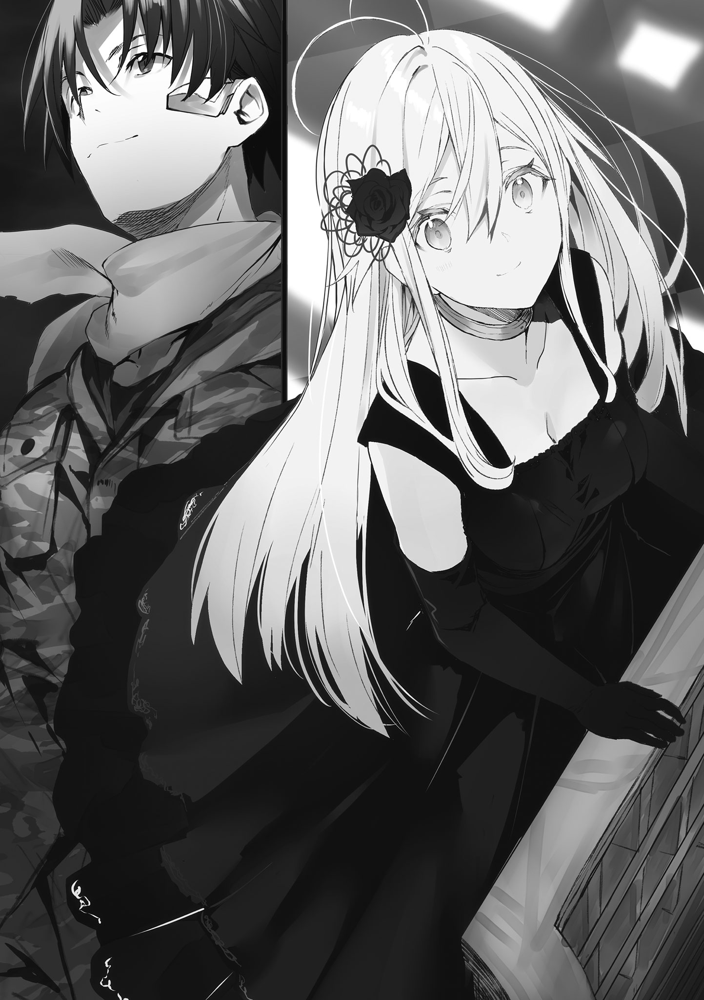
夜空は暗く大気は澄み、一心に見上げてくれる人のいる、戦場の片隅の花火は、きっと。
わたしも一緒に見たかった、という言葉を、レーナは辛うじて吞み込んだ。それは言ってはいけない言葉だ。レーナ自身は望めばいつでも行き来が出来る。けれどシン達は望んで戦場にいるわけではなく、また彼らを連れて帰ることも出来ない。一緒、なんてほんの一時の錯覚にすぎないのだから、そんなことは望んではいけない。
代わりに言った。
「いつか、みんなで第一区の花火も見ましょう。きっと笑っちゃいますよ」
シンは苦笑したらしかった。
『そんなにひどかった覚えはありませんが』
「じゃあ、確かめてみてください。戦争が終わったら、退役したら、みんなで一緒に」
思い出して声が沈んだ。ダイヤ。このところ続けざまの、六名の死者たちも。
「イルマ少尉達にも、見てもらいたかったですけれど。......すみません。また、タイミングが悪かったですね」
『いえ。弔砲があるのは初めてですし、ダイヤ達は喜んでいると思いますよ。あいつらは湿っぽいのは嫌いでしたから』
キノ達は単純に楽しんでるようですが、と、少し笑う気配。彼自身何も感じていないわけではないようで、伝わってくる感情の振れ幅がいつもより少し大きい。
『それに、アンジュが先程ようやく泣けましたから。彼女はいつまでも一人で抱え込んでしまう性質なので、その意味でもありがたかったです』
「......」
親しげだった、長い付き合いを感じさせた、ダイヤとアンジュ。
「エマ准尉は、忘れないのでしょうね......」
『それは皆同じです。少佐も忘れずにいてくれたでしょう。兄のことを』
少し逡巡する間があって、結局シンは続けた。
『嬉しかったですよ。......おれは、兄さんを覚えてはいられませんでしたから』
かすかに揺らいだその言葉を、レーナは少し、信じられない思いで聞く。
こんな風に、シンが己の心情を吐露するのは初めてだった。
「......ノウゼン大尉、」
『少佐はおれ達のことも、忘れないでいてくれますか？』
シンは多分、冗談めかして言おうとしたのだろう。実際口調も声の響きも、軽口以上のものではなかった。
けれどいつもより少しだけ。ほんの少しだけ高い同調率に設定された知覚同調が。
その言葉の奥底の切々たる願いを、レーナに伝えてしまった。
忘れないでいてくれますか。
おれ達が死んだら、ほんの少しの間でも。
レーナは緩く、瞑目する。
どれほど強くても。数多の戦場を生還しても。
それでもなお、彼らにとって死は、こんなにも身近で。
「あたりまえです。......でも」
息をつき、きっぱりと告げた。それが自分の──スピアヘッド戦隊ハンドラー、ヴラディレーナ・ミリーゼの、責務だった。
「その前に、死なせません。もうこれ以上、誰も」
けれど、一方で。
レーナが幾度兵員補充の要請をしても、何度陳情を繰り返しても。
スピアヘッド戦隊には、一人の補充も回ってこなかった。
†
その日の出撃で、四人が死んだ。
ごくありふれた〈レギオン〉の前進陣地への襲撃任務だった。本隊の進軍のための足掛かりの拠点。ただし実際にはそれは囮で、一見無防備なその周りには待ち伏せが潜んでいた。
埋伏の位置も兵数もいつものとおりあらかじめシンが摑んで、待伏せの正面を迂回して側面から急襲する手はずだった。
阻電攪乱型の展開は何故か無く、レーナが見ていたレーダースクリーンにもその他に敵影はなかったが、会敵直前、シンを含めた数人が何かを気にした。嫌な感じだな、というライデンの曖昧な呟きはおそらくその数名全員が共通して覚えた感覚で、本当はそれこそが、彼らをこれまで生き残らせてきた最大の理由だったのだろう。
亡霊の声を聞く索敵能力に勝るとも劣らぬ、戦士の嗅覚、というものが。
それは突如、高空から斜めに、レーダーに警告が点ると同時に着弾した。
当初の警戒が頭の隅に残っていて、いかなる事態にも即応できる構えを無意識にとっていた者が生き残った。回避の遅れた〈グリフィン〉が直撃を喰らって消し飛び、運悪く弾着位置に近かった〈ファーヴニル〉が破片にやられて沈黙。それ以外の全機が猛烈な衝撃波に吹っ飛ばされて転倒するか体勢を崩し、そこに第二、第三の着弾と強烈な爆轟が襲い掛かる。
支援コンピュータの弾きだした砲の発射位置は東北東一二〇キロ。これまで観測されたことのない超長距離砲の砲撃だ。しかも弾速が異様に速い。推定初速は秒速四〇〇〇メートル超。火砲の限界値を軽く超えている。
待伏せさえもスピアヘッド戦隊を砲撃域に確実に拘置するための捨て駒。側面からの急襲をも計算に入れた、これまでの〈レギオン〉のそれとは比べ物にならぬ精緻で冷酷な戦術だった。
弾着確認の前進観測機をいち早くシンが特定して撃破していなかったら、新型ゆえの不具合か十度ほどの砲撃で唐突に長距離砲が沈黙していなかったら、いかな精鋭の彼らといえど、撤退も叶わず全滅していたかもしれない。
追撃も振り切り、最終的な損耗は四機。チセとキノ、トーマ、クロトが戦死。
残りの〈ジャガーノート〉は、わずかに九機。
定員の半分さえついに割った。一桁まで減ってしまった、スピアヘッド戦隊の隊員達──。
「い......」
慄然と、レーナは言葉を紡ぐ。
口が渇く。不吉な想像と何か、予感に動悸がした。急き込むように言い募った。
「今すぐに補充を、決定させます。今日にもすぐに。こんな、おかしい──！」
スピアヘッド戦隊は、随分前から機能不全に陥っている。
兵数は足りず、そのために休養も充分にとれず、周辺の部隊に応援や出撃代行を要請して辛うじて防衛線を維持しているのが現状だ。それは上層部も了解しているだろうに何の手も打たない。応援や出撃代行の要請はすんなり通るのに、欠員補充の要求だけが何故か一切通らない。縁故を恃む卑劣を忍んでカールシュタールにも頭を下げて、仮にも准将の彼を通してもらってそれでも一人の補充も回ってこない。
短く、シンが口を開いた。
『少佐』
「准将にもう一度話して、口を利いてもらいます。足りなければどんな手を使っても──」
『ミリーゼ少佐』
再度強く呼ばれて、レーナは口を噤む。
『総員。かまわないな』
『......ああ』
代表してライデンが首肯する。他の全員の、重い沈黙。
「......、何を......？」
『少佐。もういいです。あなたが何をしても、もうどうにもならない』
「ノウゼン大尉。それはどういう、」
『補充は来ない。ただ一人も、決して』
「......え、」
そして、シンは静かにそれを告げた。
誰もが知りながら、レーナには告げなかった、その真実を。
『おれたちは全滅します。この部隊は、そのための処刑場です』
間章 首のない騎士Ⅲ
物心つく前から母や兄や周りの人の、言葉ではない声が聞こえることがあって、それらはいつも、ただひたすらに優しいものだった。
だからあの時、甘えてはいけない相手に甘えてしまった。それが全ての元凶だったのだろう。
従軍してすぐに父は戦死し、ほどなく母も戦場に行って、それからシンは兄と二人、強制収容所の片隅に建つ教会でその神父に育てられた。
シンの入れられた強制収容所はそこにあった村を潰して作られていて、その村の神父だった。月白種だったがエイティシックスの強制収容に強く反対し、八五区内への避難も教会からの立ち退きも拒否して、強制収容所の鉄条網の中に一人、居残っていた。
白系種だったからエイティシックスからは避けられていたけれど、シンの両親とは親しかった。二人が戦場に行ってからは、残された兄弟を引き取って育ててくれた。
そうでなければ、あるいは兄もシンも生きてはいられなかったかもしれない。強制収容を決めた白系種や戦争を始めた帝国や、不条理な運命そのものへの憤りと不満に満ちる収容所で、帝国貴種の血の濃い二人は、神父の庇護下になければ容易くその捌け口とされていた。
シンが八つになる、少し前だった。母が戦死したと、知らせを受けた夜だった。
両親の戦死を、その時シンはまだよく飲みこめていなかった。
遠すぎて話はできないけれど確かに感じ取れていた父や母の『声』が突然聞こえなくなって、ある日紙切れが一枚届く。それが二人の死だと言われても、それはひどく実感に乏しい言葉だった。末期に立ち会うのでも亡骸と対面するのでもない、ただ言葉だけのその『死』は、まだ死というものを知らない幼い子供に、その途方もない喪失や取り返しのつかなさを実感させるには到底足りなかった。
嘆くよりも悲しむよりも、困惑が先に立った。もう二度と会えない、帰ってこないのだと教えられても、それがどうしてなのか理解できなかった。
神父さまとお兄ちゃんの言うことを聞いて、いい子でね。出立の朝、そう笑って頭を撫でてくれた母が、どうしてもう帰ってこないのかが、いくら考えてもどうしてもわからなくて。
だから、兄に聞こうと思った。
十歳離れた兄のレイは、何でもできて、何でも知っていた。何からだって守ってくれて、何よりも大切にしてくれた。
だからこれも、聞いたらきっと教えてくれる。
与えられた部屋の、明かりをつけない月闇の中にレイは立ち尽くしていた。扉に背を向けた兄の大きな背に、シンはそっと声をかけた。
「お兄ちゃん」
緩慢に、レイが振り返る。黒い双眸は涙に赤く、伝わる思惟は悲憤と痛嘆が吹きすさぶようで、その嵐のような激情と、裏腹に見たこともない虚ろな眼差しが、少しだけ怖かった。
「お兄ちゃん。ねえ、お母さんは？」
黒い瞳が、軋んだ気がした。
目の当たりにしていながら、その悲嘆が聞こえていながら、シンは続けた。続けてしまった。
「もう帰ってこないの？ どうして？ ......どうして、死んじゃったの？」
ふつりと何かが切れるような、沈黙が落ちた。
茫洋と凍りついたようだった黒瞳が罅割れ、マグマのような狂熱が覗いたと見えた次の瞬間、おそろしい力で首を摑まれて木の床に叩きつけられた。
「かっ......！」
肺腑が潰れ、絞り出された空気は首を締め上げる仮借ない握力に邪魔されて入ってこない。酸欠であっという間に視界が暗くなった。膂力と体重を総動員した、縊られた首がそのまま握り潰されて千切れてしまいそうな凄まじい圧迫。
至近距離で見下ろすレイの黒い瞳。
激昂と憎悪に、ぎらぎら光る。
「──お前のせいだ」
食いしばった歯の隙間から、唸るような声が落ちた。
「お前がいたから、母さんは戦場に行った。母さんが死んだのはお前のせいだ。お前が母さんを殺したんだ！」
お前さえいなければ。
霹靂のような怒号をも圧して、兄の『声』が聞こえる。業火のような、兇刃のような、思惟そのものであるが故に一切の糊塗のない、剝き出しの。
お前なんかいなければよかった。お前さえ生まれてこなければ。今からだっていい。この世界から消えてしまえ。
死ね。
「罪業。お前の名だ。相応しいじゃないか。お前のせいだ。何もかも全て、お前のせいだ！ 母さんが死んだのもおれがこれから死ぬのも、何もかも全部お前の罪業だ！」
おそろしかった。兄の怒号が。兄の『声』が。
けれど身動きも出来ず、『声』からは耳を塞ぐことも出来なくて。
だからシンはそこへ逃げた。心の底の、魂の底の更に奥、両親が消えていった遥かな最奥へ。
ふつりと意識は途絶えて、全てが暗転して散逸した。
目が覚めると自分の部屋のベッドの中で、神父一人が傍にいた。もう大丈夫だよ、と言われて、兄はそこにいなかった。教会の中にはいるようだけれど、一度として会えなかった。
その間にレイは従軍の手続きを取り、数日後に教会を出て行った。
神父に連れられ、その背に半ば隠されるようにして見送りに出た。
一瞥も与えず、一言たりとかけてくれない兄の横顔はまだ怒っているようで、声をかけたらまた怒らせてしまいそうで怖くて、ついに最後まで、何も言えなかった。
それまでは常に感じられていた兄の『声』はそれから全く聞こえなくなり、幾度か勇気を振り絞ってかけてみた呼びかけにも、兄が応じてくれることはついになかった。赦してくれていないのだと、......赦されることはないのだと、やがて悟らざるを得なかった。
首の痣はついた時のままいつまでも薄くなりも消えもせず、常に遠く、奇妙な声が聞こえると気づいたのもその頃だった。
何を言っているのかは聞き取れない。ただ、何を言おうとしているのかはわかった。
それはやがて、人の声が混じるようになってからもそうだった。壊れたレコードみたいに繰り返す言葉とは別に、それらは皆、同じことを求めて嘆いていた。
神父にも他の誰にも聞こえないそれが何の声なのかは、自然と理解できた。
多分あの時、自分は兄に殺された。殺されて、死んだのだ。
死んでいるのに消えもしないで残っているから、同じ亡霊の声が聞こえる。
ある日、常に耳の奥に響く亡霊たちの嘆きの中に、兄の声を聞いた。
兄が死んだと、彼を呼び続けるその遥か遠い声に悟り。
その日のうちに、シンは従軍の手続きを取った。
第六章 せめて人間たらんと
「な──」
一瞬、シンの言葉を把握しかねた。
全滅する？ そのための処刑場？
「何を、言って......」
唐突に、レーナは気づく。
六年前、出会ったレイはエイティシックスで、プロセッサーだった。
エイティシックスは本人と家族全員の市民権の復活を見返りに、絶望的な戦場に赴く。
それならば何故、レイの弟であるシンが──レイの従軍によって共和国市民に戻ったはずのシンが、今、プロセッサーとして、エイティシックスとして戦場にいる？
他のプロセッサーだってそうだ。毎年何万人もの新兵が前線に送られて、けれどそれなら、その何万人もの彼らの親や年長の兄弟たちは揃いも揃って一体今まで何をしていたのだ？
「まさか──......！」
『ああ。そのまさかだ。白ブタどもは、エイティシックスに市民権をくれてやるつもりなんざ、最初っからねぇんだよ』
『それエサにして徴兵して、使い潰すだけ使い潰しておいてね。ほんっとブタ。最悪だよね』
咄嗟にレーナは首を振った。およそ彼女の倫理では、それは到底受け入れがたい話だった。
共和国が。生まれ育った祖国が。いくらなんでも、そこまで。
「そんな。そんなことがあるわけが──！」
セオが小さく嘆息した。糾弾ではなく、苦く、どこか気遣いの響きのある声だった。
『別にあんたを責めるわけじゃないけどさ。......だってあんた、開戦からこれまで、八五区内でエイティシックスを見たことが一度でもある？』
「......あ──！」
市民権を見返りに、エイティシックスに課される従軍期間は五年。仮に本人が任期満了前に戦死してしまっても、家族への市民権授与は保障される。
けれど、開戦から九年。少なくともその間の戦死者の家族は市民権を取り戻しているはずなのに、その彼らの姿を一人だって、本当に一人だって見かけたことがない。レーナは第一区から出たことはなくて第一区は元々有色種の住民は極端に少なかったけれど、それにしたって皆無ということなどありえないだろうに──！
自分のおめでたさに吐き気がした。
手がかりならこれまで幾らでもあった。兄弟である、レイとシン。収容当時はまだほんの子供で、親や兄弟がいたはずのプロセッサー達。白系種しかいない第一区。それら全て見過ごして、この期に及んで共和国の無謬性を、馬鹿みたいに信じ込んでいた。
『プロセッサーの大半は任期満了までに戦死するから、市民権云々の話なんざ反古にしてもそれは問題ねぇ。問題なのは俺達みたいな、死ななきゃおかしい戦場で何年も生き残っちまう〝号持ち〟だ。生き残った分頭も回るし、他のエイティシックスからすりゃ英雄だ。反乱の火種になっても困ると、そう思ったんだろ』
ライデンの声は、静かだった。
共和国への怒りを秘めて、けれど、もう今更怒り狂うことでもないというような。
『だから〝号持ち〟は各戦線の激戦区を転戦させられる。そこで戦死することを期待される。実際いくら〝号持ち〟でも大概の奴はそれで死ぬ。それでもなお生き残っちまうような始末に負えない命根性汚い奴が、最後に行き着く場所がここだ。各戦線の第一区第一防衛戦隊。ここが最終処分場だ。処分候補の〝号持ち〟を一定数まとめて放り込んで、全滅するまで戦わせるのがこの隊の目的だ。補充なんか来ない。俺達が全滅してようやく、次の処分待ちが送られてくる。──ここが俺達の最後の任地だ。俺達は全員、ここで死ぬ』
目眩のするような倒錯だった。
守らせるためではなく、死なせるために戦わせる。
それは最早、軍役の強制ですらない。外敵を利用した虐殺だ。
「で──でも、」
一縷の望みに縋るように、レーナは言った。
「それでももし、生き残ったら......」
『あァ。そういう往生際をとことん弁えねえ奴もいる。......そういう奴も処分するのに、ここでの任期の最後に与えられるのが成功率・生存率ゼロの特別偵察任務だ。そこまでやられて帰ってきた奴は流石にいねぇ。白ブタどもにしてみりゃゴミ処理完了、万々歳ってわけだ』
「っ......」
防衛のために絶死の戦場に対価も無く駆り出し、長生きすれば邪魔だとばかり戦死を期してさらに戦わせ、死なせるための部隊に送り込んだ挙句に、──それでも必死に生き残った彼らに、最後の最後で露骨に死ねと命じるというのか。
涙が浮いた。怒りにだ。
この国は。どこまで。どこまでも。
腐り果てて。
暇だ暇だと事あるごとに口にした、セオやライデンを思い出した。
任期満了のその後を聞かれて、考えたこともないと応じたシンを思い出した。
彼らには、なかったから。未来のために投資するべき時間も。望むべき未来も。
あるのはただ、いつ執行されるかはわからないがその日までには必ず死ぬという、とうの昔にサインの済んだ死刑執行命令だけで。
「皆さんは、それを知って......？」
『ええ。......ごめんなさい。シン君もライデン君も、私達も少佐にはどうしても言えなくて』
「いつ、から......？」
自分の声が軋むようだ。対照的に不自然なほどそっけなく、クレナが応じる。
『最初からよ。だってあたしのお姉ちゃんも、セオのパパとママも、シンの家族も、戦場に行った人は誰も彼もみんな帰ってこなくて、あたしたちも収容所から出られなんかしなかった。白ブタが約束を守ることなんかないって、......みんな最初からわかってた』
「それがわかっていて！ なぜ戦ったのですか!? 逃げようと、......それこそ、共和国に復讐しようとは思わなかったのですか!?」
悲鳴のようなレーナの問いに、ライデンは一度目を閉じて薄く苦笑する。
「逃げるとこなんざどこにもねぇよ。前は〈レギオン〉の大群、後ろにゃ地雷原と迎撃砲が針の山だ。反乱もまぁ、悪かねえが......それもやるには、エイティシックスはもう減りすぎた」
あるいは両親達の代なら可能だったかもしれない。けれど彼らは共和国の打倒などよりも家族に人間らしい暮らしを取り戻すことを望んで戦地に赴いた。それに彼らが戦わなければ、真っ先に死ぬのはグラン・ミュールの外の強制収容所に閉じ込められた彼らの家族だ。共和国の甘言に縋って戦い続けるより他に、選択肢はなかった。
両親達が死んで、市民権など得られぬと悟った兄や姉の代は、せめて共和国市民たるを自らに証明しようと戦った。祖国によって踏みにじられた自己存在証明と矜持を、市民の義務である祖国防衛に殉じることで取り戻すため。防衛の義務を放棄した白ブタなどではなく自分達こそが真に共和国市民たると、ただ自分一人に証立てるために。
ライデン達には、それさえもない。
守るべき家族はとうに亡く、また強制収容所に移送された時、あるいは小さな箱庭に匿われた時、彼らはあまりにも幼すぎた。
街を自由に歩いた記憶も人間として扱われた経験も遥か遠く、知っているのは鉄条網と地雷原に囲いこまれた人の形の家畜の生活、そしてそれを作り上げた共和国という迫害者だけだ。自由と平等、博愛と正義と高潔を国是とする共和国など、彼らは知らない。その市民であったという自覚も誇りも、持つ前に彼らは家畜に落とされた。
共和国市民という意識など、ライデン達にはない。
彼らはエイティシックス、──戦場に生き戦場に果てる、敵ばかりに囲まれたこの戦場を故国に、戦死までの日を生きぬく民。それだけが彼らの自己存在証明で矜持だ。
サンマグノリア共和国とかいう白ブタの棲む異国など、本当は彼らには知ったことではない。
『なら、どうして......』
だからそれも、答えてやる義理はない。
にも関わらず答える気になったのは、怒鳴られても身も凍る亡者の呻きにさらされても、しぶとく食らいついてくるこの少女の馬鹿さ加減に、いい加減根負けしたからかもしれない。
仲間たちの沈黙に、答えを拒む気配がないのを確認してから口を開く。
「俺は十二まで、第九区の白系種のババアに匿われてた」
『......？ 何を......』
「シンを育てたのは立ち退き拒否して強制収容所に居残った白系種の神父で、セオの隊長の話は前にセオがしたな。白ブタどものクズっぷりは全員が知ってて、クレナはその中でも最悪のクズを知ってる。アンジュとシンは、同じようにクズのエイティシックスを見た」
人間の見るに堪えない下劣と、眩しいほどの高潔を、そのどちらか、あるいは両方を知った。
「それを踏まえて、俺達は決めた。簡単なことだ。その何方でありたいかってな」
狭いコクピットの中で何とか体を伸ばして、天を仰いだ。
あの老婆に教えられた、神とやらに向ける祈りはとうに忘れてしまったが、土の道にうち伏して身も世も無く泣いていた彼女の姿は今も鮮明に覚えている。
「復讐ってのは、実のところ難しい話じゃねぇ。戦わなけりゃそれでいい。〈レギオン〉どもを素通しにしてやりゃ、......まァ、俺達も死ぬが、共和国もそれで終わりだ。ブタどもが皆殺しになってざまあねぇって、思わなくもねぇさ」
強制収容所の同胞も道連れではあるが、彼らもどうせ数年後には死ぬ身だ。仕方がないと見限ることも、......本当は、プロセッサー達にはそう難しいことではない。
「けどまあ、わざわざ死なせることはねぇって白系種も中にはいるし、大体そこまでやってやったって、結局は何にもならねえんだよな」
『......』
レーナは理解できないようだった。あなた方の気は済むだろうと、そう言いたいのが如実に伝わる沈黙。思わず失笑した。この少女は本当に、お育ちが良くて馬鹿だ。復讐なんてこれまで、望んだことも考えたことも無いのだろう。
憎い相手をただ殺せばそれですむなんて、復讐は、憎悪は、そんなに軽いものではない。
「手前ェのしたことを心底思い知って、後悔して這いつくばって赦してくれって泣き喚いてんのをぶっ殺すんでもなきゃ、到底復讐にはならねえ。......けど、これだけ今まで恥知らずな真似ばっかりしてきやがった白ブタどもが、今更反乱だの皆殺しだの程度で反省なんかするわけもねえだろ。手前ェの無能と無策は棚に上げて、他の誰かの無能と無策を罵りながら悲劇の主人公気取って、被害者面してくたばるだけだ。......そんなクズどもの自己陶酔のために、誰が同じものに成り下がってやるものかよ」
知らず、吐き捨てる口調になった。
何が許せないといって、それこそが一番、彼らが自分自身に赦せないことだった。
己の良心に従い全霊で迫害に抗った老婆を、嗤う兵士。
戦争という現実から目を閉じて耳を塞いで、要塞壁の中という脆い夢に閉じこもる市民。
己は義務も果たさないくせに他人の権利は喜んで剝ぎ取り、それを恥じもせずに我らのみが正しく高尚たると本気で謳う、自分の言葉と行動の絶望的な乖離も理解できない白ブタども。
誰が、そんな奴らと同じように。
「クズにクズな真似をされたからって、同じ真似で返したら同じクズだ。ここで〈レギオン〉と戦って死ぬか、諦めて死ぬかしか道がねえなら、死ぬ時まで戦いきって生き抜いてやる。諦めも踏み外しもしてやるものか。それが俺達の戦う理由で、──存在証明だ。......その結果として白ブタどもを守っちまうのは業腹だが、まあ、構わねえさ」
彼らはエイティシックス。戦場に捨てられた、戦場の民。
力及ばず戦死するその瞬間まで戦い抜くことが、己が身一つ恃みに全霊を以て生ききることが、彼らの誇りだ。
ハンドラーの少女が、唇を嚙む。微かに鉄臭く、自分の物ではない血の味。
『その果てに、......死ぬしかないとわかっていても、ですか』
どうあっても復讐に来てほしいとでもいうような、そんな声音だった。ライデンは苦笑する。
「明日死ぬからって今日首括る間抜けがいるかよ。死刑台に登るのは決まってても、登り方は選べるだろって、そういう話だ。俺達は選んで、決めた。あとはその通り、生きのびるだけだ」
その果ての無意味で無惨な死を、不可避のものと見据えるがゆえに。
がらがらに空いた格納庫の、開け放したシャッターの向こうに人影と〈スカベンジャー〉の巨体を見とめてライデンは足を止める。秋口の冴えた夜気に月影は青く、星辰は鋭利に煌めく暗黒の天球。誰かが死んだ日の夜であろうと月も星も何一つ変わらず玲瓏と輝く、その無情。
世界は人間のためになど美しくない。この世界はどこまでも、人間になど無関心だ。
「──いいよ、仕方ない。今日もありがとう」
「......ぴ」
何やら悄然と肩を落として（比喩ではなく本当に前脚側が下がっているのだ）去っていくファイドを見送ってから、それと別れて戻ってくるシンに声をかける。
「キノ達のか」
「ああ。チセの機体片が、どうしても見つからなかったらしい。代替品を探すことになるのは久しぶりだな」
「チセが作ってた飛行機の模型ばらしたのでいいんじゃねえか。主翼のあたりとか丁度いいだろ。......しかし、破片も見つからねえか。あんな砲撃喰らっちゃひとたまりもねえな」
ファイドも長いこと今日の作戦域を探し回ってくれたのだろう。戦死者の名をアルミの墓標に葬る死神に従ううち覚えた、本来の役目にはないファイドだけの最優先探索対象。
それを覚えたのがいつだったのか、シンから聞いてライデンは知っている。その時初めてファイドが切り取ったパーソナルマークの破片も、まだ名前は刻まれないまま他の墓標達と同様〈アンダーテイカー〉のコクピットに収められている。
長剣を掲げた、首のない骸骨の騎士の紋章。どこかの廃墟でその遺骸と機体の残骸を見つけてから、持つ物だけシャベルに変えてシンが継いだ、シンの兄のパーソナルマークだ。
「別に気にしてねえだろうが、一応言っとくぜ。お前のせいじゃねえからな」
シンの異能は、どこにいるかはわかっても何がいるかはわからない。配置や兵数から機種の類推はある程度可能だが、はるか後方の集団に紛れる一機を、それも全くの新型の存在を推測しろというのはいくらなんでも無理な話だ。
シンはちらりとライデンを見やって、無言で肩をすくめた。本当に気にしていないようだが、それでいいとライデンは思う。覚悟を決めて、全霊を尽くした果ての死だ。その責を負えるのは結局は、死んだ当の本人だけだ。
透徹と紅い瞳が昼間の戦域の空に向くのに、同じ方を見やった。あの、昼間の超長距離砲。
「......次は直接基地狙ってくるかと思ったが、意外とこねえな」
「重砲の役割は面制圧か固定目標の破壊だ。機甲兵器を狙い撃つようにはできてないし、一個戦隊如きに使うものでもない。あれも都市か要塞が本来の目標だろう。試射ついでにこちらに向けてみた、くらいじゃないか」
ライデンは低く嗤った。
「ついで、で四人か。つくづくやってられねえな」
「完成すれば四人どころか共和国が滅ぶ。おれたちにはどうでもいいが、......少佐はそうもいかないだろうな。対策がとれればいいけど」
淡々と言うのに、ライデンは内心ふぅんと思う。本人は気づいていないようだが。
「......何？」
「べぇつに」
ハンドラーの身を案じたことなんて、これまで一度だってなかったのが。
「......いずれにせよ、砲撃にあたり前進観測機が必要なのは長距離砲兵型と変わらない。今のところ砲自体も沈黙したままだ」
「わかるのか？」
「声は覚えた。どちらか動けば次はわかるし、......おそらくもう撃ってこない」
「......？」
怪訝にライデンはシンを見返す。シンは遠い戦場の空に目を向けたまま、微かに目を細めた。
「見つかった。多分、前進観測の斥候型の光学センサを共有していたんだと思う」
「っ......！ 兄貴か......！」
凝然と息を吞んだ。知っている。直接見たことはないが、その指揮する〈レギオン〉の軍勢とは何度かやり合った。恐ろしく精緻で冷徹で、狡猾な戦術を駆使する〈羊飼い〉だ。
おそらくそのいる方角に目を据えたまま、シンは薄く笑む。
畏れと蛮勇とを等分に混ぜ合わせたような、死地に挑む戦鬼の笑み。武者震いのように細身の体が震え、無意識に抑え込むように両腕で己の身を抱いた。
「戦区の奥にいるのは気づいてたけど、向こうもおれに気づいた。次からは取りにくる。砲撃で吹き飛ばすような、生温い真似はしてこない」
常には沈着で冷徹な同胞の、見る影もない狂気じみた感情の発露に、ライデンは底冷えを覚えて険しく顔を顰める。
シンは、兄の首を探している。かつて自分を殺した兄の首。東部戦線の何処かの廃墟で死んで持ち去られた兄の、最期の声を宿す〈レギオン〉を。
死神が嗤う。氷刃のように。狂気のように。獲物と定めた相手の息の根を確実に止めるのみを至上とする、戦の苛烈に毀れ研がれ狂いきった古刀の冷たい獰猛さで。
「おれには最良の展開だが、おまえ達には貧乏くじだな。......どうする？ 明日死ぬ前に、今日首を吊っておくか？」
ライデンもまた、獰猛に笑った。同じ獰猛でもこちらは餓狼の、己が生きのびるため何をも食い殺す獣の、狂おしくも激しい生への執着だった。
格納庫の奥のカウントダウンが目に入る。
『退役まで残り一二九日!! スピアヘッド戦隊にクソ栄光あれ!!』
退役は即ち、彼らの死だ。底抜けに陽気なそれは、死刑執行日へのカウントダウンだ。
止まってしまったカウントダウンの、本当の残り日数は、三二日。それがたとえ零になっても、その最後の一日を死ぬ瞬間まで戦い抜くと決めた。
「冗談じゃねえ。......最後までついてくぜ、我らが〝死神〟」
†
「はあ、それはまた......うちの国らしいというかなんというか」
話を聞いたアネットは、流石に呆れ果てたという顔をした。
余人の耳のある場所ではまずいからと、人払いをしてもらった彼女の研究室だ。お揃いの白と黒のウサギのマグカップのコーヒーと、半分紫で半分ピンクの変な色の焼き菓子。
「アネットお願い、力を貸して。こんなこと......どうにかして止めないと」
アネットは興醒めしたような顔のまま、焼き菓子をつまんでいる。
白銀の瞳がきろりと向いた。
「具体的にどうすんの」
千年も生きて世界の全てに厭き果てた魔女のような、乾いた、醒めた眼差しだった。
「テレビに出て演説する？ 偉い人に直談判する？ 意味ないってわかってるよね。今更理想に満ちた感動的なお言葉くらいでみんなが改心するなら、そもそも最初からこんなことになってないって、それくらいあんただってわかるでしょ」
「それは......」
「ねえもういいでしょ。どうにもできないの。何やったって無駄なの。だからもう、」
「やめてアネット」
聞いていられず遮った。大事な友人だ。それでも、その言葉だけは許せない。
「人の命がかかっているの。わかっているでしょう。......何もしない言い訳に悪人ぶるのは、いい加減にして」
「いい加減にするのはそっちよ！」
突然アネットは立ち上がった。咄嗟にレーナは息を吞んだ。それほどの剣幕だった。
「やめてよ。もうほんと、いい加減にしてよ。何にもできないの。あたし達にはあの人達を助けてあげる力なんて何一つないの！」
「アネット......？」
「ともだちだったの」
怒号から一転──酷く、静かな声でアネットは言った。
取り返しがつかなくなって途方に暮れた女の子のような、細い、力ない声だった。
「隣の家の子だった。父さんとその子のお父さんは同じ大学の研究者で、友達で、あたしもその子とはたくさん遊んだ。その子のお母さんの家系は代々不思議な力があって、お母さんとその子と年の離れたお兄さんは、離れていてもお互いの気持ちが少しだけわかった」
父は脳科学者で、人と人とがわかりあう時の脳の働きの研究をしていた。
その子の父親は人工知能の研究者で、人と友達になれる人工知能を作ろうとしていた。
だから研究といったって、危ないことは誰にも一つもしなかった。玩具みたいなセンサをつけて別の部屋のもう一人と話をする、ゲームみたいな他愛もない実験で、ずるいわたしもと割り込んでアネットも何度もやらせてもらった。再現実験の被験者は父の研究室の学生から希望者を募って、単位と母のお茶菓子目当てにほとんど全員が顔をのぞかせていた。
成果なんてほとんど出なかったけれど、楽しかった。
「戦争が始まって、全部終わった」
入ったばかりの初等学校に、その頃すでにその子は来なくなっていた。それほど、有色種を取り巻く情勢は悪化していた。
こいつ汚い色つきが友達なんだぜと、学校でいじめられてアネットは悔しかった。
学校から帰って、遊ぼうと待っていてくれたその子に八つ当たりをした。
喧嘩になって、腹立たしくてたまらなくて、ついに、汚い色つきと言ってしまった。
その子は傷ついた顔はしなかった。ただ、何を言われたのかわからないという、困惑した目でアネットを見た。それでも決定的な亀裂が自分とその子の間には入ってしまって、それを入れたのが自分だという事実にアネットは戦いた。
それが怖かったから。だから。
友人一家だけでも家に匿おうかと相談を繰り返していた両親に。友人への情と露見した時の家族への危険を秤にかけて苦悩していた父に、問われてアネットは言ってしまった。
本当は最後に背中を押してほしかったのだろう父に、逆の道を示してしまった。
あんな子知らない。あの子なんかのために、危ないのは嫌。
その子とその子の家族が強制収容所に連れていかれたのは、その翌日のことだった。
どうしようもなかったのだと、最初からどうせ何もできなかったのだと、思うしかなかった。
それなのに。
痙攣するようにアネットは笑う。そうであるべきなのに、この友人は、どこまで私に。
「ねえレーナ。あんたはそうやって聖女様みたいに振舞ってるけど、今更あんただって同罪よ。......そのレイドデバイス、何人のエイティシックスを殺してると思う？」
「まさか」
人体実験──............。
「言葉を伝えるものなんだから、動物じゃ実験にならないでしょ。エイティシックスは人間じゃないって言ったくせに、そういう時だけほんと都合がいいのよね。......すぐに結果を出さなきゃいけないからって、被験者の安全度外視で研究は続いた。父さんはその指揮を執らされた」
当時父親は何もアネットに話さなかったけれど、残された記録は全て目を通した。
過負荷で脳が焼き切れて、自我の境界が崩壊して、苦しんで死んだ者ばかりだった。
大人は戦闘と労役に使うからと、子供ばかりが使われていた。
エイティシックスは番号で管理され、名前は記録されていない。だから。
遠い何処かの収容所の実験室で一番悲惨な死に方をした、あの子と同い年の被験者の少年が、本当にあの子でないかどうかなんて、父にも誰にもわからなかった。
「事故じゃなかった。父さんは、自殺したの」
友人を見捨て、大勢苦しませて死なせた自分は、その誰よりも苦しみ抜いて死ぬべきだ。
そう、繰り返し言っていた父だ。誤って設定したなんて、そんなわけはなかった。
それならあの子を見捨てた自分も同じ罪を負うべきだと、思ってアネットは研究を継いだ。
ハンドラーが自殺してレイドデバイスの調査依頼が来て、プロセッサーの一人が原因みたいに言われていると知った時、ふと考えた。
調査に必要だから連れてこいと、言ってあげたらどうだろうか。
貴重なサンプルだとか言って、そのまま終戦まで留め置いてしまえばいい。軟禁する形になってしまうけれど、少なくともその人は生きのびられる。たった一人だけでも助けられる。
そこまで考えて、自分の思考に慄然となった。
だってあの時、幼馴染のあの子だって、助けてあげなかったのに。
輸送部のクズどもが自分の仕事だというのに断ったと聞いて、むしろほっとした。ほら、やっぱり何もできない。あたしには誰も助けられない。
「でも、それはあんただって同じでしょ」
嗤う。未だそんなことにも思い至らない、人間の悪意の底知れなさをまるで知らない、善良で愚かな親友に。
「何も出来ないどころじゃない、──あんたが余計なことして長生きさせたから、そいつらは『死ね』って命令されるんでしょ？ 適当に扱われてとっとと死んでれば言われなくてすんだことを、あんたのせいで言われるんじゃない！」
ひゅっとレーナが息を吞んだ。みるみる青褪めていく繊美な面が痛快で、同時に酷く打ちのめされた。
あたしは。
また。
マグカップを取り上げて、屑籠に投げ落とした。いつだったか、一緒に買ったマグカップ。お揃いにしようよ、と一緒に選んで包んでもらって。最初のコーヒーもこの部屋で淹れて。
脆い磁器の砕け散る、悲鳴のような音がした。
「大嫌いよ、レーナ。......二度と顔を見せないで」
†
それから二度、迎撃任務がスピアヘッド戦隊に下され、その二度で三人が死んだ。
そのどちらも、〈レギオン〉達の戦術は明らかにそれまでと違った。あの超長距離砲型を投入してきた時と同じ、精密で冷徹で狡猾な、高度な戦術。〈羊飼い〉がいるとシンは言った。超長距離砲の投入からこれまで、最前線には出てこないが後方からその指揮を執っていると。
その間、レーナに出来たことは何もなかった。砲弾一発の援護も、処刑を撤回することも。
そして、ついにその通達は届いた。
「〈レギオン〉支配域最奥への、長期偵察任務──!?」
情報端末に表示された通達のあまりの内容に、レーナは呻く。
参加戦力は、本任務の発動時に健在な第一戦区第一防衛戦隊の全〈ジャガーノート〉。
偵察目標は、最終的に前進できた地点。
任務期間は無制限。この間、後退した場合は脱走行為とみなし、即時処刑する。
これに伴い、知覚同調対象登録、友軍機登録、共和国軍籍の全てを抹消。
偵察任務に携行する物資は、各一月分程度。
なお、本作戦への他部隊及び本部からの支援はその一切を認めない。
......無茶苦茶だ。
こんなもの偵察でも作戦でもない。死ぬまで意味も無く敵地を前進しろと、そういう命令だ。無駄死にしろと直截書いていないだけ。任務としての体裁さえ繕う気がない。
一月どころか、数日だって保たない。間断なく襲い来る〈レギオン〉の軍勢に、偵察隊は瞬く間に減耗し全滅する。無意味極まりない戦いの果てに、戦場の奥に捨てられて、死ぬ。
そんなことを許すのが。そんなことを命じるのが、共和国の在るべき姿か。
痛いほどに奥歯を嚙みしめ、椅子を蹴ってレーナは立ち上がる。
「特別偵察任務を撤回させろ、と？ レーナ」
「お願いします、ジェローム小父様。こんなことがこれ以上、許されていいはずがない」
最後の恃みであるカールシュタールの前で、レーナはひたすらに低頭する。
作戦中止に奔走する中で調べて知った。この無体な命令さえ、共和国軍内で随分前から連綿と続いている『伝統』だった。
スピアヘッド戦隊だけではない。南部戦線第一戦区第一防衛戦隊レザーエッジ。西部戦線第一戦区第一防衛戦隊ロングボウ。北部戦線第一戦区第一防衛戦隊スレッジハマー。全ての戦隊が、六か月の任期の間に隊員を文字通り全滅させられ、稀に生き残った場合も最後に必ず同じ『特別偵察』を命じられている。生還率はいずれも全くの零。最後まで生き残ったエイティシックスを必ず殺処分するための最終処分場──。
カールシュタールは手元の書類に目を落としている。
「......大したものだな。通常、特別偵察任務は精々が一、二名程度が命じられるものだ。小隊規模の兵員を参加させたハンドラーはレーナ、お前が初めてだよ。──だから言ったろう。必要以上のことはしなくていいのだと」
「っ......」
あんたが余計なことして長生きさせたから、そいつらは。
アネットの捨て台詞が蘇って、レーナは怯む。奥歯を嚙みしめ、必死に食らいつく。
「お願いします。共和国は......私達は、これ以上罪を重ねるべきではありません」
「......」
「人倫や正義では人を動かすには足りぬと仰るなら、......国益ならばいかがですか。優秀なプロセッサーを徒に損耗するのは共和国の戦力を、ひいては市民の安寧を著しく損なう行為です。そう国防会議や世論に訴えることも、小父様なら......」
カールシュタールは愁眉を寄せてレーナの訴えを聞いていて、愁眉を寄せたまま口を開いた。
「エイティシックスの全滅こそが共和国の国益に適うと、共和国政府、ひいては共和国市民が暗黙の裡に考え、それを受けて共和国軍が実行しているのだと、そうは思わないかね？」
「な......！」
呆然となった。無礼も構わず、アンティークのデスクに両手をついて身を乗り出した。
「何を仰るのですか！ 今申し上げた通り、これはただ共和国とその良心を損なうだけの、」
「終戦後にエイティシックスを生き残らせれば、彼らへのあらゆる仕打ちが批難と補償の対象となる。強制収容、財産接収、兵役強制。何もかも全てだ。財産の補塡と賠償金だけでもどれほどの額になるだろうな。そのための増税を、今更共和国市民が受け入れると？」
「......それは......」
「それに、もし周辺諸国が生き残っていれば、有色種である彼らに、同胞迫害の事実を知られることになる。面目を失い信用を失い、共和国は永遠に迫害者の汚名を歴史に刻むだろう。......それら全ての不都合が、エイティシックスを全滅させさえすれば回避できるのだ」
息を吞み、ついで歯嚙みした。前に、シンが言っていた。
「だから、戦死者の回収もお墓も......！」
「そうだね。言い添えておくと、強制収容所でもグラン・ミュールでも死者の記録も墓も残させていないし、戦死したプロセッサーの人事ファイルは全て破棄されている。全滅と同時に、彼らは存在しなかったことになる。存在しない者は迫害できない。共和国の無謬性を損なう事実など、何もなかったことになるのだよ」
「っ......。そこまで、共和国市民が悪辣だと......」
カールシュタールは何故か、少しだけ悲しそうな顔をした。
「暗黙の裡に、だ。明確にそうと意図している者はごく少数だろうが、そうなるかもしれないことを黙認し、あるいは無関心に諾々と追認した大多数とて賛同者だ。......これは我らが誇る民主主義の結果だよ、レーナ。市民の大多数が、己の利のためならエイティシックスなどどうなろうと構わないと望んだのだ。その決定に従うのが、我ら国軍の役目とは思わないかね」
平手で思い切りデスクを叩いた。どん、と鈍く、むなしく音はオフィスに散った。
「民主主義とは、多数派の望みなら少数派をどう扱ってもよいというものではありません！ 誰に対しても必ず守られねばならないものが五色旗の象徴する国是であり、それに基づく共和国憲法でしょう！ それも守らず、何が共和国の意志ですか！」
一瞬カールシュタールの双眸に鈍い光がよぎった。それはレーナへの苛立ちであると同時に、何か遠い、漠然とした何かへの底知れない怒りだった。
「憲法など、その価値があると誰もが認めねばただの紙切れだ。偶像としての価値のみを求めた革命政府によって王権転覆後ひそかに獄死させられた、革命の聖女マグノリアのように」
吐き捨てる声音に、息を吞んだ。初めて聞く、それは深い瞋恚の声だった。
「蛮行だと？ ああそうだろうとも。それも全て愚民どもをのさばらせたその結果だ。自分の権利は許される以上に行使したいがそれに伴う義務は負わず、他人の権利は平気で侵す、己の利と欲以外何も考えぬ獣どもに政を任せた結果がこの有様だ。聖女の御名で着飾りながらその名を穢す愚行しかなさぬ、怠惰で下劣な愚民どもに邪悪以外何がなせるものか！」
激昂から一転──カールシュタールは重く嘆息すると、アームチェアに身を沈めた。
「自由や平等など早すぎたのだよ、レーナ。我々人類には、......おそらく、永遠に」
レーナは表情を消した瞳で、かつて二人目の父とも慕った相手を見下ろした。込み上げてくる侮蔑を押し殺すのに、そうする以外に術がなかった。
「それは貴方の絶望で、貴方の絶望を正当化するだけの理屈です。......そのために何人もが死んでいくのを黙認するのは、ただの間違いです」
カールシュタールは視線だけを上げてレーナを見返す。疲れた、諦めたその白銀色。
「お前が口にしているのは希望で、希望は何も救わないよ。理想と同じだ。尊いだけで届かず、届かぬゆえに我々には何の影響も及ぼさない。希望でも理想でも誰も動かせなかったから、......だからお前は、私の元へ来たのではないのかね？」
レーナはきつく歯を食いしばった。そのとおりだったからだ。
「絶望と希望は同じものだよ。望むけれど叶わない、その表と裏に違う名がついているだけだ」
「......」
それでも。叶わぬと諦めて、座して運命を待つのと。
叶わぬと知りながら、それでも運命に抗うのは、違うのだと。
そのことは、でも、この目の前の男にはきっとどう言っても通じない。
ああ。これが、絶望か。
「......失礼します。カールシュタール准将」
†
特別偵察任務はレーナに届くのと時を同じくしてスピアヘッド戦隊にも通達され、こちらは粛々と準備が進む。作戦にあたり空輸される物資の受領と整理。基地で用意するべき物資の確保。それらを輸送する〈スカベンジャー〉の選定。任務開始以降は専門の整備の見込めない〈ジャガーノート〉各機の入念な検査と整備。二度と帰らぬプロセッサー達の身辺整理。
それらの結果は最終的に書類の形で戦隊長であるシンの元に上げられ、それを元に実状を確認していくのもまた彼の仕事だ。
物資の準備と積込はそれに慣れたアルドレヒトが請け負って、空いたスペースばかりが目立つ格納庫の一角に積み上げたコンテナの前で確認作業は淡々と進む。
「糧食、エナジーパック、弾薬、修理部品は所定数を確保済み。ああ、どっかの馬鹿戦隊長のために、足回りの修理部品は大目に用意しといたぜ。おめぇ、簡単な修理は出来るんだよな」
「ええ。よく壊すので」
「しれっと返してんじゃねえよこのクソガキ。......持ってけるのは一機だけだ。同じ調子で戦うんじゃねえぞ」
胴間声を真摯に低めた老整備クルーに、シンはけれど肩をすくめた。そう言われても、確約できることではない。対峙した〈レギオン〉には全力を以て当たらねば命がないのが〈ジャガーノート〉の戦闘だ。アルドレヒトが深く苦笑する。
「最後くらい噓でもいいからわかったっつっとけ。ていうか一度くらい言うこと聞けよ手前ェ」
「すみません」
「ったく本当におめえはよ......」
へっ、とアルドレヒトが鼻から息を吐いて、沈黙が下りた。居心地が悪い、とはシンは思わないそれに、しばしがりがりと胡麻塩頭を搔いてアルドレヒトは言う。
「......シン。この準備が全部終わったら、ちっとばかし話しときてぇことがある。そんときゃガキども全員集めてくれ」
シンは一つ瞬いてアルドレヒトのサングラスをかけた厳しい顔を見上げた。構いませんが何を、と言おうとしたところで知覚同調が起動して口を噤む。
『......ノウゼン大尉』
「少佐。どうかしましたか？」
話の中断を仕草で告げつつ応じる。アルドレヒトは頷いて、一旦離れた。
『......特別偵察の通達が、届きました』
「承っています。準備作業に今のところ遅延はありませんが、何か変更がありましたか？」
いかにも重たげなレーナの口調とは対照的に、常の作戦命令の受領と全く同じ口調で応じたシンに、その従容と聞こえる響きに、レーナは歯嚙みしたようだった。
『すみません。わたしの力では、撤回させることができませんでした』
一拍、唇を引き結ぶ沈黙。堪えきれず吐き出すようにレーナが口を開く。
「逃げてください。こんな、馬鹿げた命令に従う必要なんてありません」
情けなくてたまらなかった。こんな無体な作戦一つ撤回してやれず、こんな無責任な方法しか提示できない。
はたして静かな声が、穏やかに問い返した。問いの形を取っただけの、それは否定だった。
『どこに、ですか？』
「っ......」
わかっている。逃げ場なんてない。仮に逃げられても、生きていけない。たった数名の人員で、食べていくための食糧生産さえ覚束ないのは目に見えている。
一人では生きていけないから、人は寄り添いあい、村を作り、街を作り、国を作った。
その、生きていくためだったはずのシステムが、今、彼らを殺そうとしている。
何に向けられたとも知れぬ怒りが腹の底から湧き上がって、その感情のまま嚙みついた。
「貴方はいつも、どうしてそう......！」
不条理な死をも淡々と受け入れるその従容が腹立たしかった。まるで己の罪咎を受け入れた死刑囚だ。彼らには刑されるべき罪などないというのに！
『恨むことでもありませんから。人はいつか、必ず死ぬ。それが人より少し早いからといって、誰かを責めても仕方ありません』
「そういうことではないでしょう！ 殺されるんですよ!? 未来も望みも、命さえ理不尽に奪われて、それさえも恨まないなんてそんな話がありますか！」
ほとんど涙声で喚き散らすと、シンはひととき口を噤んだ。ややあって返された声には、淡い苦笑の気配があった。
『少佐。おれ達は別に、死にに行くのではありません』
何の未練も執着もなく、いっそどこか、清々と。
『おれ達はこれまでずっと、閉じ込められて縛られてきました。それがようやく終わるんです。ようやく、自分が行こうと思ったところまで、行こうと思った道を辿っていけるようになる。やっと自由になれるというのに、それを貶さないでもらえませんか』
きつくレーナはかぶりを振った。そんなものは、自由ではない。自由とは、法と他人の権利を侵さない範囲で行きたいところに行けて、なりたいものになれて、少なくともそれを望むことは妨げられないという、そういう、人間ならごく当たり前に享受できるはずのものだ。
明日死ぬ場所と、今日そこまで行く道だけが望めることだなんて、そんなものは自由などでは断じてない。
「だったら......だったらせめて、もう戦わないでください。あなたは〈レギオン〉の居場所がわかるのでしょう。それなら交戦を避けて進むことだって......」
『それは無理ですね。いくら位置がわかるからといって、気づかれずに彼らの哨戒線をすり抜けるのは不可能です。進むためには戦うしかありませんし、......それは最初から承知の上です』
その時、シンは確かに、微かにわらった。
承知の上、ではなく、望むところ、と言った気がした。
堪えきれずレーナは目を伏せる。それは。
「──〈レギオン〉の中にいるお兄様を、討つためですね」
一瞬の沈黙。ややあって、シンはどこか、忌々しげに嘆息した。
『......どうしてそう、余計なことに気付くのですか』
「わかりますよ。だって、」
とうに死んだレイを、そうと知りながら探していると言った時。第一戦区の〈羊飼い〉に言及した時。シンは今と同じ、冷えて凄愴な笑みの気配を纏っていた。
あるいはシン自身は気づいていないのかもしれない。自分の表情は自分自身こそわからない、それと同じように、心の奥底の思いには、当の本人こそが疎いのかもしれない。
懼れのような憎悪のような執着のような強迫のような、その無惨な、自らに向いた狂刃のような感情に。
それは望むというより、むしろ真逆の。
「それなら尚更、戦わないでください。いくら〈レギオン〉でも、お兄様と戦うなんて......」
『兄は〈羊飼い〉です。討たなければどこにも行けない』
硬い、きつい声音だった。初めて聞く、苛立ちの。
「大尉、」
『管制するのが嫌なら、もう同調してこなければいい。......そうするべきだと、何度もライデンやカイエが言ったはずです』
切り捨てる口調に、息を吞んだ。激しかけたのは一瞬──意識して長く息を吐いたシンは、配属されたばかりの頃の、あの突き放して無関心な声を出した。
『......少佐。もうおれ達の管制は必要ありません』
「そっ......」
『先の言葉、言い直します。......おれは兄の最期の声を、貴女に聞かれたくはない』
その呪いを。その怨嗟を。──差し伸べられたレイの掌と笑顔だけを知っているレーナに。
「......」
『それともう一つ。ここから東に、国境も越えた先で〈レギオン〉の声が聞こえなくなります』
言い忘れていた事務連絡でもするような声だった。
あるいはそのように鎧って、何かを綺麗に押し隠した声だった。
「......ノウゼン大尉」
『そこがおれの聞き取れる限界なのかもしれませんが、あるいは誰かが生き残っているのかもしれない。それなら共和国が滅ぶ前に、助けが来るかもしれない。......〈羊飼い〉が討たれれば、〈レギオン〉もしばらくは混乱します。その程度の時間稼ぎはしていきますから、だから、──少佐はそれまで、生きのびてください』
突き放す口調で、無関心な声で、けれどどこか切なる祈りのように贈られたその言葉に──レーナはきつく両の拳を握りしめる。
†
その日の迎撃作戦で、ハルトが戦死した。
作戦の開始から終了まで、初めて、レーナの管制はなかった。
そして、特別偵察の日が訪れた。
〈ジャガーノート〉に乗り込み、システムを起ち上げる。スクリーンを流れる起動シークエンスとチェック結果。サブスクリーンに表示される友軍機の数に、ライデンは鼻を鳴らす。
「五人、か。ハルトの奴は惜しかったな」
あと二日生き残れば、楽しいハイキングに行けたのだが。
同調の向こうでセオがあーあ、と空々しい嘆息を漏らす。
『少佐、最後は結局繫いでこなかったね』
「なんだ、なんだかんだ言って寂しいのかセオ」
『いや全然。......まあでも、』
セオは少し首を傾げた。
『ちょっとくらい心残り？ かな』
『どうせここまでつきあったんだし、さようならくらい言ってもよかったかなって感じよね』
『あ、そんな感じアンジュ。別にいないならいないで全然かまわないんだけど、いたなら言ってやってもまあよかったかなって』
『別に、いいでしょ。関わるなって散々言ったの、ようやく理解したってそれだけじゃない』
言いながらクレナの声はちょっと拗ねている。セオとアンジュが忍び笑うのに、何よう、と更にむくれた。
まあ確かに、とライデンはキャノピの内壁を仰いだ。ここにきてレーナが全く繫いでこなくなるとは彼も思ってもみなかった。今更怖気づくようなタマとも思えないが、......また愚にもつかない罪悪感だので、顔向けできないとかふさぎこんででもいるのか。
最後に言ってやってもいい言葉もあったのだが、......まあ、伝わらないならそれまでだ。
最終チェックシークエンス完了。起動承認。瞬いて灯ったスクリーンに、見送りの整備クルー達が映る。半年を過ごしたぼろい隊舎と、半年世話になった整備クルー達。見えないと知りつつ頭を下げた。
一月分に余裕をもたせた物資と人数分の生活用品を満載した機動脚付き追加コンテナ五機を連結され、百足のようになったファイドが偵察隊の後ろに控える。
準備はこれで、全て整った。あとは踏み出せばもう後退は許されない。作戦発動と同時に彼らの軍籍と国軍本部の友軍機登録は抹消され、管制用に残されたハンドラーとの同調対象の登録も管制範囲外に出るか、本日正午を以て解除される。退がれば共和国の迎撃砲から攻撃される、死ぬまで死地を進むばかりの決死行。
その未来を目の前にして、不思議と心は凪いでいた。
この隊への配属が決まった時に、覚悟とやらはとうに済ませた。
その時はダイヤがいて六人だった。その六人で前の任地から輸送機に乗り、ここの隊舎でカイエやハルトやキノと会って、人事ファイル添付用の写真を全員が撮り直した。部隊を編成し直すたびに撮り直す、身長の線を引いた壁の前で番号札を掲げる囚人みたいな写真。部隊解体時にまとめて破棄される、今夜にはもう破棄されているだろう弔われない彼らの遺影。気弱で人の良さそうな係の兵士についでに撮らせた別の一枚も、......さて、いつまで残ったものか。
その日の夜に、改めて全員で誓い合った。
誰に豚と罵られようと決してブタには成り下がらない。最後の一人になったとしても、最期の一日まで戦い抜くと。
上々だ。最終的に五人、そこまで残った。
悪くねぇと薄く笑み、自然と意識は先頭に立つ〈アンダーテイカー〉に集まる。シャベルを担いだ首のない骸骨のパーソナルマーク。その象徴する、彼らをこれまで率い、これから死の時もその先までも共にあるだろう彼らの死神に。
そのこれまで葬ってきた五七六名の戦死者達の、小さなアルミの墓標も道連れにして。
瞑目していた赤い瞳を、シンが緩やかに開く気配。静かな声が告げる。
『......行こう』
聞こえた微かな声に、それは待機状態から目を覚ます。
来る。まだ遠く、けれど近づいている。探し求め、ようやく再び見つけた。焦がれるように待ちわびたその相手が。
待っていられない。迎えよう。そして、今度こそ。
常に聞こえる亡霊の声が、ざわりと声量を増して移動を始める。塊のまま、陸地の全てを吞みこんで進む津波の暴威そのままにひたひたと押し寄せてくる。
本隊に先行して展開する阻電攪乱型の微細な銀の群。全天を薄く埋め尽くし、曇りの暗さで陽光が翳る。
『......シン』
「ああ」
低く唸るライデンに、短く応じた。選んだ進路に、真っ向からぶつかる位置。進路を少し変えると敵部隊の展開状況もそれに応じて正面を変更する。
......当然、ではあるのだろう。シンが〈レギオン〉の声を聞くなら、同じ理屈で逆も可能だ。
地勢を勘案し、一番ましな進路を選んだ。どうあっても行き会う以上、少しでも利のある戦場に進むしかない。
レーダースクリーンにブリップが点る。敵性存在を示すコード。瞬く間に数を増し、重なり合って進行方向全体が真っ白に染まる。
視界を遮る丘陵を、裾を回って抜けた。左手に鬱蒼と茂る木々を臨む、草原と森林地帯の境。
待ち構えていたのは、見渡す限りの大軍勢だった。
先頭を進む斥候型の偵察部隊。その後方二キロほどから戦車型、近接猟兵型混成の機甲部隊が隊ごとにまとまって進み、数キロの距離を置いて同じ機甲部隊の第二陣、目視可能なぎりぎりの位置の第三陣と続く。その向こうには長距離砲兵型の砲兵陣地も控えているだろう。第一戦区に相対する〈レギオン〉の軍勢の、おそらく全戦力をあげてきた。
その先頭、斥候型の一個小隊を従えて悠然と歩む重戦車型に、意識が向いた。
全高実に四メートル、戦車型の倍もの重量に達する巨軀を堅固極まる装甲に鎧い、爆発的な機動力を生み出す八本の脚を備える陸上戦艦じみたその威容。巨大で長大な一五五ミリ砲と同軸副砲の七五ミリ砲をこちらにひたりと向けて、砲塔上部に備えた二挺の一二・七ミリ重機関銃が、この鋼の巨獣の身にあってはまるで玩具だ。
この軍勢を統べる〈羊飼い〉だと、声を聞くまでもなくわかった。単純な進行方向の延長上ではなく、こちらが選ぶだろう進路の真正面に部隊の展開を完了させて待ち受けていた。状況を勘案して敵の選択する進路を予測する。〈羊〉には不可能な仕業だった。
そしてこの第一戦区最奥に潜む〈羊飼い〉こそが。
『......シン』
証立てるように、低く、声。それだけは鮮明に覚えている声だ。忘れもしない、最後に聞いた生前のそれと同じ言葉で声だ。
同じ声がずっと、彼を呼んでいた。
薄く、シンは笑った。ようやく出て来た。......ようやく、その前にたどりついた。
その笑みの、氷刃のような、狂気のような、冷たく鋭利な獰猛さ。
「見つけたよ。──兄さん」
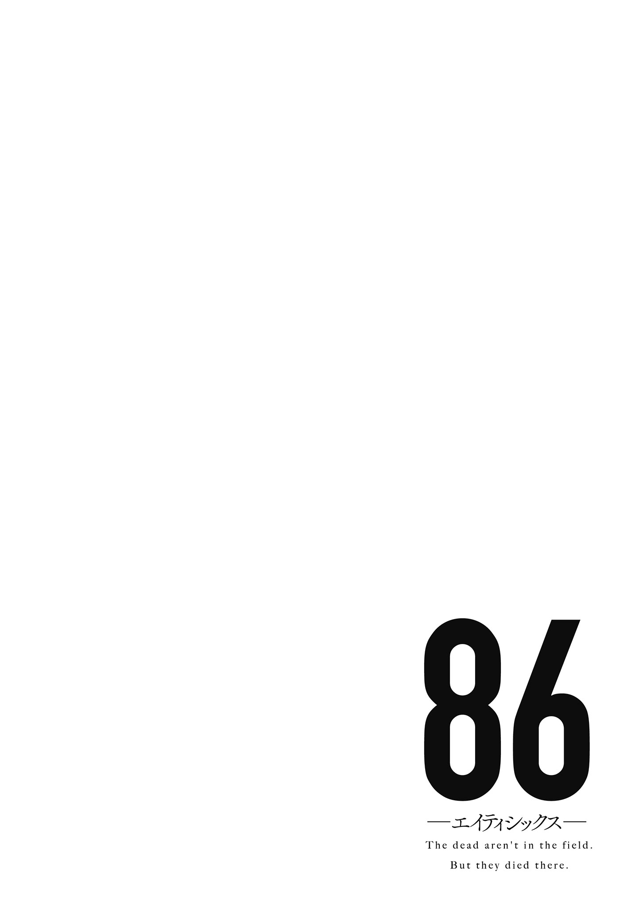
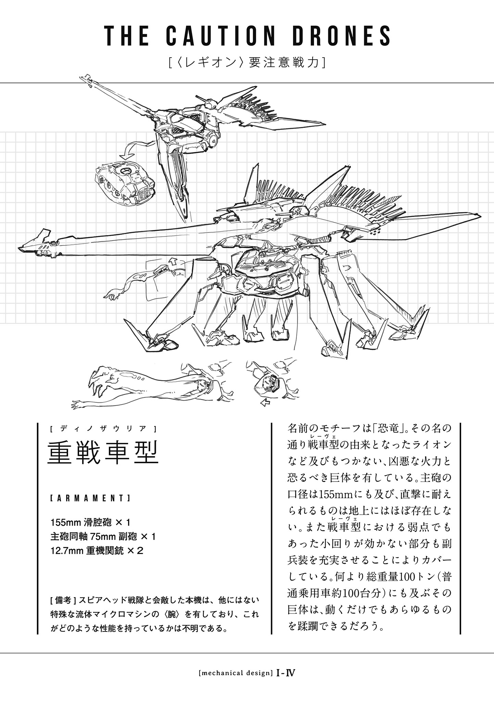
間章 首のない騎士Ⅳ
音もなく、とめどなく雪が降っている。
闇の空から舞い落ちる白い雪は、しんしんと降り積もる絶望に似て、暴威のようで、世界からの拒絶のようで美しかった。涙は凍てつき、嘆きさえも凍りつく、酷薄で無情な厳冬の絶白。
キャノピの吹き飛んだ〈ジャガーノート〉の中、せめて空を見て逝こうと仰向けに横たわって、レイは闇の彼方から滲み出ては自らの上に降り落ちる白雪を見上げている。
「......シン」
十歳の時に生まれた弟は、レイにとってはようやくできた、待望の兄弟だった。
両親以上にレイが目一杯甘やかして、弟は少し泣き虫で甘えん坊に育った。いつも傍にいて、何でも出来て、何からだって守ってやれる、レイは、弟のヒーローだった。
十七の年に戦争が起きて、レイと両親と弟は、人間ではなくなった。
祖国に銃を向けられて、家畜のようにトラックに詰め込まれ、貨物列車に押し込まれて。
その間ずっとシンは怯えて泣いていて、縋り付いてくる小さな体を抱きしめた。弟はおれが守る。何があっても、何からだって絶対に。
収容所は粗末なバラックと生産プラント、物々しい鉄条網と地雷原が、構成物の全てだった。
兵役に応じれば市民権を返すと通知があって、最初の徴募に父が応じた。お前たちだけでも家に帰らせてやらないとなと父は笑って、そして二度と帰ってこなかった。
父が死んで、その通知と共に母に徴募の通達が来た。
取り戻せたはずの市民権は、戻らなかった。兵役に応じたのが一人なら与えられる市民権も当然一人分だと、それが政府の弄した詭弁で、そして母にとって、守るべき子供は二人いた。
やがて、母も死に。その死の通知と共に、レイに徴募の通達が来た。
与えられた自室の中、レイは目もくらむような激しい怒りに立ち尽くす。徴募の通達。
一人の働きに一人分、という詭弁さえまたも翻して。
どこまで。政府は。白系種どもは。この世界は。
どうしておれは。そんなことは薄々わかっていたのに、あの時母を止められなかった......!?
「......お兄ちゃん」
シン。
来るなよ。どこでもいいからどっか行ってろ。おまえに構ってやる余裕なんか今はないんだ。
「お母さんは？ もう帰ってこないの、どうして？」
教えただろ。何度も言わせるなよ。幼い弟の頭の鈍さに、心底腹が立った。
「どうして、しんじゃったの」
ふつりと、何かが切れた気がした。
お前が。
二人目なんかがいたからだ。
首を摑んで押し倒して、細い首を両手で思い切り締め上げた。折れてしまえばいい。千切れたならいっそいい気味だ。激情のまま、お前のせいだと喚き散らした。
そう、母さんが死んだのはシンのせいだ。こいつがいたから、この愚かな弟なんかがいたから、こいつを人間に戻してやるために母さんは死にに行くしかなかったのだ。断罪の言葉を叩きつけてやるのは痛快だった。傷つけばいい。耐え切れずに死んでしまえ。
「──何をしている!? レイ！」
肩を摑まれ、思い切り引きはがされて転がされて、我に返った。
今。おれは。何を。
おろりと見やったのは割って入った神父の黒い僧服の背中で、横たわったきり動かないシンの容態を診ている。口元に手を近づけ、首に触れて、血相を変えて心肺蘇生処置を施し始める。
「......神父さ、」
「出ていなさい」
唸るように言われていよいよ困惑に視線を彷徨わせた。だって、シンが、動かないのに。
立ちすくむレイを、銀色の目の片方だけで一瞥して神父は一喝した。
「死なせたいのか！ 出ていなさい！」
その、本気の怒声。
打ちのめされるように部屋を出て、ふらふらとへたりこんだ。
「あ......」
敗戦した白系種がエイティシックスを虐げ、そのエイティシックスがより少なくて弱い同じエイティシックスを虐げる連鎖を、レイはずっと軽蔑していた。受けた痛みや非道を耐えるのでも立ち向かうのでもなく、ただ自分より弱い者を捌け口にして晴らす、その下劣を。
同じことをした。
両親の死や、共和国の卑劣、世界の理不尽と、何より自身の無力に対する途方もない怒りや憎悪を、抱えきれずにぶつけた。自分よりもずっと小さくてずっと弱い、自分が守るべき弟に。
その罪深さに、今更になって戦慄いた。頭を抱えてうずくまった。
「あああああああああああああああああああああああああああああああああああ！」
おれは。あいつを。守りたかったはずなのに。
幸い、シンはすぐに息を吹き返し、目を覚ましたけれどレイは会いに行けなかった。神父は二人で会うのを警戒して許してくれなかったし、顔を合わせるのが怖かった。
逃げるように徴募に応じた。
出立の時には神父もシンを連れて見送ってくれたけれど、ついに一言たりともかけられなかった。一度として向けられたことのない怯えた眼差しが、胸に痛かった。
このまま死ぬわけにはいかない。必ず生きて、帰らないと。
そう思って、仲間が次々と死んでいく中を戦って戦って必死に生きのびて。
けれど。
降りしきる粉雪が寒くて、これはいよいよ駄目だなと失血でぼうっとなる頭でレイは思う。
ひしゃげた装甲の紋章が目に入る。首のない骸骨の騎士。絵本の表紙だ。お話の主人公。
レイからすれば正直不気味なその絵本が、何故か小さなシンは大のお気に入りで。
今はもう、絵本のことも、毎晩それを読んでやったことさえ、覚えているか。
愛された記憶も。
くしゃりとレイは顔を歪めた。
あの出発の日。声をかけてやればよかった。
お前のせいじゃないんだと、はっきり言ってやらなくてはいけなかった。
あの夜レイは、シンに呪いをかけた。そのままにして逃げてしまった。
家族が死んだのはお前の罪だと責めたてられて、あれからシンはどれほど自分を責めたろう。
愛してくれるはずの家族に殺されかけて、それはシンの心をどれほど歪めてしまったろう。
両親の死やレイの暴力を、泣けただろうか。笑うことは今、できているだろうか。
「......シン」
霞みきった白い視界に鈍色の影が差す。〈レギオン〉。追ってきたか。
視界の端の、骸骨の騎士。弱きを助けいかなる強敵にも立ち向かう、正義のヒーロー。
弟を守る、ヒーローのままでありたかった。
自分でそれは壊してしまって、けれどそれでも、もう一度会いたいと手を伸ばし。
それが『彼』の形になった。
第七章 さよなら
『......シン』
ぞわ、と重戦車型の機体から装甲をわずか持ち上げて無数の『手』が伸びる。
流体マイクロマシンの銀色。節の高い長い指を備えた大人の男の手で、本来の腕の何倍もの長さのそれが爆発の速度で生え伸びる。右手も左手もばらばらに、何かを求めて伸ばされる。
それら全てを間違いなく〈アンダーテイカー〉に向けて、霹靂の轟音で咆哮した。
『シィィィィイィィィィィィィィィィィィィィィィィイィィィィィィィィィィィン！』
最低の同調率でなお、内腑を揺さぶり腹の底にびりびり響く大音声。血も凍るおぞましい絶叫に、最も慣れているはずのライデンでさえ冷汗が吹き出すのを抑えられなかった。アンジュが小さく悲鳴を上げて耳を塞ぐ。
シンだけが、ただ名前を呼ばれただけのように〈アンダーテイカー〉をそちらに正対させた。
「......シン!?」
『先に行け。ライデン、その間の指揮は任せる』
重戦車型だけにひたりと据えられた冷徹な眼差しさえ、見えるようだった。
『森の奥まで入ってしまえば、斥候型にさえ注意していればそうそう見つからない。やり過ごして先に進め』
「お前は!?」
『倒してから行く。片づけないと進めないし、進む気も無い。......逃がしてくれる気もなさそうだ』
ライデンはその最後の独白の響きにぞっとなる。
こいつ。今。
笑った。
ああ。駄目だ。
引き戻せない。元々こいつの心はここになんかないのだ。こいつはずっと囚われている。無くした首に。探し求める、死んで奪われた兄の首に。これまでずっと、......多分、かつて兄貴に絞め殺されたというその時から。
それと知って、けれどライデンは低く唸る。
「ざけんな。誰が聞くか」
誰が、置いて逃げろという命令など。
『──』
「一人でやりてぇって言うなら、仕方ねえ。......他は支えてやる。とっとと片付けろ」
言いながら、込み上げるものにきつく奥歯を嚙みしめた。
一人でやる、か。
手伝えと。一緒に戦えと言ってくれれば応じてやるのに。どうしてこの馬鹿はこう、......この期に及んでどうしようもなく馬鹿なのか。
一瞬沈黙が落ちて、シンが小さく嘆息する気配。
『......馬鹿だな』
「お互い様だ。......死ぬなよ」
応じる言葉は、今度はない。
長距離砲の金切り声が号砲だ。嵐のように撃ち込まれる弾幕に、跳び退る形で四機が散開。
骸骨の死神を負う四つ足の蜘蛛が、獲物に襲い掛かる獣の速度で飛び出す。
重戦車型が仕掛ける。
控える斥候型が四方に展開。斥候型以外の〈レギオン〉のセンサ性能は高くなく、火力を犠牲に高性能の複合センサを備えた斥候型からデータリンクを通して索敵情報を受け取る。四方に散ったそれらが重戦車型の目だ。接近する〈ジャガーノート〉を前方の二機が捕捉、転送される各種情報と自機のセンサが得た光学映像を元に重戦車型の砲塔が旋回する。
砲声。
最早戦車砲ではなく重砲クラスの一五五ミリ砲が猛然と吼え、音さえ置き去りに駆ける高速徹甲弾が寸前まで〈アンダーテイカー〉がいた空間を地を嘗めるように貫通する。
応射。〈アンダーテイカー〉はしかし、重戦車型ではなく周囲の斥候型を撃った。一機を撃破、二機目の胴体を回避機動のついでに蹴り潰し、ここでようやく重戦車型に砲撃。空中で炸裂させた発煙弾が重戦車型の光学センサを一時塗り潰した隙に、二機の斥候型を潰して出来た死角に滑り込む。
〈ジャガーノート〉の主兵装は、敵のそれとは比べるのもおこがましい貧弱な五七ミリ砲、堅牢を極めた重戦車型の装甲など前後左右、どの位置からでもいかな近距離でも撃ちぬけない。有効な攻撃箇所はただ一点、そこを狙える位置まで接近するため、まずはその巨体の死角を外から補う目を潰し、付け入る隙を増やす策に出た。
白煙の帳を風圧で吹き払い、重戦車型の巨軀が躍りでる。接近方向を予測した動きで重機関銃が旋回、掃射が薙ぎ払う。避けて跳び退った〈アンダーテイカー〉が煙の向こうに現れる。
発射の高熱に陽炎立つ巨砲の砲口がその首のない影に向く。ほとんど神憑り的な乱数機動と、神業じみた敵機の照準の先読みで〈アンダーテイカー〉が疾駆する。
〈レギオン〉の軍勢は明らかに〈アンダーテイカー〉を他の四機から引き離し、かつそれら四機を分断して各個撃破しようと動いている。
戦車型と近接猟兵型が複数機で連携して目標と定めた一機に波状攻撃を仕掛け、遮蔽に潜もうにも戦場全体に散った斥候型が必ず嗅ぎつけにくる。退路となりうる要所には対戦車砲兵型が隙間なく砲列を並べ、長距離砲兵型の猛砲撃が移動可能な区域を限定する。近くにいる〈レギオン〉は次々撃破していくのだけれど、それ以上が続々と攻め寄せてくる。
通常〈レギオン〉はこれほど緊密な戦術はとらない。間違いなく〈羊飼い〉だ。おそらくはあの重戦車型の〈羊飼い〉の指揮。
狂奔じみた砲撃と斬撃の猛攻の中、ライデンはちらとそちらに視線を向ける。蟻のたかるように押し寄せてくる〈レギオン〉どもの向こう、そこだけぽかりと空白となった一帯で繰り広げられているのは重戦車型と〈アンダーテイカー〉の熾烈な一騎打ちだ。
冗談みたいな光景だった。
重戦車型との一騎打ちなど、およそ正気の沙汰ではない。応酬が成り立っているように見えることさえ奇跡の域だ。火力も装甲も、機動力さえ〈ジャガーノート〉は遥かに劣る。
本来なら勝負にもならない。シンだからこそ辛うじて戦闘が成立しているのだ。......否、シンでさえもがまともな勝負とまでは至らない──重戦車型は機甲兵器の定義を無視してほとんど動かず悠然と構え、対する〈アンダーテイカー〉は剃刀の上を踊り渡るが如き緻密と蛮勇で組み立てられた、見るだけで胃の痛くなるような際疾いマニューバを強いられている。
互角などでは全くない。あんな綱渡りがいつまで保つか。
それともこちらが、先だろうか。
微かな弱気が脳裏を掠めた。もう何機仕留めたか覚えていない。仕留めても仕留めてもきりがない。凝る疲労と徒労感は、戦慣れた彼らの気力をも確実に蝕んでいた。
『リロード！ 援護頼む！』
荒い息を吞みこんでセオが叫ぶ。その声も疲労に掠れている。
たった一機で砲火の中、健気に補給に駆け回るファイドが、計六基あるコンテナの一つをパージした。そのコンテナの弾薬ストックが零になったのだ。一月分を想定した弾薬の、二割近くを早くもここまでの戦闘だけで使い切った。
弾薬全部使い果たした時が、俺達の最期か。
ちらりと思い、無理に笑った。上等だ。そう生きて死なんと、望んだまさにそのとおりの。
突然同調の対象が一人増えた。
『──シュガ中尉！ 左目を借りますよ！』
一瞬左目の視界がわずかに暗くなり、すぐに戻った。同じ声が続けざまに叫ぶ。
『射出しました！ 着弾します、備えて！』
刹那。空が漂白された。
無音の閃光。遅れて爆発の轟音。上空に展開する阻電攪乱型の群が一瞬で広がった爆炎に吞みこまれて焼かれ、あるいは全方位から襲い掛かる衝撃波に磨り潰されてはらはらと墜ちる。
ただ中に撃ち込まれた燃料気化爆弾の強烈な一撃。銀の薄雲がごっそりと欠け、ひとときぽかりと覗いた空の青を、続けて飛来した誘導飛翔体の群が真っ黒に塗りつぶす。
指示された座標上空に正確に到達し、信管が作動して外殻が破裂。内部に収められた数百もの子弾はそれぞれがレーダーを作動して目標を探知、目標上方で炸裂して初速毎秒二五〇〇から三〇〇〇メートルにも及ぶ超高速の爆発成形弾を叩きこむ。
鋼の驟雨に脆弱な上部装甲を食い破られ、〈レギオン〉第二陣の前方半分が一瞬で沈黙した。
続けて第二派が飛来。再びの鋼鉄の驟雨が第二陣の生き残りを完膚なきまでに打ち倒す。
ライデンも、セオもクレナもアンジュも、一瞬心底啞然となる。
見たことはないが、何かは分かった。迎撃砲。〈ジャガーノート〉が守る前線の背後にハリネズミのように林立する、一度たりともその役目に使われたことのない役立たずのオブジェ。
それを起動させられるのは。
そもそもこんな死出の道行にさえ、繫いでくるような物好きなんかただ一人。
「あんたか──ミリーゼ少佐！」
声が返る。銀鈴の声。何か腹を決めたような、何か腹に据えかねたような。
『ええ。わたしです。遅くなってすみません、戦隊各位』
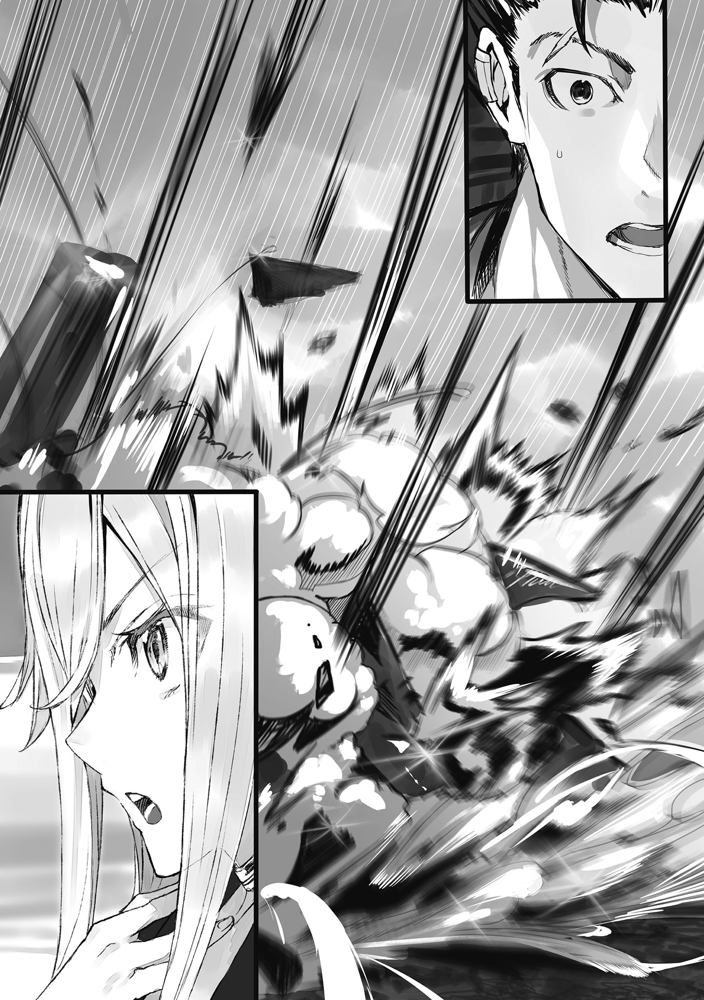
†
「──顔を見せるなって言ったでしょ。レーナ」
出てこないかとも危惧したが、アネットは存外にあっさりと玄関広間に現れた。
「ええ、聞いたわ、アネット。了承した覚えはないけれど」
霧雨の降りしきる夜。邸内の明かりと夜の闇の境界線に立ったレーナは、身繕いの時間すら惜しんだ憔悴と疲労も相まってさながら幽鬼のようだった。ざっと梳っただけの白銀の髪にくたびれた軍服、化粧気のない白い貌。
硬い白銀の双眸だけが、異様な光を湛えて底光る。
「視覚の同調設定。レイドデバイスの調整まで含めて、やってくれるわね」
アネットが唸る。手負いの獣の眼光で。
「やるわけないでしょ。あたしには関係ないんだから」
「やってもらうわ。どうしても」
レーナは嗤った。
おそろしく酷薄な、醜い表情をしているのだろうなと、頭の何処かが思った。
「あなたが見捨てた、幼馴染は、」
嗤う。悪魔のように。死神のように。
「シン、というのでしょう？」
瞬間、アネットの表情が落剝した。
「......、なんで......!?」
これ以上ないほど血の気を引かせた彼女に、やはりそうか、とレーナは思う。
鎌をかけただけだ。だが同時に、そうだろうという確信があった。エイティシックスの住民が極端に少ない第一区に住んでいて、レーナやアネットと同い年で、年の離れた兄がいて。
何より、亡霊の声を聞くシンの異能と、家族の心の声が聞こえたというアネットの幼馴染の能力。繫がる対象が異なるだけで、おそらく根本的には同じ。
ここまで揃っていながら別人だなどと──そんなわけがあるだろうか。
「なんで、あんたがその名前を知ってるの......!? ............まさか──！」
「ええ。そうよ。わたしの部隊にいるの。スピアヘッド戦隊戦隊長、パーソナルネーム〈アンダーテイカー〉。彼が、シンよ」
救う機会はありながら、二度目さえも、アネットが見捨てた。
がっ、と胸ぐらを摑まれた。縋りつく動作と眼差しに、レーナは眉一つ動かさなかった。
「それをシンが話したの!? ねえ、あの子はまだ生きてるの!? あの子は......まだあたしを恨んでるの!?」
「聞いてどうするの？ 関係ないんでしょう？」
その手を払い、ゆっくりとレーナは後ずさった。追って霧雨と夜闇の中に踏み出したアネットに、底冷えのする笑みを向ける。
本当は、シンからアネットのことを聞いたことなど一度もない。おそらく、......もう覚えてもいないのだろう。レイや両親の記憶さえ戦火と亡霊の嘆きに塗り潰されてしまったシンが、幼馴染のことだけ覚えている道理はない。
それがアネットにとって、救いなのか呪いなのかは知らないけれど。
「そうじゃないなら手伝ってもらうわ。どうするの。──早くしないと、鶏が鳴くわ」
おまえはにわとりがなくまでに、三度、わたしをしらないというだろう。
立ち尽くし、アネットは笑った。それは泣き笑いのようで、どこか安堵にも似た表情だった。
「......悪魔」
「ええそうよ、ペンローズ技術大尉。わたしも、あなたも」
†
そう、レーナはふさぎ込んでいたわけでも打ちひしがれていたわけでもない。スピアヘッド戦隊と同調する、その時間がなかったのだ。
視覚の同調の設定と調整。周辺の戦区一帯全ての迎撃砲の手動発射コード。叶う限りの援護の手段をかき集めるためには。
「っ......不発が全体の五割......!?」
返ってきた作動結果にレーナは呻く。三割の迎撃砲が動作せず、発射された誘導飛翔体もその三割近くが外殻の信管が作動せずに落下。重量百キロを超す誘導飛翔体の一基の真下にいた不運な斥候型がぺしゃんこになったようだが、本来の威力からすれば戦果にもならない。
整備不良もいいところだ。己を守る鎧を己の怠慢で錆びつかせて、馬鹿らしい。
残りの迎撃砲に同じ座標を打ち込んで発射。目標にした部隊がそれで全滅し、一つ息を吐く。
ようやく自由になれるのだと、あの時シンは言った。
そんなものは自由ではないとレーナは思うけれど、だからと言って特別偵察を撤回してやることも彼らを解放してやることもできないのだ。それならせめて、彼らが望んだ道行を、一秒でも長く邪魔をさせずに進ませてやることが、彼女がしてやれる唯一の手向けだ。
ようやく得たという、自由だ。
こんな初日の。こんな歩き始めてすぐの場所で。終わらせてなんてなるものか。
返ってきた銀鈴の声に、思わずライデンは怒鳴りつける。第二陣が壊滅して第三陣は判断をつかねて立ち止まり、損耗分の補給を断たれた第一陣を撃破していく、その間。
「本物の馬鹿か！ あんた一体何やってんだ！」
『貴方と左目の視覚を共有して位置情報を確認して、その位置を元に迎撃砲を手動発射しただけですが。ああ、視覚共有時はそちらの気が散らないよう、左目は閉じますのでご心配なく』
淡々と返る声にいよいよ苛立って叫ぶ。何が、だけ、だ。それですむ話じゃないだろうが！
「視覚共有はハンドラーが失明するからやらねぇって知らねぇのか!? 迎撃砲も、あんた許可どうしたんだよ！ そもそも今そこにいること自体命令違反だろうが！」
視覚共有は、双方が混乱する以上に、情報量が多すぎる。連用すれば負荷が過ぎて最悪失明もありうると、だから管制には使われない。支援禁止の作戦に、許可のない兵器を使用して援護を行う明確な命令違反も含め、これから死ぬだけの部隊のためにするようなことではない！
突然かっとレーナが叫び返した。初めて聞く、ハンドラーの少女の怒号だった。
『だから何ですか！ 失明なんていつかの話、迎撃砲の自己判断使用も命令違反も精々減給か降格程度、死ぬわけでもあるまいし！』
本気の怒声にライデンは虚を突かれて押し黙った。激昂のあまりはあはあと荒く息を吐き、これまでからは想像もつかない捨て鉢さでレーナは吐き捨てる。
『どうせ本部や政府だって、道理なんか弁えてないんです。こちらだけ道理に従ってやる謂れなんかありませんし、その誰に非難されようがどうだっていいです。......だから、とっととこうしていればよかったんです。許可なんか気にしないで』
一瞬苦く声は沈む。ついで言い捨てて高慢にフンと鼻を鳴らした。
張りつめていた気分がふっとほぐれて、微苦笑が零れた。
「......あんた、ほんと馬鹿だな」
『別に、あなた達のためじゃありません。この数が前線を突破してくれば共和国が危うい。わたしが死にたくないから、戦ってるだけです』
澄ました声に今度こそ声を上げて笑った。今日初めて、レーナが笑う気配。
『第三陣が動いたら、こちらで撃ちます。第一陣は、貴方達も巻き込んでしまうので支援ができません。すみませんが自力で何とかしてください』
「ああ。任せろ、俺達にとっちゃいつものことだ」
『......ノウゼン大尉は、』
問いに、苦く目を眇めた。同調こそ繫いだままだが、応答もなければこちらを気に留めてさえいない、ただ伝わってくる冷徹で獰猛な戦意の気配。
「兄貴と、殺し合ってる。──あれがシンの目的だ。こっちの声はもう聞こえてねえ」
耳を聾する兄の絶叫が轟き渡る中、反撃の機を求めてシンは〈ジャガーノート〉を駆る。
些細なミスも許されない細い細い死線の上を戦い続け、極度に集中した神経は目の前の敵以外の光景も、その絶叫と砲声以外の音も、時間の経過さえ最早認識していない。
砲が向く。照準。寸毫の差で〈アンダーテイカー〉は切り返しを踏もうとしていた脚をわざと滑らせて射線を外れる。副砲は主砲の向かって右側にあり、左回りに逃げ続けていれば攻撃してくるのは主砲と、砲塔上部の旋回機銃だけ──......。
副砲が、撃った。
砲弾が右脚を掠めるように飛び去り、同時に主砲の照準がぴたりと据えられる。機体を横滑りさせている〈アンダーテイカー〉はまだ回避機動を取れる体勢にない。
砲声。離れた地面に撃ち込んだワイヤーに引かれて辛くも〈アンダーテイカー〉が射線を逃れ、たまたま後方にいた戦車型が巻き添えを食って爆散する。強烈な反動をその超重量と強靭な脚力でねじ伏せての二連射に、流石に一瞬重戦車型も八本の脚を踏みしめ。
その一瞬で、〈アンダーテイカー〉が己の間合いに飛び込んだ。
その時には仰角を取った主砲は重戦車型の砲塔後部上面に照準を合わせている。見えている中では最も薄い装甲。堅牢極まりない重戦車型の装甲の中で唯一、〈ジャガーノート〉の貧弱な主砲でも撃ちぬける箇所。
撃発。曲射の軌道で撃ち込まれた、致命打のトップアタックの徹甲榴弾を。
重戦車型は、砲塔に群れ生えるその手の一つで打ち払った。
「っ......!?」
悪夢のような光景にシンは目を見開く。迎撃した手はその衝撃に砕け散ったが、元が流体の腕は瞬く間に手首から先を形作ると何事もなかったようにざわりと指を蠢かせる。
重戦車型の意識が向いたと感じる。反射的に飛び退るや機銃掃射が元いた地面を薙ぎ払い、追って二度、三度と撃ち込まれる鉛の豪雨を避けて下がれば、そこは再び己が間合いの外。最も威力に劣る重機関銃だけで〈ジャガーノート〉を退けた重戦車型が、悠然と向きなおる。
牽制射程度にもこっちは必死に逃げ回らなくてはいけなくて、その上こちらの唯一の攻撃可能箇所も封じられた、か。
総身を駆け上るのは深い戦慄で、裏腹に口元に浮かぶ笑み。
好機と見たか、隊列を抜け側面から迫った近接猟兵型を、けれど重戦車型が容赦なく砲撃して吹き飛ばす。邪魔をするなと怒鳴りつけるようなその振舞にいよいよ笑みは深まった。
彼を呼び続ける兄の最期の声。全てはお前の罪業だと、死んで償えと叫び続ける。
殺すのならば自分の手でと、死してなおも欲しているか。
......おれもだよ。兄さん。
自分がショーレイ・ノウゼンの魂と呼ぶべきものなのか、雪の日に死んで腐敗しないまま複写された彼の記憶を持っているだけの〈レギオン〉なのか、そんなことは今のレイにはどうでもいいことだった。死んだのにもう一度チャンスをもらえた、それが全てで、それでよかった。
シンが戦場に来てしまったことは、その声が聞こえたからわかっていた。
けれどシンの声はとてもとても小さくて、その向こうの共和国の無様で巨大な死骸の喧騒にかき消されてしまう。加えて共和国は図々しくも戦場に捨てたはずのシンを自分の所有物とみなしていたから、尚更聞き分けるのは難しかった。
各戦域に配備されるたび、斥候型の目を通じて探し回った。〈レギオン〉のレイは与えられた命令には逆らえなくて、指揮官として配置された戦域奥からは動けないけれど、近くにいるなら会いに行きたい。会って、謝って、赦してもらえたら、そうしたら。
ある時壊れかけて動けなくなった斥候型の視界に、ついに見つけた。
流星雨の夜だった。距離としては随分遠くて、拡大率を最大にしてやっと顔が見えた。
大きくなっていた。仲間らしい黒鉄種の少年と何か話していて、声を聞きたくて集音センサの焦点を向ける。もう声は変わってしまったろうか。まだかな。どちらでもいい。聞きたい。
二人は星の落ちる空を見上げている。うずくまった〈ジャガーノート〉の装甲に背を預けた、小さな子供みたいなシルエット。
「まだいんの。兄貴」
「ああ。ずっと呼んでる。だから、行かないと」
おれのことか？ 探しに来てくれたのか。
機械の体がそれでも震えた。シンが戦場に来てしまったのは悲しかったけれど、それが自分を探しに来てくれたからだというのは震えるほどに嬉しかった。
「けど。お前、兄貴のこと見つけて埋めてやったんだろ。なら、もういいんじゃねえのか」
ああ。おれの死体を埋葬してくれたのか。優しいな、シン。
「......兄さんはそんなことで、おれを赦したりしないよ」
愕然となった。
どうしてそんなことを言うんだ。お前が赦されないなら、じゃあおれだって赦してなんかもらえないじゃないか。
そうではないのだと、伝えたくて教えたくて会いたくて会いたくて気が狂いそうになった。
その時はすぐに共和国の輸送機がシンを連れ去ってしまって、弟の小さな声はまた紛れて見失ってしまった。必死に探し回っては見つける度に連れ出そうと躍起になった。レイは戦域奥から動けないけれど、動かせる隷下の〈レギオン〉達をすべて使って。
シンはずっと、戦い続けていた。
いつかその片隅で見捨てられてひっそり散るだけの戦場で、それでも従容と戦い続けていた。
そんなことはもう、しなくていい。
ブタどものためになど戦わなくていい。そこでしか生きていけないというなら、いっそこちらに連れてきてやろう。脆い人間の体なんか捨てて。体なら幾らでも乗り換えればいい。そうして、今度こそ守ってやる。今度こそずっと、永遠にだって。
今日、ようやくブタどもがその汚い手をシンから離した。見つけたけれど紛れがちな小さな声が、ようやく小さいながらにはっきり聞こえるようになった。
レイのいる戦域奥を目指して来るのがわかったから、迎えに出た。ようやく迎えに出られた。
今は、目の前にいる。不格好な蜘蛛の中に、焦がれて待ちわびた、呼び続けた大切な弟が。
あの蜘蛛は鎧というには脆すぎるから、壊してしまわないよう細心の注意を払って手を伸ばす。逃げ回るから上手くいかない。脚だけ壊そうと狙い撃つ。
ようやく会えた。ようやくこれで、連れて帰れるのだ。
ずっと一緒だ。ずっと兄さんが守ってやる。だからこっちに来い──シン。
重戦車型は足元以外を狙ってこない。榴弾も使わず、撃ち込まれるのは徹甲弾のみ。榴弾が撒き散らす高速の破片は飛ぶ方向を制御できないし、〈ジャガーノート〉の脆弱な装甲は至近距離で炸裂する一五五ミリ砲弾の衝撃波にも耐えられないからだ。
嬲っているつもりか。いや──撃ち殺すのは嫌なのか。ざわざわと揺らめく無数の手。あの夜と同じ、自分の首を締める兄の。
同じことが、そう何度もできるとでも。
光学スクリーンに視線を走らせ、それが実行可能な地勢を探す。あえて退がってみせると、レイは追って歩を進めてきた。
細かく方向を変えながらひたすら後退していくと、焦れたように砲塔が回転し、砲口が脚部に向く。照準動作。撃ってくる、今──。
予定の位置。かかった。
発射炎が閃く寸前、ワイヤーアンカーを射出。重戦車型の左後方に立つ樫の巨木にアンカーが突き立つや最高速度でワイヤーを巻き上げ、ほとんどすっ飛ぶ形で引き上げられて、左側面に立ち並ぶ森の木々の幹を、枝を蹴りつけ、重戦車型の頭上を一瞬で駆け抜ける。
同じ陸上の装甲目標を主要な攻撃対象とする戦車の砲塔は、水平方向には三六〇度砲を向けられるが、上下方向に取れる角度──俯仰角には大きな制限がある。真上には決して向けられないし、まして足元を狙い下を向いていた姿勢からは対応できない。
中途の空中でワイヤーをパージし、慣性で宙を滑りながら機体をひねって着地位置を調整。装甲の継目を足掛りに、重戦車型の車体後部にとりついた。自身の巨体が邪魔をして機関銃弾も届かない、正面に比べ装甲の薄いそこに、格闘アームの高周波ブレードを叩きつける。
火花が散る。分厚い装甲が水のように切り裂かれる。こじ開けた隙間に、主砲を突きつけ。
その隙間から、銀色の両手が生え伸びて格闘アームを摑みとった。
「な──」
それはいつかの、教会の夜のように。
振り回され、叩きつけられた。それきり、シンの意識は途絶えた。
ぶつっ、とシンとの同調が途絶え、ライデンは目を見開く。周囲の〈レギオン〉はあらかた片づけ、ファイドは二つ目のコンテナをパージして、諦め悪く様子を窺っていた後方の〈レギオン〉どももレーナが容赦なく誘導飛翔体をぶち込んでやって撤退を始めた、その最中。
「......シン!?」
繫ぎ直そうとするが、繫がらない。見れば重戦車型が向き直る先、叩きつけられ転がった様子で、不自然に頽れたきり動かない〈アンダーテイカー〉の姿。
知覚同調は互いの意識を介し、だからどちらかの意識のない状態では接続できない。つまりは眠っているか気を失っているか、──死んでいれば。
重戦車型が悠然と近づく。何故か撃たない。けれど近寄らせればろくなことにならないと感じさせるその不吉な期待の気配。
無線に切り替えた。こちらは生きている。コクピット内部はそこまで壊れていない。
「シン！ 起きろこの馬鹿！」
〈アンダーテイカー〉は動かない。
中身を壊してしまわないよう随分手加減したのだが、脆い〈ジャガーノート〉の格闘アームはそれでもどちらももげて、折角捕まえたはずのシンは向こうに転がっていってしまった。
そのまま動かないので、よしとすることにした。多分気絶させてしまったし、もしかしたら怪我もさせたかもしれないが、それも含めて、後で全部謝ろう。
逸る気持ちを押さえようとゆっくり近づく。ようやくだ、と思うと嬉しくて仕方なかった。
ようやく取り戻せる。一緒にいられる。だから、まずはその脆い人間の体を。
〈アンダーテイカー〉に近づく重戦車型のブリップに、レーナは唇を嚙む。ライデン達が向かっているが、彼らの兵装では止められまい。このままではシンが、もしかしたらライデン達も。
唇を嚙み切って血の味がした。
レイは。あの時帰りたいと言っていた。大切な弟だと、言葉にはしなかったけれど思っているのがわかった。それなのに、そのレイがどうして今、シンを殺そうとしているのか。
止めなければと思ったが、レーナにも打つ手がなかった。撃てる砲がないのではない。シンを巻き込まずに重戦車型だけを撃破する手段がないのだ。
誘導飛翔体も重砲も、威力がありすぎる。〈ジャガーノート〉の装甲は脆弱だ。重戦車型を撃てば、その破片で確実にシンも巻き添えになる。
何か。何か手はないか。
考え、考え、考え──ふと、閃いた記憶に、レーナは目を見開く。
『ククミラ少尉。重戦車型の位置情報を、できる限り正確に観測して送ってください』
レーナが告げた内容にクレナは跳び上がりそうになった。クレナは狙撃手だ。何をする気かは説明されずともわかった。
『終端誘導はそちらに任せます。照準波を照射していてくれればいいですから......』
「ち──ちょっと待ってよ！ それって......！」
セオが割り込む。瞬間的に沸騰したようだ。続けて焦った様子のアンジュも。
『砲撃する気!? ふざけないでよ、まだシンが近くにいるんだ！』
『近くの炸裂でも〈ジャガーノート〉は耐えられないわ！ あの近さじゃシン君も巻き込む！』
『考えがあります。隙を作る、程度と思いますけれど。......わたしも大尉を死なせたくない』
その真摯な、どこか必死な声音。
思わずクレナは頷いていた。
到着と同時にライデンは撃ち、セオとアンジュもそれに続いた。装甲に弾かれ、構わずに駆け寄せる。まだ辺りをうろついていた斥候型には接近のついでに片端から機銃掃射を喰らわせ、なおも撃ちかける。
それらは全て装甲に弾かれ、あるいは手に払われて、重戦車型は歩みも止めない。くそ。弟が弟なら兄貴も兄貴だ。揃いも揃って、周りのその他なんか羽虫か背景みたいな面しやがって。
破片を喰らった機銃の一挺が沈黙。光学センサのすぐ傍に着弾し炸裂。
初めて、重戦車型の意識がこちらに向いた。
残った機銃が小煩げに旋回するのを見て取った刹那、ライデンは機体を横に振った。間一髪、機銃掃射が空気を引き裂く叫喚で行き過ぎる。
その間に接近したセオとアンジュがワイヤーアンカーを射出。砲身に、脚の一脚に絡みつき、そのまま二機は四肢を踏ん張る。重戦車型の十分の一ほどの重量しかない〈ジャガーノート〉では二機合わせても重りにしかならない。近接信管に切り替えた榴弾を曲射軌道で撃ち込み、もう一丁の機銃も黙らせてからライデンもアンカーを撃つ。重戦車型の歩みがようやく鈍る。
先のそれとは比べ物にならない、殺気。咄嗟にワイヤーを切り離した瞬間、重戦車型は拘束された砲身を、脚部を思い切り振り回した。パージの遅れた〈スノウウィッチ〉が一瞬吊り上げられて宙を舞い、〈ラフィングフォックス〉に激突。諸共に吹っ飛んで転がっていく。
「アンジュ！ セオ！」
『っ......こっちは平気』
『こっちもよ。ごめん、セオ君』
『いいよそれ今。......ライデン！ 撃ってくるぞ！』
「っ......！」
意識が逸れた隙に照準されていた。回避できない。歯を食いしばった瞬間重戦車型ががくりと姿勢を崩し、〈ヴェアヴォルフ〉を掠めた砲弾が明後日の方で着弾。クレナの狙撃。重戦車型が踏みしめる前脚の、その真下の地面をフルオート射撃で吹き飛ばした。
『ライデン、だいじょうぶ!?』
「ああ助かった！ けどもうさがってろ。お前がやられちゃ野郎にカマしてやれねえ。......少佐、配達はまだか!?」
レーナの声も緊迫している。
『射出しています。到着まで残り距離......三〇〇〇！ ククミラ少尉！』
『引き継いだ。終端誘導開始。着弾まで......五秒。......三、二......』
人の目には見えない照準レーザーを〈ガンスリンガー〉が照射する。それはまっすぐに、〈アンダーテイカー〉の傍らで足を止めた重戦車型に向けられた。
重戦車型の索敵能力は低い。
指揮官機であるレイもそれに漏れず、何機も従えた斥候型や指揮下の本隊のそれとリンクすることで索敵能力を補っている。けれど従えた斥候型は全滅してしまったし、本隊も最初の指示だけ与えてほったらかしたところ散々にやられて撤退を始めている。レイにしてみればシンを連れ帰るのが第一の目的でその他は二の次だったので、放っておいたのだが。
それ故に、気が付くのが決定的に遅れた。
キャノピに手をかけ、引きはがそうとしたところで突如、ロックオンアラームが鳴り響いた。
跳ね上げた光学センサの視界に、既に至近にまで迫った巨大な砲弾が映る。四五度の角度を保ち、姿勢制御の翼を広げて上面装甲を狙い急降下する、子供の背丈ほどもある巨大な蛆虫。
一五五ミリ重砲、対装甲誘導砲弾。
沸騰するような怒りが湧いた。
なるほどまともに喰らえばレイでさえも保たない、絶大な威力の砲弾だ。だがこの至近距離では、シンも確実に巻き添えになる。
共和国のクズどもが、使い潰すだけでは飽き足らず、囮代わりに諸共に吹き飛ばすつもりか！
シンを連れて逃げる暇はない。だからレイは前半分の脚を思い切り蹴り上げ、嘶く馬さながら上体を跳ね上げた。身をひねり、最も堅牢な正面装甲で砲弾に向き合う。流体マイクロマシンの手を可能な限り広げた。上部装甲は撃ちぬけても正面装甲ならどうだ。爆風も衝撃波も全てこの身で防ぎきる──背後に庇ったシンは何としても守り切ってみせる！
砲弾が迫る。着弾は次の瞬間。
ふと、昔見上げた、じゃらりと音の鳴りそうに星屑の散らばる闇の天球が浮かんだ。
その空を背景に少女が言う。白銀の髪と目。いつか会った。シンと丁度同じくらいの年頃の。
『守りたいのに』
ああ。そうだよ。おれはシンを守らないといけないんだ。大切な弟なんだ。
少女が言う。
『また殺すの？』
───────────────────────────────ッ！
動かない〈ジャガーノート〉。動かない、小さなシン。
おれは。
また。
着弾。
接触した信管が作動──しない。
不発弾。
成形炸薬の誘導砲弾は、質量弾としては密度も速度も重戦車型の重厚極まる正面装甲を貫通するにはまるで足りない。あっけなくひしゃげて潰れ、信管が作動しない炸薬は爆発もしない。
だが、音速を遥かに超える高速と、戦車砲弾とは比較にならぬ重量が生み出す莫大な運動エネルギーは、それを受け止めたレイの全身に一片の容赦もなく襲い掛かった。
「命中」
レーダースクリーンの誘導砲弾の表示が重戦車型と重なって消えるのをレーナは見る。
爆発はしない。当然だ。レーナは最初から信管を不活性のまま射出したのだから。
昔、父に聞いた。
戦車の装甲は敵弾を弾く。だがそれは、何の損害も受けないということではないのだと。
砲弾を弾いても、その有していた運動エネルギーの幾らかは衝撃として戦車全体に浸透する。それは部品を落下させ乗員をうち倒し、装甲をリベットやボルトで留めている場合にはそれを引き千切って跳ね回らせ、内部の乗員を殺傷してしまうほどに強力だという。
もっとも重戦車型が相手では、それも痛手程度にしかなるまい。レーナの手持ちの兵器で、シンを巻き込まず重戦車型を攻撃するにはこうするしか思いつかなかった。
それでも何とか数秒は稼いで、この間に次の手を。誰か。
そこで気づいた。
同調の、対象が。
戦闘中も繫ぎ直そうと試みていたシンとの同調が、回復しているのにライデンは気づく。
「シン！」
反応が鈍い。意識が戻りきったわけではないのか。もう一度呼びかけて、やはり応えない。
それでも叫んだ。
「起きろこの馬鹿！ おいシン！」
「ノウゼン大尉！ 聞こえますかノウゼン大尉！ 起きてください！」
皆がそれぞれに呼ぶ声をどこか遠く聞きながら、レーナも叫ぶ。目を醒まして、その場を離れて。重戦車型を討って。そういう、この状況に相応しいまともな理由からでは決してなく。
知っている。気づいてしまった。だからそれを、自分は必ず成し遂げさせなければならない。
あの時、あの夜、自らを斬りつけるような悲愴さで、兄を討つと口にした。
本当は兄と戦いたくなんてなかったシンが、それでもレイと対峙した理由。
「お兄様を弔うのでしょう!? ──シン！」
微かに。
赤い瞳の、上げられる気配が。
踏みしめる後脚が地面を踏み砕く。鋼の総身が軋み、浸透した凄まじい衝撃に中枢処理系がエラーを起こして思考が真っ白に漂白される。
それでも戦闘機械の本能が周囲に砲弾を連射させた。周りの羽虫が飛びのく気配。
処理系が、センサが回復し。
そして、レイは見た。
背後、いつの間にか身を起こしていた〈アンダーテイカー〉が、こちらに砲口を向けていた。
気を失った時に額を切ったらしい。出血のせいで左目が開けられない。体の感覚が遠い。動くのが辛い。頭がぼうっとして、うまく働かなくて考えるのが億劫だ。
サブスクリーンが死んで薄暗いコクピットの中、まだ霞がかったような頭を左手で押さえて、シンは内壁に凭れた体を起こせないまま操縦桿だけを握りしめてスクリーンを睨みつけている。
誰かに呼ばれて目が醒めて、けれど昏倒のダメージはまだ色濃く残っている。何が起こったのかわからない。自分がどうしてまだ生きているのかも、周りの状況の何も。
ただ、シンも〈アンダーテイカー〉もまだ死んでいなくて。
この手で葬らんと望んだ兄が、目の前にいて。
昏倒していた体が、それでも操縦桿を握りしめていてトリガに指をかけさせていた。
それで充分だった。
『......シン』
亡霊の声がする。とうに死んだ兄の声だ。最後に聞いた言葉と同じ、この戦場の片隅で一人きり、最後まで彼を許さずに死んだ兄の声。
亡霊達の嘆きの中に最初にそれを聞いたとき、何としても探し出して、この手で葬り去ると決めた。
『シン』
知らず、嚙みしめた歯が軋む。縊り殺されていなくなったはずの七歳の自分が、まだどこかで泣いている。全部自分が悪いのだと、あの時死ぬべきだったのだと泣き叫ぶ。今からでもそうするべきだと兄の声が誘う。決して忘れさせない......兄さんはいつまでも、おれを許さない。
けれど再び殺されてやるほどには、シンはもう子供ではない。
あれから随分時間が経って、その間に物事を知り、考えて、とうにわかっている。
あの時首を締められたのは、自分のせいではない。
両親の死も兄の死も、何もかも全て、自分の罪などではない。
あれはただの兄の八つ当たりだ。あの時兄は耐え切れなくて、あの時兄よりも自分は弱かったから捌け口にするには丁度良かった、それだけのことだったのだ。
負うべき負債など、本当は何一つない。
『シン』
亡霊の、声がする。
叫び続けるそれらの声を、シンは怖ろしいとは思わない。それらはただ哀れだった。死者の言葉を借り、あるいは聞き取れない機械の言葉で、彼らはいつも、還りたいと嘆いていたから。
故国を亡くし、体を失い、それで死んで還るはずが還れなくて、死にたくないと哭く死者の言葉に乗せて、還りたいと嘆き続ける亡霊の群。
その中に兄を置き去りに、どこへも行けないと思った。
死んで、持ち去られ、それ自体亡霊の戦闘機械の中に閉じこめられて、自分を呼ぶ声で嘆き続ける兄の首を、見つけ出して対峙し、戦い、壊して、葬ってやらなければならなかった。
そのために、シンは戦場に来た。そのためにこの五年を戦い抜いた。
負うべき負債ではない。償うべき罪はない。
それがわかっていて、それでも。
最後に兄に与えられた罪を。最期に自分を呼んで逝った兄の亡霊に。
贖わなくては、進めない。
照準が合う。砲口の先、立ち塞がる鋼色の装甲の、切り裂かれわずかに開いた隙間。
「......さよなら。兄さん」
トリガを引いた。
レイはその光景を、後部光学センサの映像に見る。
トリガが引き絞られたと感じる。発射炎が閃く。
その時何故か、見えた気がした。
まっすぐに向けられる血赤の双眸が。その眼差しの、強さと決然と意志が。
知らない顔で、知らない表情だった。
当然のことだ。
五年前、レイは死んだ。死んでいるからその時から何も変わらず、どこへも行けない。
けれどシンは、生きているからどんどん変わって、どこまでだって進んで行く。
何があっても守ると誓った、小さな弟はもう、いない。
いずれシンは、レイの年も追い抜くのだろう。それが嬉しくて、少しだけ寂しかった。
ああ。そうだ。
最後に一つだけ。言わなければいけないことがあったんだ。
言わなければいけなくて、最後まで伝えられなかった言葉だ。あの雪の夜の廃墟で、せめて最期にそれだけ、伝わらないと知りながら言おうとして、その前にレイは死んだ。
その時のように、手を伸ばした。切り裂かれた装甲の狭間を伸ばした手が抜ける。
シン。
閃光。
引きはがされかけたキャノピは少しだけ持ち上がって隙間が空いていて、その隙間をすり抜けて流体マイクロマシンの手が入り込む。
トリガを引き、着弾するまでの本当なら一秒もない時間。引き伸ばされた時間の中を、奇妙にゆっくりと手は進む。何かを求めるようにわずかに開かれて伸びてくる、兄の大きな手。
いつかの夜と同じ光景に、反射的に身がすくんだ。強張る体をけれど意志の力で押さえつけ、シンはそれから目をそらさない。
一瞬後には砲火に焼かれて燃え尽きる兄だ。五年間、探し続けた兄だ。正確にはその最期の思惟の残滓に過ぎないとしても、最後に向けられるものを覚えていたかった。
それが憎悪でも殺意でも、背負ってやるつもりはもうないけれど、覚えていたかった。
首に触れ、スカーフの上から指が巻き付く。なおも絞め殺すを望むかと見えた手は、ただ優しく、どこか悲しげに、かつて己が刻み付けた無残な痕を撫でた。
『......ごめんな』
え、と目を見開き、時間の流れが元に戻る。
あっけなく、着弾。成形炸薬弾頭が炸裂。発生した超高温・超高速のメタルジェットが装甲の裂け目から内部に噴き込み、一拍おいて重戦車型の巨軀がそこここから赤黒く火を噴いた。
するりと兄の手が離れる。コクピットの隙間を抜け、自らを焼く炎の中へ自ら戻っていく。
「兄さ、」
咄嗟に追って伸ばした手は届かない。巻き戻った兄の手が業火に触れて燃え上がり、儚く融けて炎の中に消えていく光景だけを虚しく摑み、その全てが不意に滲んだ。
「......あ、」
溢れて頰を伝うものが何なのか、シンは一瞬わからなかった。レイに殺されて一度死んでから、一度たりともシンは泣いたことがなかったから。
何が悲しいのかもわからない。込み上げて胸を塞ぐものが悲しみなのかさえわからなかった。
ただ、涙は次々溢れて、止まらなかった。
「──少佐。同調切ってくれ。......あんなの人に、聞かれたかねえだろうから」
『ええ』
しばらくして、もういいぜ、とライデンが繫いできて、レーナは知覚同調を再起動する。すでに他の者達は繫ぎ直していて、代表してライデンが問う。
『落ち着いたか？』
『ああ』
応じるシンの声はまだ少し掠れていたが涙の気配はなくて、いつもの沈着さだったが同時に何処か吹っ切ったような感じだった。ライデンが笑う。
『これで兄貴の名前も、残してやれるな』
その言葉に、声はなく、だがはっきりとシンは笑った。
『そうだな』
それからこちらに意識が向いた。
『............少佐』
「いますよ。当然でしょう。わたしはスピアヘッド戦隊の指揮管制官なんですから」
何もかもを見届ける義務が、誰が要らないといっても自分にはあるのだから。
『......』
「状況終了。お疲れさまでした、アンダーテイカー。皆さんも」
あえてパーソナルネームで呼んだレーナに、シンは苦笑したようだった。
『ええ。お疲れさまです、ハンドラー・ワン』
さて、とライデンが呟く。狭い空間で一つ伸びをするような気配をおいて、口を開く。
レーナはふと、瞬きをする。今。
何か、五人の間でだけ決定と同意がなされた。レーナだけが取り残されて他の者達を窺った。
何だろう。今、何か。決定的な、何かが。
『ファイド。コンテナの繫ぎ直し終わったか？』
何かが応じるような間があく。ファイド？ ああ、随伴の〈スカベンジャー〉か。
『整備と修理は寝るとこ決めてからだな......。初日にこんだけ弾薬使っちまったのは痛いな』
『まあ、それはいいんじゃないの？ その分倒したんだし』
『だな。......そんじゃ、まァ』
何か重いものが動く駆動音。五人全員が待機状態の〈ジャガーノート〉を立ち上がらせた。
『行くか。──それじゃあな、少佐。こっからも元気でやってくれ』
あまりにも普通の調子で別離の挨拶を投げられて、咄嗟にレーナは理解できなかった。
だって、戦闘は今終わって。
敵軍は撤退させて、誰も死ななくて。だから今日もまた、基地に帰って、いつもどおりに。
「え、」
レーナの当惑を余所に、少年達は歩き出す。激戦に傷ついた〈ジャガーノート〉の少しぎこちない足音を立てて、通学路の学生達のようなありふれた調子の雑談なんか交わしながら。
『ねえ。そういえばここって、このまま行っちゃっていいの？ 不発弾すごい出てたよね』
『うーん......。地雷原みたいなものだし、このまま進むのはちょっと怖いかも。シン君、迂回路ってすぐ見つかるかしら』
『近隣に遭遇しそうな〈レギオン〉はいないから、どこでも選べるけど。......不発弾？』
『歩きながら話すよ。っていうかシン、本当に周り何っにも見えてなかったんだね......』
歩いていく。東へ。〈レギオン〉達が支配する、未踏の戦野へ。
そうだった。彼らは。
もう二度と、帰ることは。
「ま──」
身を焦がす焦燥と、体の芯の冷えるような喪失の予感に駆り立てられて口を開いた。
「待って。待ってください......！」
振り返る気配。足を止めて言葉を待たれて、けれど続けて言うべき言葉をレーナは何も思いつかなかった。だって、追い出す側だ。絶死の命令を与えた側だ。謝罪も自責もこの期に及んでは彼らには何の意味も無いのだから、言えることなど何もなかった。
それなのに言葉がぽろりと零れた。
「おいていかないで」
一拍おいて何を言ったか理解してレーナは硬直する。よりにもよって、おいていくな？ 図々しい上に意味が解らない。
一方、シン達はその言葉に柔らかく笑った。
初めて、彼らから本当に笑いかけられた気がした。
柔らかな、少し苦笑の混じった笑み。今日から初等学校に上がる兄や姉に、一緒に行きたいのだと駄々をこねる幼い妹を見る兄や姉のような。
『あァ。いいな、それ』
ライデンが笑う。己の力と群の仲間だけを恃みに荒野を駆ける獣の強さと矜持で。
『そうだな。俺達は追われるんじゃない。行くんだ。どこまでも、行けるところまで』
意識がレーナから、進む先へと向く。全員が眼差しと心を、行くべき先へと再び向ける。
小さく、レーナは息を吞んだ。
伝わってくる彼らの感情は、覚悟でもなければ、従容でもなかった。
それは例えば、晴れ渡って紺碧に光る大海原を初めて見た人のような。
どこまでも広がる春の野原に連れてこられて、どこまでだって好きなだけ駆け回って遊んでいいよと言われた小さな子供達のような。
抑えきれない高揚と興奮と純粋な喜び。わくわくと弾んで居ても立ってもいられないような。
ああ。
これは、止められない。どんな言葉も、繫ぎとめる鎖にはもうならない。
彼らにとって、自由とは。
それが死に場所と、そこまでの道を選んで進めるというただそれだけのものでも、こんなにも尊く、得難いものだったのだと知る。
言える言葉も無く静かに口を噤んだレーナに別離を受け入れる決意を見て取って、少年たちは止めていた歩みを再開する。それでもまだ感情は納得せずに唇を嚙みしめていたレーナに、最後にふと、シンが笑った。
初めて感じる、穏やかな笑みだった。
屈託のない、どこか清々として晴れやかな。
『先にいきます。少佐』
同調が、静かに切られ。
五つのブリップが静かに消える。管制範囲の対象外。知覚同調の対象設定が削除される。
これでもう、二度と会えない。
涙が溢れた。ぼろぼろと零れて、込み上げる嗚咽を止められなかった。
コンソールに突っ伏し、声を上げて、レーナは泣いた。
†
色の並びが左右反対の色褪せた五色旗が、バラックの隊舎の木の壁に大書きされていた。
左右逆ではなく、上下逆。さしずめ抑圧・差別・偏狭・悪逆・下劣といったところか。
その隣には支配を断ち切る剣の代わりに鎖と足枷を掲げ、抑圧を象徴する鎖ではなく豚と名札を下げた人間を踏みつけて、いかにも高潔がましく微笑んだ聖女マグノリアの落書き。
これが彼らの目に映っていた、共和国の姿。
傷んでささくれた木肌と浮いた塗料を、レーナは荒れ一つない指先でそっとなぞる。古い絵だ。おそらくこの隊舎が建てられた九年前、最初にここに配属されたエイティシックス達の。
死んでいたのだ。レーナも含めた市民達が誇り、信じてきた共和国は、とうの昔に。
彼女たち自身が、引き裂いて踏み躙ってうち捨てた。
瞑目して小さく息をついた。共和国の声もきっと聞いていたろう、もういない少年を思った。
あの後上官から処分が決まるまで謹慎、と言い渡されたのをいいことに、レーナはここ、スピアヘッド戦隊の基地に向かう輸送機に乗り込んだ。次の処刑対象者を各戦区から集めて運ぶ輸送機。気弱で人の良さそうな人事部の兵士を、ほとんど脅すようにして乗り込んだ。
「......あんた。ミリーゼ少佐、だったか」
振り返ると、五十がらみの整備クルーだ。レフ・アルドレヒト中尉。この基地の整備班班長。
「ガキどもから話は聞いてたが。まさかここまで来ちまうたぁ、あんたもよっぽど物好きだな」
少し掠れた胴間声で言って、顎をしゃくって背後の隊舎を示す。
「本人達が部屋は片付けてったが、残してったものもないわけじゃねえ。新しいガキどもが入るまでもう少しあるから、それまででよけりゃ見て行きな」
「ありがとうございます。すみません、お忙しい時に」
「なに。ここでガキども見送って随分になるが、悼みに来た白系種はあんたが初めてだしな」
ふと、レーナはその日に焼けつくしたいかめしい横顔を見上げる。
「......アルドレヒト中尉。あなたは、」
白髪交じりの消炭の髪、ではない。油の汚れが染みついて斑の、銀髪だ。
「白系種......ですね？」
「......」
果たしてアルドレヒトはサングラスを外した。現れた双眸は、雪の影の銀色だった。
「女房が陽金種でな。娘もよく女房に似て、二人だけ連れてかれるのがどうしても許せねえで髪染めてついてった。何とか二人だけでも市民権取り戻してやろうと志願したんだが......ざまあねえや。ヘマやってくたばりかけてる間に、......二人とも戦場に連れてかれて死んじまった」
長く、鼻から息を吐き、がりがりと頭を搔いて続ける。
「......シンの奴の異能は、奴から聞いたか？」
「ええ」
「ありゃ東部戦線じゃそれなりに有名な話でな。......配属されてきた時に、こっそり聞いたよ。女房も娘も守れなかったクソ野郎を探してる〈レギオン〉はいねえのかって」
「......」
「いるなら行って、殺されてやろうと思ってな。けど、あいつはいないっつった。俺の名を呼んでる〈レギオン〉はどこにもいないって。それ聞いて、......少し救われたよ。女房も娘も死んでまで戦場に囚われちゃいねえ。俺が向こうに行きさえすりゃあきっと、会えるんだってな」
老整備クルーは微かに笑った。寂しげだが、同時にどこか安堵した笑みだった。
けれど東の方角、遥か広がる戦野に遠い目を向けた時には、その横顔はただ寂寞としていた。
「特別偵察の前に、必ず俺が白系種だって話すようにしてるんだ。俺達を恨んでるなら構わねえ、憂さ晴らしに殺していいぜって言うんだが......どうも実行してくれる奴がいなくてな。今回もそうだった。おかげでまた、死にはぐれちまってな」
また置いていかれたと、言ったような気がした。
妻や娘に。......ここで見守りその乗機の世話を焼いた、沢山の子供達に。
込み上げたものを押し隠すようにサングラスをかける。何してる、と言い捨てた。
「時間ねえって言ったろうが。......早く行け」
「はい。......ありがとうございます」
ぺこりとアルドレヒトに頭を下げて、横を抜けて隊舎に入る。
廃材で組んだようなバラックはどこもかしこも灰色と茶色で、殺風景で粗末だった。
経年劣化と染みついた埃で白っぽく変色した廊下は荒れた地肌がざらついて、あちこち木の端が浮き上がっていてぎしぎし鳴った。
食堂と厨房は掃除しても取りきれない長年の油や煤で汚れて、清潔とは見えなかった。
シャワー室はいつかドキュメンタリーで見たガス室に似ていて、じめじめしていて薄暗かった。端の方でかさかさと、黒い何かが蠢いていた。
洗濯機も掃除機もどこにもなくて、廊下の端のほうきとちりとりと、裏庭の水場の使い方のわからないぎざぎざの板と盥がどうやらその代用らしかった。
およそ文明的な生活の欠片も無かった。これが先進的で人道的と自負する国がその国民に与えた生活かと思うと、情けなかった。
二階がプロセッサー達の部屋のようで、ぎいぎい鳴いて抗議する階段を上る。
使い古された狭いパイプベッドとクローゼットで一杯になる小さな個室はやはり埃と経年と日焼けに色褪せて、どこも片付けられてそこにいた者の気配はまるで残っていなかった。洗濯されて畳まれた薄い上掛けとシーツと枕だけが、ひっそりと次の主を待っていた。
最奥の一番広い部屋が戦隊長の部屋だ。立てつけの悪い扉をぎいと開く。
ここも狭いパイプベッドとクローゼットがあって、ここだけ奥にデスクと、手前の少し広い空間に沢山のものが置かれていた。
古びたギターがあった。カードやボードゲームがあった。工作用の工具類があった。
クロスワードパズル誌があった。ページが破られて、解かれていない問題だけ残っていた。
スケッチブックが立てかけられていて、描かれた絵は一枚も無くて白紙だけだった。
レース糸と編み棒がバスケットにまとめられて、編んだ何かはどこにも無かった。
ありあわせの板で小さな棚が作られて、そこは沢山の本で埋まっていたが、ジャンルも作者もばらばらで持ち主の気配を感じさせるものではなかった。
次の戦隊員が使うかもしれないと、片付けずに行ったのだろう。けれど折角作った物は全て処分して行った。残せないと知っていたから。
笑い声が聞こえた気がした。
最後に何も残せないと知りながら、その日までを精一杯楽しんで生き抜いた少年達の。
絶望に屈さず。
憎悪で矜持を穢すことなく。
尊厳さえ押し潰すような苦境の中、それでも人の人たる誇り高さを自らに示して生ききった。
奥の書棚に歩み寄ると、その前で足先だけ白い黒い仔猫が、ここにいるはずのみんなは一体どこに行ったのだろうと、途方に暮れる様子で佇んでいた。窓の外では添付用の写真を撮り終えたらしい兵士が何やらプロセッサー全員を集めている。
この部屋の様子では、ここにも何かしらの発見など期待できないだろう。せめて何を読んでいたかだけでも知ろうと、聞き覚えのある著者名の本を抜き出し、ぱらぱらとめくる。
その時はらりとページの隙間から何かが落ちた。
「あ、」
拾い上げると、数枚の紙だ。一番上は写真で、建物の前に何人もが集まった集合写真だ。
あの逆さまの五色旗の前。この隊舎だ。映っているのはツナギ姿の整備クルー達と、二十人余りの十代半ばから後半の少年少女達。
「............！」
何の説明も無くともわかった。昨日までのスピアヘッド戦隊の隊員達だ。シンや、ライデンや、セオやクレナやアンジュや、散っていった全員の、おそらくは着任当日の姿。
人事ファイル添付用の大きくもない写真に二四名のプロセッサーと整備クルーを無理矢理収めたものだからそれぞれの姿は小さくて不鮮明だ。なぜか旧式の〈スカベンジャー〉まで一機収まっていて、おそらくこれがファイドだろう。
初めて目にする彼らの姿だというのに粗い画質の遠景では一人一人の顔立ちなどほとんどわからなくて、ただ、整列するのではなく思い思いに好きに立ってカメラを見るその全員が、穏やかに笑っていることだけが見て取れた。
次の紙はメモ用紙だった。力強い男性の、達筆な筆跡。
『こんなもんをわざわざ探して見つけたんなら、あんたは本物の馬鹿だ』
今度こそ、息が詰まった。
ライデンだ。宛名こそないが、宛てた相手はレーナだ。
わざわざ探して見つけたんなら、本物の馬鹿だ。
貴方だって。だって、探しに来るかもしれないとこうして残してくれたのに。
次の紙は、不規則に並んだ名前の羅列だった。考えるまでもなく、好きに並んだ集合写真のそれぞれの立ち位置と分かった。
『名前書いとく。どうせあんた、今度は誰が誰だかわからないって泣くんだろうから』
セオ。
『猫、もらってやってよ。善人ごっこのついでに、いいでしょ』
クレナ。
『名前はまだ、つけていないから。可愛い名前を少佐がつけてあげてくださいね』
アンジュ。
紙束を持つ手が震えた。込み上げてきたもので胸が詰まって一杯になった。
みんな、残していってくれたのだ。共に戦うでもない、何を救えるわけでもない、踏みつけた上から無力な綺麗事をほざくばかりの自分などに。
最後の紙は、シンだった。彼らしい端正な文字が、彼らしいそっけなさで一行書かれていた。
『いつか、おれ達が行き着いた場所まで来たら、花でも供えてくれませんか』
文字通りの意味であり、同時にそれだけの意味ではなかった。
その命尽き果てるまで歩み続けるのがシンの、彼らの望んだ自由。その彼らが最後に行き着いた場所には、レーナだって進まなければ辿りつけない。
レーナもまた、歩んでいけると。
絶望に屈さず、人の人たる矜持を汚さず、命果てる最後まで進み続けることができると。
そう、最後に信じてくれたのだと。
涙が溢れて、一筋零れた。それはどこか暖かい涙で、悲しいのに唇には微笑がうかんだ。
共和国はいずれ滅びると、シンは言った。己を守ることも忘れたその怠慢ゆえに、いつか必ず敗北すると。
この国にはそれは不可避の未来かもしれない。あるいはそれは明日かもしれない。
けれどそれでも、その最後の瞬間まで戦い抜くのだと。諦めず、生きることを放棄せず、死ぬまで足搔いて生き抜くのだと。それが矜持だと貫き通して逝った、誇り高い彼らのように。
戦おう。この身の命運尽き果てる、その最後の瞬間まで。
豚に人権を与えぬことを、非道と謗られた国家はない。
故に、言葉の違う誰かを、色の違う誰かを、祖先の違う誰かを人の形の豚と定義したならば、
その者達への抑圧も迫害も虐殺も、人倫を損なう非道ではない。
誰かがそれを正しいと考え、誰もがそれをよしとしたその時、サンマグノリア共和国の滅亡は始まり、同時にその時に終わっていた。
──ヴラディレーナ・ミリーゼ 『回顧録』
終章 鮮血女王のお成り
五機の共和国機の残骸は、強化硝子の棺の中、身を寄せ合うようにして永遠に擱座していた。
共和制ギアーデ連邦支配下の、交通路の傍ら。透明な最上の青鋼玉のような蒼穹の下、まるきり夢か幻の、隔意さえ感じる美しさで春の花々の咲き乱れる草原の中だ。かつてのサンマグノリア共和国とギアーデ帝国の、帝国側の国境付近。
特別に入ることを許可された保護のための硝子ケースの中、十八歳のヴラディレーナ・ミリーゼは、その首のない白骨死体のような〈ジャガーノート〉の残骸を見上げる。一房だけ赤く染めた銀髪が流れ、黒く染め直した共和国軍服の肩を滑り落ちた。
硝子ケースに収まるまでは風雨と陽光にさらされて、傷みきった白茶の装甲。砲撃の損傷もその熱で焼け焦げた痕も未だ生々しい、辛うじて原形をとどめたまま折り重なり頽れた残骸。傍らにうずくまる〈スカベンジャー〉の残骸は、側面にスプレーの文字がかすかに残っていた。
ファイド。我らが忠実なる──その先は砲撃で開いた大穴で、永遠に失われている。
けれど何と書かれていたか、わかる気がした。
何故、シン達は仔猫に名前を付けず、〈スカベンジャー〉には名をつけたのか。今ならわかる。
戦い散るが運命だった彼らにとっては、共に戦い、共に死ぬ者だけが仲間だったのだ。同じ戦場を戦い抜いた果てに、その同じ戦場の何処かで力尽きる──同じ戦争を生きた戦友だけが。
ファイドが牽引していたはずの追加コンテナは、五基全てが無くなっていた。積んでいた物資が空になってパージしたのだ。ファイド自身のコンテナもほとんど空だったそうで、当時は完全な〈レギオン〉勢力下だった地域を行軍したと考えればおおよそ距離とも一致する。
一月をかけて。数日も保たないと思われた〈レギオン〉支配下の行軍を、携行する一月分の物資を使い切るまでシン達五人は進み続けたのだ。
共和国側の競合区域を抜け、〈レギオン〉支配域をも踏み越えた、ここは当時の連邦側の競合区域の目と鼻の先だ。ここで進むための物資がつき、......おそらくはここで、戦って散った。
ここが彼らの、行き着いた果て。
シンが残していた五七六名の戦死者の名前を刻んだプレートも、〈ジャガーノート〉の残骸の中から見つかったという。それらはこの硝子の棺が作られた時に一旦取り出され、精巧なレプリカの作成と名前の記録が成されてから元の場所に戻されている。
二年も前にシン達が辿り着いたこの場所に、けれど、共和国はついに行き着けなかった。
共和国は滅びた。シンが残した予言のとおりに、自らの怠慢によって。
あれからレーナは別の戦隊にハンドラーとして配属され、その部隊の指揮を執った。
同じ戦場には立たなかった。戦場でできるのは共に戦って死ぬことだけだ。死んだらそれで終わりだし、シン達とも最後まで共に戦わなかった自分に、今更悲壮な英雄など相応しくない。
〈黒羊〉や〈羊飼い〉、超長距離砲については当然報告を上げたが、エイティシックスの戯言、未確認情報と一蹴された。迎撃砲の整備不良さえ結局放置された。
その戦区も激戦場だった。ただでさえ大勢が死ぬそこで、プロセッサー達を死ぬに任せるのではなく自ら使い潰すかのように指揮を執るレーナには、いつしか異名がつけられた。
〝鮮血の女王〟。
ファーストネームをもじったものだろう。三流シネマの安い悪役みたいな異名だが、気に入っている。誰かを踏みつけて戦わせるくせにその誰をも救えない、残酷で高慢な自分には似合いの名だ。
それでも他隊に比べれば随分な人数を生き残らせることができて、一年を経てなお再編もせずに戦い続けるその部隊は、やがて〝女王の家臣団〟と呼ばれるようになった。
その合間に、かつて強制収容に反対した者や、友人や身内を匿おうとした者、心を傷めて辞めた元ハンドラーを訪ねて、彼らが覚えているエイティシックス達の名前や人柄や言葉を記録した。公式記録は消せても記憶は奪えない。もし共和国が滅びてしまっても、いつか誰かが見つけて知ってくれるように。
破局は突然訪れた。
建国祭の日だった。その年高等学校を首席の成績で卒業する生徒が、式典の席で演説を行った。レーナと同じ年頃の、怒りを秘めたようなきつい眼差しが印象的な少年だった。
『俺の同級生には、〈レギオン〉との戦いで死んだ奴らが大勢います』
静かな声に、同情のざわめきが会場を埋め尽くした。早くもすすり泣いている者もいた。
それらを冷たい侮蔑の目で見下ろして、男子生徒は一転、咆哮のように怒号した。
『あいつらはこの国からエイティシックスと貶められた奴らだった。──あいつらが死んだのは戦場でだが、殺したのはこの国だ！ いつまで続けるんだ、こんなことを！』
賛同は、一つだって上がらなかった。
人と豚の区別もつかない愚か者と嗤う者がいた。同じ義憤にひっそり唇を嚙んだ者がいた。多くの者は無関心に聞き流してそれきり忘れ──その誰もが平等に死んだ。
その日の深夜、それまで攻勢が一番弱かった北部戦線を、未曾有の大軍勢が襲った。
配備されていた戦隊は、圧倒的な数の差にほとんど鎧袖一触に打ち破られた。
それら部隊が全滅の報をハンドラーに知らせなかったのはささやかな復讐、否、ちょっとした意趣返しでさえなかったろう。その時ハンドラー達は祝宴の酒に酔って誰も同調していなかった。誰かが規則通り管制していれば、報告など必要なかったのだから。
迎撃砲はほとんどが作動せず、また作動する前に地雷原ごと長距離砲兵型の弾幕に吹き飛ばされた。発射されたわずかな誘導飛翔体も、起爆前に対空砲兵型に撃ち落とされた。
最後の恃みのグラン・ミュールもまた、それの前にあっけなく打ち砕かれた。
電磁加速砲型。
秒速八〇〇〇メートルという驚異の超高速で弾体を射出する電磁加速砲型〈レギオン〉。
スピアヘッド戦隊が一度だけ遭遇し、報告したものの切り捨てられた、あの新型だった。
動けぬ的に過ぎぬ要塞群は、超高速弾の悪夢のような破壊力と砲身の損耗も厭わぬ猛砲撃に瞬く間に崩壊。ようやく政府が事態に気づいた時には、〈レギオン〉は八五区内に侵入していた。
十一年間エイティシックスだけに戦闘を押しつけてきた市民に、戦える者はいなかった。
グラン・ミュール陥落から、わずか一週間。
共和国は滅亡した。
それは罰などではなかったろう。なぜなら自らの非道と怠慢を悔いて死んだ者などほとんどいなかったのだから。多くの者は他人の無能と無策を呪い、無辜であるのに無残に死ぬ己の不幸を嘆いて逝った。罪を自覚しないならば、死さえも罰ではありえない。
レーナは第一区にいたから北から始まった殺戮を免れ、用意があったから対処ができた。
地雷原に周辺の全重砲の砲撃を集中させて通路を啓開し、グラン・ミュールのゲートを開放。アネットに仕込ませた裏設定を使って生き残りの全プロセッサーに同調を繫ぎ、八五区内での応戦を要請した。
〝家臣団〟と元〝家臣〟の所属戦隊、それ以外の多くの隊も要請に応じてくれた。
とはいえ善意や信頼などではなく、発電・生産プラントを持つこちらにつく方が生きのびる目があると踏んでのことだろう。エイティシックスだけで独自の防衛拠点を築く隊も多かった。他隊や収容所の同胞の離脱を助けるため、あえて踏みとどまって散った隊も。
集合した戦力を率いて、レーナは防衛戦の指揮を執った。
予備の〈ジャガーノート〉を用い、戦列に加わる白系種もいたが、多くの白系種は絶望して座り込むのに忙しかった。性懲りもなく侮蔑と憤懣をエイティシックス達に向ける者もいたが、これまでと異なるのは、今度はエイティシックスの手にこそ、武力という強大な力があるということだった。
戦慣れたエイティシックス達は敵前で内部対立を行う愚を嫌って耐えてくれたけれど、あと少し長引いていたらどうなっていたかはわからない。
隣国からの救援の軍勢が到来したのは、防衛戦を始めて二月ほど経った頃だった。
遥か東、〈レギオン〉支配域も国境線も越えた向こうから。
北に〈レギオン〉の主力が集結し、手薄になった東部戦線を突破して駆けつけた彼らは、帝国を滅ぼし共和制国家へと生まれ変わっていた、共和制ギアーデ連邦の軍隊だった。
帝国は、開戦直後に市民革命で滅びていた。傍受していたのは最後に残った抵抗拠点の無線だったのだ。帝国を滅ぼしたがために連邦もまた〈レギオン〉に敵と認識され、この十年余りを戦い続けていた。国家と同胞を守るは市民の義務と、祖国を滅ぼすほどに憧れた共和制の理念に従って多くの市民が従軍を志願し、国土を少しずつ取り戻しながら。
最新鋭の兵器で武装し、士気高く精強な連邦軍の勇戦により戦線は巻き返され、第一区までを奪還して一旦膠着した。
市民達は万呼の喝采で彼らを迎えたが、生憎と、話はそれで終わらなかった。
彼らと同じ有色種であるエイティシックスに共和国が行った迫害と虐殺を、連邦は何故か、全て知っていた。
八五区内に入る前に収容所や前線基地の生き残りを救出していたから、その惨状も目の当たりにしていた。
そんなに色が嫌いなら、いっそ国旗も真っ白にしてしまえばよかったのではないですかなと、救援部隊の司令官は大統領や高官たちに皮肉でもなく真顔で言い放ったという。
連邦はエイティシックス達を優先的に保護し、希望する者には無条件で連邦の市民権を付与するとした。
白系種にも最低限の支援はしてくれたが、それよりも迫害についての調査が優先された。
国軍本部の地下倉庫から大量の戦死者の人事ファイルが発見された時はまだよかった。人事部の誰かが行っていた、戦死者の記録の保存と隠匿。そのあまりの膨大と、手前に積まれた最近の戦死者の写真が少年兵ばかりであることに非難はあったものの、共和国にも心ある者がいたのだとまだ好意的に解釈された。
それが強制収容所内から収容者が書き残した詳細な記録が見つかり、生き残った者がぽつぽつと己の身に起きたことを語り始め、収容所や要塞跡から埋め捨てられた大量の白骨が発見されるにつれ、連邦の目は冷ややかになっていった。人体実験の記録が見つかり、乳幼児の売買記録が発見され、兵士による虐殺映像が出てきた時には、連邦人がこちらを見る目はほとんどゴミを見るのと変わらなかった。
支援を打ち切られてもおかしくないところだったが、最低限の支援だけは続けられた。
多分、それこそが罰だったのだろう。お前たちはクズだが、クズに対してもこちらは同じことをして同じクズには成り下がってやらない。
恥じる者だけ恥じろ。それもできないブタなど知ったことか。そういう、無言の断罪。
第一区以北の奪還にあたり、兵力増強の条件として連邦への旧共和国軍将校の派遣が求められたのはそんな時だった。奪還部隊の指揮官、あるいはその補佐を務めて欲しいと。
多くの者が尻込みする中、迷わずレーナは立候補し──そうして今、彼女はここにいる。
硝子ケースを出、道の端においていた小さなトランクと足先だけ白い黒猫を入れたキャリーケースを取り上げてレーナは戻る。春の夢の花園の中の、朽ちた〈ジャガーノート〉の残骸とその傍らに建てられた五七六名の名前を刻んだ石板。その全てが戦い、生き抜き、ここまで行き着いた彼ら全員の墓標だ。
ここにいるなんて知らなかったから花は持ってきていなくて、これからもまだ、供えない。
まだ、自分はここに行き着いていない。花を供える資格はまだ、自分にはないから。
待っていてくれた連邦の高官が向き直るのに、軽く低頭する。
「すみません、閣下。お待たせいたしました」
「いいえ。誰かを悼む時間を、遅いなどとは思いませんよ」
政府高官というより浮世離れした碩学といった風貌の、その中年の黒珀種の高官は穏やかに笑う。銀縁の度の強い丸眼鏡と、撫でつけた白髪交じりの黒髪、大量生産品の紺の背広。
髪を紅く染め、黒衣を纏ったレーナを不躾でなく見やって、柔和に目を細めた。
「流させた血と、部下の喪、というところですかな、〝鮮血の女王〟。......共和国のクズどもなど助けてやる必要はない、同胞だけ保護して引き上げてしまえという声も、実のところこちらにはあったのですが──貴女のような方がいたならやはり、行かせてよかった。ようこそ、ミリーゼ大佐。ギアーデ連邦は貴女を歓迎します」
笑いかけられて、困ったように笑い返して首を振った。誰かに流させた血。彼らだけ死なせた部下の喪。称賛などこの血塗れの黒衣の女王には相応しくない。
その潔癖を慈愛深い目で見返して、高官は踵を返す。背後、少し離れたところにいつの間にか立っている、連邦軍の鋼色の軍服のまだ若い士官達。
「どうぞ、こちらへ。──貴女にお預けする部隊の指揮官達を紹介します」
「ええ」
歩みだす、その一瞬、レーナは再び傍らの墓標を振り仰いだ。
寄り添いあって擱座し眠る、四足の蜘蛛の死骸とその従者の残骸。過酷な生をそれでも戦い抜き、最後に笑って旅立っていった少年達の行き着いた果て。
戦争はまだ、終わらない。〈レギオン〉の軍勢は未だ大陸の過半を席巻し、今この時もどこかで誰かが戦い続けている。
戦おう。〈レギオン〉の最後の一機を打ち倒す、その最後の瞬間まで。
彼らが行き着いた、最後まで進み続けた者しか辿りつけない場所まで行き着くために。
決然と顎を引き、一歩を踏み出した。同年代だろう五人の士官が一糸乱れぬ敬礼をくれる。その元へ。その向こうの、彼女の新たな戦場へ向かって。
戦い抜くために。生ききるために。
終章─二 Ｒｅｂｏｏｔ──始動
硝子ケースを出た旧共和国軍の将校の少女が連邦大統領の元に歩み寄るのを、五人の士官はお手本のような休め、の姿勢を保ったまま見つめる。まだ十代という若年で、けれど年齢不相応に物慣れた落ち着きと妙に着慣れて見える真新しい鋼色の軍服。
ごく華奢な白銀種の少女の、紅く染めた銀髪と黒く染めた軍服にわずかに眉を寄せた彼の隣で、長身の副長が胡乱げに唸る。
「なあ......本当にアレか？ なんつーか......思ってたのとだいぶ違うんだが」
「色々あった、ということだろう。こちらが色々あったのと同じように」
淡々と言うと、違ぇねえ、と笑いを含んだ声が返る。そのまま愉しげに口の端を吊り上げている副長をちらりと見やった。袖を通して二年近くになるというのに、連邦軍の鋼色の軍服にはまだ少し違和感がある。自分が着るのも、他の四人が着た姿を見るのも。
姿勢は髪一筋崩さぬまま、残り三人もてんでに喋り出す。
「なんだっけ、〝鮮血の女王〟だっけ？ 趣味悪いなあ。ありえないよね似っ合わない」
「ねえ、あたしたちのことすぐわかるかな」
「うーん......気づいてくれたら嬉しいけど、気づかないのもそれはそれで楽しそうよねぇ......」
言う間に向こうの話も終わったようで、大統領が少女を先導してこちらに向き直る。途端に副長も喋っていた三人もぴたりと口を噤んで何食わぬ顔で表情を引き締めたのは、連邦軍での訓練の賜物だろう。あるいはそれさえも彼らの仕掛けのうちか。
歩み寄る大統領と、再び上官となる少女に、かっ、と踵を鳴らして一糸乱れぬ敬礼を送った。
連邦のそれとは少し異なる作法で答礼を返した少女が口を開く。
そのどこか硬い、厳しい眼差し。
「サンマグノリア共和国軍大佐、ヴラディレーナ・ミリーゼです。初めまして」
ああ、気づいてない。
まるきり悪戯を大成功させた子供の表情で、彼らは目配せを交わす。
隊長として、代表して彼は口を開いた。
「初めまして、ではありませんよ。もっとも、お目にかかるのはこれが初めてですが」
え、と白銀の瞳が見開かれる。見下ろして彼は小さく笑った。
「お久しぶりです、ハンドラー・ワン」
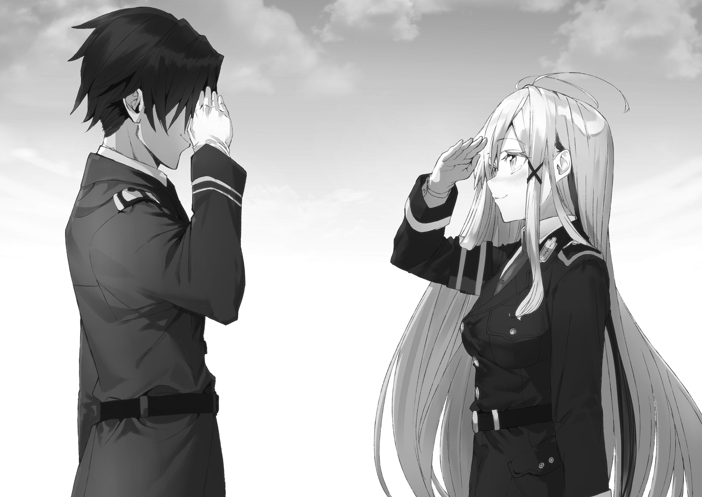
あとがき
ガーターベルトはロマンですよ？ はじめまして、安里アサトと申します。
けったいな名前ですがもちろんペンネームです。由来は本名のもじりと「88」。
ぴんときた本編未読のあなた。本作はきっとお楽しみいただけるものと思います。
なんのこっちゃと思った未読のあなた。いつもとは少し目先の変わったエンターテインメントをお楽しみください。
そしてお読みいただいたあなた。ありがとうございます。いかがでしたか。戦闘メカにボーイミーツガールにディストピアにその他諸々、色々ぎゅぎゅっと詰まった本作ですが、何か一つでも琴線に触れるものがありましたら幸いです。
ちなみに書いてる私はそりゃあもう楽しかったです。なにせ私が読みたい話に！ 私好みの要素を全部ぎっちぎちに詰め込んで！ 私が書きたいように書いた話ですから！ なんでそれで大賞なんて身に余る賞をいただけたのか、私が一番わかりません。
まあ、実際にはそんなの応募の規定枚数に収まるはずもなく、泣く泣く切り捨てた要素もありまして。その一つであるガーターベルト（を描写するシーン）を改稿にあたり追加したわけです。可愛いですよねガーターベルト。エロいし。エロ可愛い。
同志のあなたは是非しらび様の手がけた超可憐なレーナと、彼女の絶対領域を色っぽく彩るガーターベルトをご堪能ください。
ガーターベルト派でないあなたが引く前に、いくつか本編について注釈でも。
・本作は第二次大戦の某枢軸国・某連合国の黒歴史をモチーフの一つにしていますが、別段それらの国に悪意があるとかではなく、考証にあたり手に入る資料が多かっただけです。
・本作は罵倒・侮蔑の意味で「ブタ」の語を使用していますが、別段ブタに悪意があるとかではなくむしろ好きです。美味しいですよねブタ。トンカツもトントロも大好きです。
・知覚同調の理論や各種兵器の性能諸元、各言語の訳はあまり本気にしないでください。必要に応じて改変してます。特に集合「的」無意識については意図的に誤解釈してます。
・仮想世界なのに度量衡がメートル法なのは、仮想単位だといまいち伝わらないためです。また尺貫法・ヤードポンド法でないのは、私がわからないからです。
・仮想世界なのに聖書だのレマルク氏だのが登場する理由は......ご想像にお任せします。
......ポンコツ露呈はここまでにして、最後に謝辞を。
担当編集、清瀬様、土屋様。いつもありがとうございます。私自身もやっとしている箇所に対し必ずいただけるご指摘と的確な分析、心強く思っておりますとともに、物語の精度が上がっていくのが感じられて、お二人との打ち合わせは毎回楽しみです。
しらび様。美麗で眼差しに力があり、どこか凜とはりつめた気配を纏うキャラクター達をありがとうございます。本来あるべきプロテクター類をフル装備した超絶恰好いいシンのラフを頂いた時は、本編設定を変更してこちらで描いていただくべきか真剣に悩みました。
Ｉ‐Ⅳ様。『弱い駄作機』とかいう無茶振りにも拘らず、素晴らしく不吉で兵器としての無慈悲さに満ち、何より滅茶苦茶恰好いい〈ジャガーノート〉をデザインしていただきました。細かい行間まで汲み取った数々の設定には感激しきりです。また強敵通り越して無敵感漂う〈レギオン〉達と、可愛らしすぎて一機うちにも欲しいファイドもありがとうございます。
そして、本作をお手に取ってくださったあなた。ありがとうございます。本作一冊でも完結してますが、まだまだ物語は続きますので、どうぞ今後ともよろしくおつきあいくださいませ。
それでは、虚飾と虚栄満ちる箱庭に。血と鉄焼ける戦地の空の、星の、風の、花の元に。そこに生きた彼らの傍らに、あなたをひととき、お連れすることができますように。
あとがき執筆中ＢＧＭ：シドニア（ａｎｇｅｌａ）
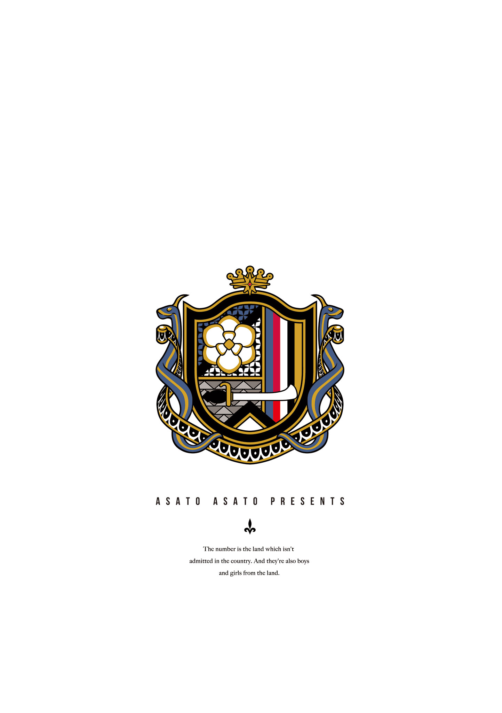
安里アサト
陸戦専用・高機動型・できれば多脚のメカを偏愛する自律式空想製造システム。スペックが化物なワンオフ機よりも量産機や旧世代機、ステータス一点振りの欠陥機が好き。そんなわけで本作のメカは愛全開！ で陸戦専用・量産型・多脚の欠陥機です！ ......あれ？
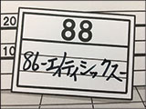
イラスト／しらび
小説の挿絵・ゲームイラスト等を多数手がけるイラストレーター。代表作は『りゅうおうのおしごと！』（ＧＡ文庫）『無彩限のファントム・ワールド』（ＫＡエスマ文庫）ほか。
本書に対するご意見、ご感想をお寄せください。
電撃文庫公式ホームページ 読者アンケートフォーム
http://dengekibunko.jp/
※メニューの「読者アンケート」よりお進みください。
ファンレターあて先
〒102-8584 東京都千代田区富士見1-8-19
アスキー・メディアワークス電撃文庫編集部
「安里アサト先生」係
「しらび先生」係
「Ⅰ‐Ⅳ先生」係
初出
本書は第23回電撃小説大賞で《大賞》を受賞した『86─エイティシックス─』に加筆・修正したものです。
この物語はフィクションです。実在の人物・団体等とは一切関係ありません。
 電撃文庫
電撃文庫
86─エイティシックス─
安里アサト
発 行 2017年3月10日
発行者 塚田正晃
発行所 株式会社KADOKAWA
〒102-8177 東京都千代田区富士見2-13-3
03-3238-8745（営業）
http://www.kadokawa.co.jp/
プロデュース アスキー・メディアワークス
〒102-8584 東京都千代田区富士見1-8-19
03-5216-8399（編集）
http://dengekibunko.jp/
本書（電子版）に掲載されているコンテンツ（ソフトウェア／プログラム／データ／情報を含む）の著作権およびその他の権利は、すべて株式会社KADOKAWAおよび正当な権利を有する第三者に帰属しています。
法律の定めがある場合または権利者の明示的な承諾がある場合を除き、これらのコンテンツを複製・転載、改変・編集、翻案・翻訳、放送・出版、公衆送信（送信可能化を含む）・再配信、販売・頒布、貸与等に使用することはできません。
(C)2017 ASATO ASATO / KADOKAWA CORPORATION
※2017年7月15日発行の電撃文庫『86─エイティシックス─』7版に基づき制作